CircuiTikZ
version 1.8.6-unreleased (2026/02/10)
4 The components: list
This section is dedicated to the full list of available components.
4.1 Grounds and supply voltages
Ground symbols and power supplies — they have two different classes for styling.
4.1.1 Grounds
For the grounds, the center anchor is put on the connecting point of the symbol, so that you can use them directly in a path specification.
Ground, type: node (node[ground]{}). Class: grounds.
Tailless ground, type: node (node[tlground]{}). Class: grounds.
Reference ground, type: node (node[rground]{}). Class: grounds.
Signal ground, type: node, fillable (node[sground]{}). Class: grounds.
Thicker tailless reference ground, type: node (node[tground]{}). Class: grounds.
Noiseless ground, type: node (node[nground]{}). Class: grounds.
Protective ground, type: node, fillable (node[pground]{}). Class: grounds.
Chassis ground17, type: node (node[cground]{}). Class: grounds.
European style ground, type: node (node[eground]{}). Class: grounds.
European style ground, version 218, type: node (node[eground2]{}). Class: grounds.
Anchors for grounds are a bit strange, given that they have the center spot at the same location than north and all the ground will develop “going down”:
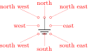 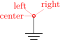
You can change the scale of these components (all the ground symbols together) by setting the key grounds/scale (default 1.0).
17 These last three were contributed by Luigi “Liverpool”
18 These last two were contributed by @fotesan
4.1.2 Power supplies
VCC/VDD, type: node (node[vcc]{}). Class: power supplies.
VEE/VSS, type: node (node[vee]{}). Class: power supplies.
The power supplies are normally drawn with the arrows shown in the list above.
They are similar to ground anchors, and the geographical anchors are correct only for the default arrow.
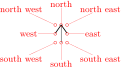
4.1.2.2 Power supplies customization
You can change the scale of the power supplies by setting the key power supplies/scale (default 1.0).
Given that the power supply symbols are basically arrows, you can change them using all the options of the arrows.meta package (see the TikZ manual for details) by changing the keys monopoles/vcc/arrow and monopoles/vee/arrow (the default for both is legacy, which will use the old code for drawing them). Note that the anchors are at the start of the connecting lines, and that geographical anchors are just approximation if you change the arrow symbol!
\begin{circuitikz}
% next macro is available in ctikzmanutils.sty
\def\coord(#1){\showcoord(#1)<0:0.3>}
\draw (0,0)
node[vcc](vcc){VCC} \coord(vcc) ++(2,0)
node[vee](vee){VEE} \coord(vee);
\ctikzset{monopoles/vcc/arrow={Stealth[red, width=6pt, length=9pt]}}
\ctikzset{monopoles/vee/arrow={Latex[blue]}}
\draw (0,-2)
node[vcc](vcc){VCC} \coord(vcc) ++(2,0)
node[vee](vee){VEE} \coord(vee);
\end{circuitikz}
However, arrows in TikZ are in the same class with the line thickness, so they do not scale with neither the class power supplies scale nor the global scale parameter (you should use transform canvas={scale…} for this).
If you want the arrows to behave like the legacy symbols (which are shapes), only in the arrow definitions, you can use the special length parameter \scaledwidth19 in the arrow definition, which correspond to the width of the legacy vcc or vee. Compare the effects on the following circuit.
\ctikzset{%
monopoles/vcc/arrow={Triangle[width=0.8*\scaledwidth, length=\scaledwidth]},
monopoles/vee/arrow={Triangle[width=6pt, length=8pt]},
}
\begin{circuitikz}[baseline=(vo.center)]
\node [ocirc](TW) at (0,0) {};
\draw (TW.east) -- ++(1,0) node[midway, above]{$v_i$} node[op amp, anchor=-](A1){};
\draw (A1.up) -- ++(0, 0.3) node[vcc]{\SI{+10}{V}};
\draw (A1.down) -- ++(0,-0.3) node[vee]{\SI{-10}{V}};
\draw (A1.+) -- ++(-0.5,0) to[battery2, invert, l_=\SI{2}{V}] ++(0,-1) node[ground]{};
\draw (A1.out) to[short, -o] ++(0.5,0) node[above](vo){$v_o$};
\end{circuitikz} \qquad
\begin{circuitikz}[baseline=(vo.center), scale=0.6, transform shape]
\node [ocirc](TW) at (0,0) {};
\draw (TW.east) -- ++(1,0) node[midway, above]{$v_i$} node[op amp, anchor=-](A1){};
\draw (A1.up) -- ++(0, 0.3) node[vcc]{\SI{+10}{V}};
\draw (A1.down) -- ++(0,-0.3) node[vee]{\SI{-10}{V}};
\draw (A1.+) -- ++(-0.5,0) to[battery2, invert, l_=\SI{2}{V}] ++(0,-1) node[ground]{};
\draw (A1.out) to[short, -o] ++(0.5,0) node[above](vo){$v_o$};
\end{circuitikz}
19 Thanks to @Schrödinger’s cat on TeX stackexchange site
4.2 Resistive bipoles
 short: Short circuit, type: path-style, nodename: shortshape. Class: default.
short: Short circuit, type: path-style, nodename: shortshape. Class: default.
open: Open circuit, type: path-style, nodename: openshape. Class: default.
generic: Generic (symmetric) bipole, type: path-style, fillable, nodename: genericshape. Class: resistors.
xgeneric: Crossed generic (symmetric) bipole, type: path-style, fillable, nodename: xgenericshape. Class: resistors.
sgeneric: Slashed generic bipole, type: path-style, fillable, nodename: sgenericshape. Class: resistors.
singeneric: Sine generic bipole20, type: path-style, fillable, nodename: singenericshape. Class: resistors.
tgeneric: Tunable generic bipole, type: path-style, fillable, nodename: tgenericshape. Class: resistors.
ageneric: Generic asymmetric bipole, type: path-style, fillable, nodename: agenericshape. Class: resistors.
memristor: Memristor, type: path-style, fillable, nodename: memristorshape. Aliases: Mr. Class: resistors.
Both shortshape and openshape are not really supposed to be used; they are dummy shapes used as placeholders for the path-drawing routines.
If americanresistors option is active (or the style [american resistors] is used — this is the default for the package), the resistors are displayed as follows:
R: Resistor, type: path-style, nodename: resistorshape. Aliases: american resistor. Class: resistors.
vR: Variable resistor, type: path-style, nodename: vresistorshape. Aliases: variable american resistor. Class: resistors.
 pR: Potentiometer, type: path-style, nodename: potentiometershape. Aliases: american potentiometer. Class: resistors.
pR: Potentiometer, type: path-style, nodename: potentiometershape. Aliases: american potentiometer. Class: resistors.
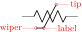sR: Resistive sensor, type: path-style, nodename: resistivesensshape. Aliases: american resistive sensor. Class: resistors.
ldR: Ligth-Dependent resistor, type: path-style, fillable, nodename: ldresistorshape. Aliases: american light dependent resistor. Class: resistors.
If instead europeanresistors option is active (or the style [european resistors] is used), the resistors, variable resistors and potentiometers are displayed as follows:
 R: Resistor, type: path-style, fillable, nodename: genericshape. Aliases: european resistor. Class: resistors.
R: Resistor, type: path-style, fillable, nodename: genericshape. Aliases: european resistor. Class: resistors.
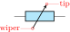vR: Variable resistor, type: path-style, fillable, nodename: tgenericshape. Aliases: variable european resistor. Class: resistors.
pR: Potentiometer, type: path-style, fillable, nodename: genericpotentiometershape. Aliases: european potentiometer. Class: resistors.
sR: Resistive sensor, type: path-style, fillable, nodename: thermistorshape. Aliases: european resistive sensor. Class: resistors.
ldR: Ligth-Dependent resistor, type: path-style, fillable, nodename: ldgenericshape. Aliases: european light dependent resistor. Class: resistors.
Other miscellaneous resistor-like devices:
varistor: Varistor, type: path-style, fillable, nodename: varistorshape. Class: resistors.
mov: Metal-Oxide varistor, type: path-style, fillable, nodename: movshape. Class: resistors.
phR: Photoresistor, type: path-style, fillable, nodename: photoresistorshape. Aliases: photoresistor. Class: resistors.
thR: Thermistor, type: path-style, fillable, nodename: thermistorshape. Aliases: thermistor. Class: resistors.
thRp: PTC thermistor, type: path-style, fillable, nodename: thermistorptcshape. Aliases: thermistor ptc. Class: resistors.
 thRn: NTC thermistor, type: path-style, fillable, nodename: thermistorntcshape. Aliases: thermistor ntc. Class: resistors.
thRn: NTC thermistor, type: path-style, fillable, nodename: thermistorntcshape. Aliases: thermistor ntc. Class: resistors.
20 Contributed by Jakob Leide on GitHub
4.2.1 Potentiometers: wiper position
Since version 0.9.5, you can control the position of the wiper in potentiometers using the key wiper pos, which is a number in the range \([0,1]\). The default middle position is wiper pos=0.5.
\begin{circuitikz}[american]
\ctikzset{resistors/width=1.5, resistors/zigs=9}
\draw (0,0) to[pR, name=A] ++(0,-4);
\draw (1.5,0) to[pR, wiper pos=0.3, name=B] ++(0,-4);
\ctikzset{european resistors}
\draw (3,0) to[pR, wiper pos=0.8, name=C] ++(0,-4);
\foreach \i in {A, B, C}
\node[right] at (\i.wiper) {\i};
\end{circuitikz}
Since version 1.6.0, potentiometers and variable resistors have extra anchors21, to allow this kind of circuit (that seems to be common in some region):
\begin{circuitikz}[european]
\draw (0,0) to[battery2, l=E] ++(0,4.5)
-- ++(2,0) coordinate(tmp)
to[vR, l2_=$P_1$ and \SI{10}{\kohm}, mirror,
invert, name=P]
(0,0-|tmp) -- (0,0);
\draw (0,0-|tmp) -- ++(1.5,0)
to[R=$R_1$, -*] ++(0,2) coordinate(p)
|- (P.wiper);
\draw (p) to[rmeterwa, t=V] (tmp-|p) -- (tmp);
\end{circuitikz}
21 Thanks to a suggestion by Dr. Matthias Jung on GitHub
4.2.2 Generic sensors anchors
Generic sensors have an extra anchor named label to help position the type of dependence, if needed:
\begin{circuitikz}
\draw (0,2) to[sR, l=$R$, name=mySR] ++(3,0);
\node [font=\tiny, right] at(mySR.label) {-t\si{\degree}};
\draw (0,0) to[sL, l=$L$, name=mySL] ++(3,0);
\node [draw, circle, inner sep=2pt] at(mySL.label) {};
\draw (0,-2) to[sC, l=$C$, name=mySC] ++(3,0);
\node [font=\tiny, below right, inner sep=0pt] at(mySC.label) {+H\si{\%}};
\end{circuitikz}
The anchor is positioned just on the corner of the segmented line crossing the component.
4.2.3 Resistive components customization
4.2.3.1 Geometry. You can change the scale of these components (all the resistive bipoles together) by setting the key resistors/scale (default 1.0). Similarly, you can change the widths by setting resistors/width (default 0.8).
You can change the width of these components (all the resistive bipoles together) by setting the key resistors/width to something different from the default 0.8.
For the american style resistors, you can change the number of “zig-zags” by setting the key resistors/zigs (default value 3).
\begin{circuitikz}[
longpot/.style = {pR, resistors/scale=0.75,
resistors/width=1.6, resistors/zigs=6}]
\draw (0,1.5) to[R, l=$R$] ++(4,0);
\draw (0,0) to[longpot, l=$P$] ++(4,0);
\ctikzset{resistors/scale=1.5}
\draw (0,-1.5) to[R, l=$R$] ++(4,0);
\end{circuitikz}
4.2.3.2 Thickness. The line thickness of the resistive components is governed by the class thickness; you can change it assigning a value to the key resistors/thickness (default none, that means bipoles/thickness is used, and that defaults to 2.0; the value is relative to the base line thickness).
We can call modifiers the elements that are added to the basic shape to express some characteristics of the component; for example the arrows for the variable resistors or the bar for the sensors. Normally the thickness of these elements are the same as the one chosen for the component22. You can change their thickness with the class key modifier thickness which is relative to the main component thickness.
\begin{circuitikz}[american]
\draw (0,2) to[vR] ++(2,0) to[sR] ++(2,0);
\ctikzset{resistors/thickness=4}
\draw (0,1) to[vR] ++(2,0) to[sR] ++(2,0);
\ctikzset{resistors/modifier thickness=0.5}
\draw (0,0) to[vR] ++(2,0) to[sR] ++(2,0);
\end{circuitikz}
4.2.3.3 Arrows You can change the arrow tips used in tunable resistors (vR, tgeneric) with the key tunable end arrow and in potentiometers with the key wiper end arrow (by default the key is the word “default” to obtain the default arrow, which is latexslim for both). Also you can change the start arrow with the corresponding tunable start arrow or wiper start arrow (the default value “default” is equivalent to {} for both, which means no arrow).
You can change that globally or locally, as ever. The tip specification is the one you can find in the TikZ manual (“Arrow Tip Specifications”). For the photoresistor and the two “flavors” of the light-dependent resistor (ldR, american or european), the style of the arrows follow the opto commands as in the photodiodes and phototransistor: see 4.4.3.1.
\begin{tikzpicture}[american]
% globally all the potentiometrs
\ctikzset{wiper end arrow={Kite[open]},
opto arrows/color=blue, opto end arrow={Triangle}}
\draw (0,0) to[tgeneric] ++(2,0) to[phR] ++(2,0)
% set locally on this variable resistor
to[vR, tunable end arrow={Stealth[red]},
tunable start arrow={Bar}, invert] ++(0,-2)
to[pR, mirror] ++(-4,0);
\end{tikzpicture}
4.2.3.4 Details of American (“zig-zag”) resistors. American (zig-zag) resistors have a little joining problem23 with the leading wires if the thickness is greater than two. In the following drawing you can see the problem when the thickness grows from 1 to 4.
| thickness=1 | thickness=2 | thickness=3 | thickness=4 |
Since v1.7.0, one possibility to correct the problem is to change the type of joining of the zig-zag line, using the key resistors/zigzag join, which is a command that by default is void. For example, the following effect is obtained by using
\ctikzset{resistors/zigzag hook/.code={\pgfsetroundcap}}
| thickness=1 | thickness=2 | thickness=3 | thickness=4 |
or you can even go full rounded
\ctikzset{resistors/zigzag hook/.code={\pgfsetroundcap\pgfsetroundjoin}}
| thickness=1 | thickness=2 | thickness=3 | thickness=4 |
Another possibility is to add a little horizontal “stub” to the shape, with the key resistors/zigzag stub (default 0), which will add a first part which is a continuation of the wire:
\ctikzset{resistors/zigzag stub=0.05}% this is relative to the resistor's length
| thickness=1 | thickness=2 | thickness=3 | thickness=4 |
…or you can just combine all of them as you prefer. With the standard join/cap options, the look of the resistors for thickness from 1 to 4 is shown here:
Standard drawing of American resistors
With a 5% stub:
With a 20% stub:
Finally, here is the detailed shape with thickness 2 (red=0, blue=0.05, green=0.2), magnified six times:
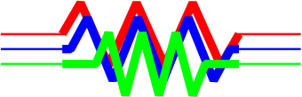
22 Due to a bug in versions before 1.3.4, that didn’t happen for thermistors
23 Noticed by Jakob Leide on GitHub and later discussed here.
4.3 Capacitors and inductors: dynamical bipoles
4.3.1 Capacitors
capacitor: Capacitor, type: path-style, fillable, nodename: capacitorshape. Aliases: C. Class: capacitors.
 curved capacitor: Curved (polarized) capacitor, type: path-style, fillable, nodename: ccapacitorshape. Aliases: cC. Class: capacitors.
curved capacitor: Curved (polarized) capacitor, type: path-style, fillable, nodename: ccapacitorshape. Aliases: cC. Class: capacitors.
ecapacitor: Electrolytic capacitor, type: path-style, fillable, nodename: ecapacitorshape. Aliases: eC,elko. Class: capacitors.
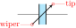variable capacitor: Variable capacitor, type: path-style, fillable, nodename: vcapacitorshape. Aliases: vC. Class: capacitors.
capacitive sensor: Capacitive sensor, type: path-style, fillable, nodename: capacitivesensshape. Aliases: sC. Class: capacitors.
piezoelectric: Piezoelectric Element, type: path-style, fillable, nodename: piezoelectricshape. Aliases: PZ. Class: capacitors.
cpe: Constant Phase Element, type: path-style, fillable, nodename: cpeshape. Aliases: cpe. Class: capacitors.
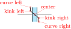feC: Ferroelectric capacitor24, type: path-style, fillable, nodename: ferrocapshape. Aliases: ferrocap. Class: capacitors.
Capacitors are fillable since v1.4.1; this is normally just a stylistic option but in the case of ferroelectric capacitors that could be used to show the state of the hysteresis of the component.
\begin{tikzpicture}[]
\ctikzset{capacitors/.cd,
thickness=4, modifier thickness=0.5}
\draw (0,0) to[feC, l=$C_1$, v=v1] ++(3,0)
to[feC, l=$C_2$, fill=green, name=C2] ++(0,-2);
\node [font=\tiny, above right, inner sep=1pt]
at(C2.kink left) {$S_1$};
\end{tikzpicture}
There is also the (deprecated25 — its polarity is not coherent with the rest of the components) polar capacitor; please do not use it.
4.3.2 Capacitive sensors anchors
For capacitive sensors, you have the same anchors than in the case of resistive sensors, see section 4.2.2.
4.3.3 Capacitors customizations
You can change the scale of the capacitors by setting the key capacitors/scale to something different from the default 1.0. For thickness, you can use the same keys (applied to the capacitors class) as for resistors in 4.2.3.2.
Variable capacitors arrow tips follow the settings of resistors, see section 4.2.3.3.
The relative size of the capacitors is a bit of a mixed bag, because each one has historically different internal parameters that makes maintaining coherence quite difficult. In v1.4.1 this has changed and now you can use styling options to change the way the capacitors look. The main parameter you can set is capacitors/width (default 0.2), which controls the standard distance between plates. That will change all the components (notice that piezoelectric and cpe default width is twice the size of a standard capacitor — although this is not evident for the cpe given its shape.)
\begin{circuitikz}[european]
\draw (0,1) to[C=aaa] ++(2,0) to[cpe=bbb] ++(2,0);
\draw[color=red] (0,0) to [C] ++(2,0);
\draw[color=blue] (0,0) to [cpe] ++(2,0)
to[cpe, fill=yellow, capacitors/width=0.1] ++(2,0);
\end{circuitikz}
The capacitors/height key is available also to set the height of the capacitor; the default is 0.6 for most of the capacitors, but 0.5 for electrolytic ones and 0.7 for piezoelectric. When used, it will set all of them at the same value, which is a good thing.
If you want that only a specific kind of capacitor has a different value for a key, you can always use a style which will have a local scope, as in the following example.
\begin{tikzpicture}
\draw (0,1) to [C] ++(1,0) to [elko] ++(1,0);
\ctikzset{capacitors/width=0.15, capacitors/height=0.5}
\draw (0,0) to [C] ++(1,0) to [elko] ++(1,0);
\tikzset{big elko/.style={elko=#1, capacitors/width=0.3}}
\draw (0,-1) to [C] ++(1,0) to[big elko] ++(1,0);
\end{tikzpicture}
4.3.4 Inductors
If the cuteinductors option is active (default behaviour), or the style [cute inductors] is used, the inductors are displayed as follows:
L: Inductor, type: path-style, nodename: cuteinductorshape. Aliases: cute inductor. Class: inductors.
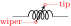vL: Variable inductor, type: path-style, nodename: vcuteinductorshape. Aliases: variable cute inductor. Class: inductors.
sL: Inductive sensor, type: path-style, nodename: scuteinductorshape. Aliases: cute inductive sensor. Class: inductors.
If the americaninductors option is active (or the style [american inductors] is used), the inductors are displayed as follows:
L: Inductor, type: path-style, nodename: americaninductorshape. Aliases: american inductor. Class: inductors.
vL: Variable inductor, type: path-style, nodename: vamericaninductorshape. Aliases: variable american inductor. Class: inductors.
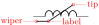sL: Inductive sensor, type: path-style, nodename: samericaninductorshape. Aliases: american inductive sensor. Class: inductors.
Finally, if the europeaninductors option is active (or the style [european inductors] is used), the inductors are displayed as follows:
L: Inductor, type: path-style, nodename: fullgenericshape. Aliases: european inductor. Class: inductors.
vL: Variable inductor, type: path-style, nodename: tfullgenericshape. Aliases: variable european inductor. Class: inductors.
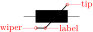sL: Inductive sensor, type: path-style, nodename: sfullgenericshape. Aliases: european inductive sensor. Class: inductors.
For historical reasons, chokes come only in the cute. You can use the core west and core east anchors (see 4.3.6.2) to build your own core lines for the other inductors.
cute choke: Choke, type: path-style, nodename: cutechokeshape. Class: inductors.
4.3.5 Inductors customizations
You can change the scale of the inductors by setting the key inductors/scale to something different from the default 1.0. For thickness, you can use the same keys (applied to the inductors class) as for resistors in 4.2.3.2.
Variable inductors arrow tips follow the settings of resistors, see section 4.2.3.3.
You can change the width of these components (all the inductors together, unless you use style or scoping) by setting the key inductors/width to something different from the default, which is 0.8 for american and european inductors, and 0.6 for cute inductors.
Moreover, you can change the number of “coils” drawn by setting the key inductors/coils (default value 5 for cute inductors and 4 for american ones). Notice that the minimum number of coils is 1 for american inductors, and 2 for cute ones.
\begin{circuitikz}[
longL/.style = {cute inductor, inductors/scale=0.75,
inductors/width=1.6, inductors/coils=9}]
\draw (0,1.5) to[L, l=$L$] ++(4,0);
\draw (0,0) to[longL, l=$L$] ++(4,0);
\ctikzset{inductors/scale=1.5, inductor=american}
\draw (0,-1.5) to[L, l=$L$] ++(4,0);
\end{circuitikz}
4.3.5.1 Chokes can have single and double lines, and can have the line thickness adjusted (the value is relative to the thickness of the inductor). In general, you should use the anchors (see 4.3.6.2) to add core lines to inductors.
\begin{circuitikz}[american]
\draw (0,0) to[cute choke] ++(3,0);
\draw (0,-1) to[cute choke, twolineschoke] ++(3,0);
\ctikzset{bipoles/cutechoke/cthick=2, twolineschoke}
\draw (0,-2) to[cute choke] ++(3,0);
\draw (0,-3) to[cute choke, onelinechoke] ++(3,0);
\end{circuitikz}
4.3.6 Inductors anchors
For inductive sensors, you have the same anchors than in the case of resistive sensors, see section 4.2.2.
4.3.6.1 Taps. Inductors have an additional anchor, called midtap, that connects to the center of the coil “wire”. Notice that this anchor could be on one side or the other of the component, depending on the number of loops of the element; if you need a fixed position, you can use the geographical anchors.
\begin{circuitikz}[
loops/.style={circuitikz/inductors/coils=#1}]
\ctikzset{cute inductors}
\draw (0,2) to[L, loops=5, name=A] ++(2,0)
to[L, loops=6, name=B] ++(2,0);
\ctikzset{american inductors}
\draw (0,0) to[L, loops=5, name=C] ++(2,0)
to[L, loops=6, name=D] ++(2,0);
\foreach \i in {A, B, C, D}
\node[circle, fill=red, inner sep=1pt] at (\i.midtap){};
\end{circuitikz}
4.3.6.2 Core anchors. Inductors have additional anchors to add core lines (for historical reasons, there is a cute choke component also, but to use inductors in the chosen style you’d better use these anchors). The anchors are called core west and core east and they are positioned at a distance that you can tweak with the \ctikzset key bipoles/inductors/core distance (default 2pt).
\begin{circuitikz}[]
\ctikzset{american}
\draw (0,3) to[L=$L$, name=myL] ++(2,0);
\draw[thick] (myL.core west) -- (myL.core east);
\ctikzset{cute inductors}
\draw (0,1.5) to[L=$L$, name=myL] ++(2,0);
\draw[densely dashed] (myL.core west) -- (myL.core east);
\ctikzset{european, bipoles/inductors/core distance=4pt}
\draw (0,0) to[L=$L$, name=myL, label distance=2pt] ++(2,0);
\draw[thick, double] (myL.core west) -- (myL.core east);
\end{circuitikz}
Notice that the core lines will not change the position of labels. You have to move them by hand if needed (or position them on the other side); see 5.1.1.1.
4.3.6.3 Dot anchors. Inductances also have “dot” anchors26, to help positioning dots when specifying mutual inductance signs. The anchors are name lr dot (for lower right dot), ur dot (upper right) and so on:
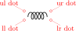 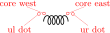
and as you can see, you have to be careful if you use dot anchors and core anchors together. You can change the position of the dots by changing the keys bipoles/inductors/dot x distance (default 4pt), which represent how much the dot extends outside the component width, and the corresponding dot y distance (default 1pt), which serves the same scope in the height direction.
\begin{circuitikz}[]
\ctikzset{bipoles/inductors/.cd, dot x distance=3pt,
dot y distance=0pt}
\draw (0,2) to[L=$L_1$, name=l1] ++(3,0);
\draw (0,0) to[L, l_=$L_2$, name=l2, inductors/width=1.4,
inductors/coils=11] ++(3,0);
\path (l1.ur dot) node[circ]{} (l2.ul dot) node[circ]{};
\draw ([yshift=-0.2cm]l1.south)
to[out=-45, in=45] node[right]{$M$}
([yshift=0.2cm]l2.north);
\end{circuitikz}
Notice that the position of the dot anchors does not coincide with the position of the dots in the transformers (see section 4.19), because there they depend on the size of the complete double-bipole more that on the size of the inductances.
26 proposed by Romano in a discussion by GitHub user AndreaDiPietro92
4.4 Diodes and such
There are three basic styles for diodes: empty (fillable in color), full (completely filled with the draw color) and stroke (empty, but with a line across them).
You can switch between the styles setting the key diode (for example \ctikzset{diode=full} or empty or stroke, or with the styles full diodes, empty diodes and stroke diodes.
To use the default element, simply use the name shown for the empty diodes without the final “o” — that is D, sD, and so on. The names shown in the following tables will draw the specified diode independently on the style chosen (that is, leD* is always a full LED diode).
The package options fulldiode, strokediode, and emptydiode (and the styles full diodes, stroke diodes, and empty diodes) define which shape will be used by abbreviated commands such that D, sD, zD, zzD, tD, pD, leD, VC, Ty,Tr (no stroke symbol available!).
empty diode: Empty diode, type: path-style, fillable, nodename: emptydiodeshape. Aliases: Do. Class: diodes.
empty Schottky diode: Empty Schottky diode, type: path-style, fillable, nodename: emptysdiodeshape. Aliases: sDo. Class: diodes.
empty Zener diode: Empty Zener diode, type: path-style, fillable, nodename: emptyzdiodeshape. Aliases: zDo. Class: diodes.
empty ZZener diode: Empty ZZener diode, type: path-style, fillable, nodename: emptyzzdiodeshape. Aliases: zzDo. Class: diodes.
empty tunnel diode: Empty tunnel diode, type: path-style, fillable, nodename: emptytdiodeshape. Aliases: tDo. Class: diodes.
empty photodiode: Empty photodiode, type: path-style, fillable, nodename: emptypdiodeshape. Aliases: pDo. Class: diodes.
empty led: Empty led, type: path-style, fillable, nodename: emptylediodeshape. Aliases: leDo. Class: diodes.
empty laser diode: Empty laser diode27, type: path-style, fillable, nodename: emptylaserdiodeshape. Aliases: lasD. Class: diodes.
empty varcap: Empty varcap, type: path-style, fillable, nodename: emptyvarcapshape. Aliases: VCo. Class: diodes.
empty TVS diode: Empty TVS diode, transorb28, type: path-style, fillable, nodename: emptytvsdiodeshape. Aliases: tvsDo. Class: diodes.
empty Shockley diode: Empty Shockley diode29, type: path-style, fillable, nodename: emptyshdiodeshape. Aliases: shDo. Class: diodes.
empty bidirectionaldiode: Empty bidirectionaldiode, type: path-style, fillable, nodename: emptybidirectionaldiodeshape. Aliases: biDo. Class: diodes.
 full diode: Full diode, type: path-style, nodename: fulldiodeshape. Aliases: D*. Class: diodes.
full diode: Full diode, type: path-style, nodename: fulldiodeshape. Aliases: D*. Class: diodes.
full Schottky diode: Full Schottky diode, type: path-style, nodename: fullsdiodeshape. Aliases: sD*. Class: diodes.
full Zener diode: Full Zener diode, type: path-style, nodename: fullzdiodeshape. Aliases: zD*. Class: diodes.
full ZZener diode: Full ZZener diode, type: path-style, nodename: fullzzdiodeshape. Aliases: zzD*. Class: diodes.
full tunnel diode: Full tunnel diode, type: path-style, nodename: fulltdiodeshape. Aliases: tD*. Class: diodes.
full photodiode: Full photodiode, type: path-style, nodename: fullpdiodeshape. Aliases: pD*. Class: diodes.
full led: Full led, type: path-style, nodename: fulllediodeshape. Aliases: leD*. Class: diodes.
full laser diode: Full laser diode, type: path-style, nodename: fulllaserdiodeshape. Aliases: lasD*. Class: diodes.
full varcap: Full varcap, type: path-style, nodename: fullvarcapshape. Aliases: VC*. Class: diodes.
full TVS diode: Full TVS diode, transorb, type: path-style, nodename: fulltvsdiodeshape. Aliases: tvsD*. Class: diodes.
full Shockley diode: Full Shockley diode, type: path-style, nodename: fullshdiodeshape. Aliases: shD*. Class: diodes.
full bidirectionaldiode: Full bidirectionaldiode, type: path-style, nodename: fullbidirectionaldiodeshape. Aliases: biD*. Class: diodes.
These shapes have no exact node-style counterpart, because the stroke line is built upon the empty variants:
 stroke diode: Stroke diode, type: path-style, fillable, nodename: emptydiodeshape. Aliases: D-. Class: diodes.
stroke diode: Stroke diode, type: path-style, fillable, nodename: emptydiodeshape. Aliases: D-. Class: diodes.
stroke Schottky diode: Stroke Schottky diode, type: path-style, fillable, nodename: emptysdiodeshape. Aliases: sD-. Class: diodes.
stroke Zener diode: Stroke Zener diode, type: path-style, fillable, nodename: emptyzdiodeshape. Aliases: zD-. Class: diodes.
 stroke ZZener diode: Stroke ZZener diode, type: path-style, fillable, nodename: emptyzzdiodeshape. Aliases: zzD-. Class: diodes.
stroke ZZener diode: Stroke ZZener diode, type: path-style, fillable, nodename: emptyzzdiodeshape. Aliases: zzD-. Class: diodes.
stroke tunnel diode: Stroke tunnel diode, type: path-style, fillable, nodename: emptytdiodeshape. Aliases: tD-. Class: diodes.
stroke photodiode: Stroke photodiode, type: path-style, fillable, nodename: emptypdiodeshape. Aliases: pD-. Class: diodes.
stroke led: Stroke led, type: path-style, fillable, nodename: emptylediodeshape. Aliases: leD-. Class: diodes.
stroke laser diode: Stroke laser diode, type: path-style, fillable, nodename: emptylaserdiodeshape. Aliases: lasD-. Class: diodes.
stroke varcap: Stroke varcap, type: path-style, fillable, nodename: emptyvarcapshape. Aliases: VC-. Class: diodes.
stroke TVS diode: Stroke TVS diode, transorb, type: path-style, fillable, nodename: emptytvsdiodeshape. Aliases: tvsD-. Class: diodes.
27 Added by André Alves in v1.4.4
28 Transorbs were suggested by Anisio Braga
29 Shockley diodes were suggested by @Dauph
4.4.1 Tripole-like diodes
The following tripoles are entered with the usual command, of the form to[Tr, …]. In the following list you can see the traditional, or legacy, shape of the Thyristors-type devices.
full diode: Full diode, type: path-style, nodename: fulldiodeshape. Aliases: D*. Class: diodes.
stroke diode: Stroke diode, type: path-style, fillable, nodename: emptydiodeshape. Aliases: D-. Class: diodes.
triac: Standard triac (shape depends on package option), type: path-style, fillable, nodename: emptytriacshape. Aliases: Tr. Class: diodes.
empty triac: Empty triac, type: path-style, fillable, nodename: emptytriacshape. Aliases: Tro. Class: diodes.
full triac: Full triac, type: path-style, nodename: fulltriacshape. Aliases: Tr*. Class: diodes.
thyristor: Standard thyristor (shape depends on package option), type: path-style, fillable, nodename: emptythyristorshape. Aliases: Ty. Class: diodes.
empty thyristor: Empty thyristor, type: path-style, fillable, nodename: emptythyristorshape. Aliases: Tyo. Class: diodes.
full thyristor: Full thyristor, type: path-style, nodename: fullthyristorshape. Aliases: Ty*. Class: diodes.
stroke thyristor: Stroke thyristor, type: path-style, fillable, nodename: emptythyristorshape. Aliases: Ty-. Class: diodes.
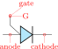put: Standard Programmable Unipolar Transistor30(shape depends on package option), type: path-style, fillable, nodename: emptyputshape. Aliases: PUT. Class: diodes.
empty put: Empty PUT, type: path-style, fillable, nodename: emptyputshape. Aliases: PUTo. Class: diodes.
full put: Full PUT, type: path-style, nodename: fullputshape. Aliases: PUT*. Class: diodes.
stroke put: Stroke PUT, type: path-style, fillable, nodename: emptyputshape. Aliases: PUT-. Class: diodes.
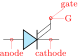gto: Standard GTO (shape depends on package option), type: path-style, fillable, nodename: emptygtoshape. Aliases: GTO. Class: diodes.
empty gto: Empty GTO, type: path-style, fillable, nodename: emptygtoshape. Aliases: GTOo. Class: diodes.
full gto: Full GTO, type: path-style, nodename: fullgtoshape. Aliases: GTO*. Class: diodes.
stroke gto: Stroke GTO, type: path-style, fillable, nodename: emptygtoshape. Aliases: GTO-. Class: diodes.
gtobar: Standard GTO with bar-type gate (shape depends on package option), type: path-style, fillable, nodename: emptygtobarshape. Aliases: GTOb. Class: diodes.
empty gtobar: Empty GTO, bar-type, type: path-style, fillable, nodename: emptygtobarshape. Aliases: GTObo. Class: diodes.
full gtobar: Full GTO, bar-type, type: path-style, nodename: fullgtobarshape. Aliases: GTOb*. Class: diodes.
stroke gtobar: Stroke GTO, bar type, type: path-style, fillable, nodename: emptygtobarshape. Aliases: GTOb-. Class: diodes.
agtobar: Standard GTO with bar-type gate on anode (shape depends on package option), type: path-style, fillable, nodename: emptyagtobarshape. Aliases: aGTOb. Class: diodes.
empty agtobar: Empty GTO, bar-type on anode, type: path-style, fillable, nodename: emptyagtobarshape. Aliases: aGTObo. Class: diodes.
full agtobar: Full GTO, bar-type on anode, type: path-style, nodename: fullagtobarshape. Aliases: aGTOb*. Class: diodes.
stroke agtobar: Stroke GTO, bar-type on anode, type: path-style, fillable, nodename: emptyagtobarshape. Aliases: aGTOb-. Class: diodes.
igct: Standard IGCT31, type: path-style, fillable, nodename: emptyigctshape. Aliases: IGCT. Class: diodes.
empty igct: Empty IGCT, type: path-style, fillable, nodename: emptyigctshape. Aliases: IGCTo. Class: diodes.
full igct: Full IGCT, type: path-style, nodename: fulligctshape. Aliases: IGCT*. Class: diodes.
stroke igct: Stroke IGCT, type: path-style, fillable, nodename: emptyigctshape. Aliases: IGCT-. Class: diodes.
For basically stylistic reasons, there is a different, more compact, shape available for them, activated with the key thyristor style=compact (the default is legacy). All the devices above are present, we will show here just the automatic version for shortness.
triac: Standard triac (shape depends on package option), type: path-style, fillable, nodename: emptytriacshape. Aliases: Tr. Class: diodes.
thyristor: Standard thyristor (shape depends on package option), type: path-style, fillable, nodename: emptythyristorshape. Aliases: Ty. Class: diodes.
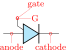put: Standard Programmable Unipolar Transistor (shape depends on package option), type: path-style, fillable, nodename: emptyputshape. Aliases: PUT. Class: diodes.
gto: Standard gto (shape depends on package option), type: path-style, fillable, nodename: emptygtoshape. Aliases: GTO. Class: diodes.
gtobar: Standard GTO with a bar symbol on the gate (shape depends on package option), type: path-style, fillable, nodename: emptygtobarshape. Aliases: GTOb. Class: diodes.
agtobar: Standard GTO with bar-type gate on anode (shape depends on package option), type: path-style, fillable, nodename: emptyagtobarshape. Aliases: aGTOb. Class: diodes.
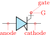igct: Standard igct (shape depends on package option), type: path-style, fillable, nodename: emptyigctshape. Aliases: IGCT. Class: diodes.
30 This components, and the GTO family, has been suggested by GitHub user JetherReis.
31 The IGCTs family has been contributed by Paul Sacco
4.4.2 Thyristors anchors and customization
When inserting a thyristor, a triac or a potentiometer, one needs to refer to the third node-gate (gate or G) for the former two; wiper (wiper or W) for the latter one. This is done by giving a name to the bipole:
\begin{circuitikz} \draw
(0,0) to[Tr, n=TRI] (2,0)
to[pR, n=POT] (4,0);
\draw[dashed] (TRI.G) -| (POT.wiper)
;\end{circuitikz}
As commented above, you can change the shape of these devices (globally or locally) setting the key thyristor style=compact (the default is legacy). Additionally, normally the plain GTO symbols come without the arrows, but you can add them using a syntax similar to the one explained in section 4.2.3.3 using the arrow group gto gate.
\begin{circuitikz}[]
\ctikzset{thyristor style=compact}
\draw (0,0) to[GTO=$G_1$] ++(0,-3);
\ctikzset{gto gate end arrow=latexslim}
\draw (2,0) to[GTO*=$G_2$, mirror] ++(0,-3);
\draw (4,0) to[GTOb-=$G_2$, mirror] ++(0,-3);
\end{circuitikz}
Notice that you can set both gto gate end arrow and gto gate start arrow — choosing just one of the two you can decide the “rotation” direction of the symbol. There is little space though, so don’t overdo it.
4.4.3 Diode customizations
You can change the scale of the diodes by setting the key diodes/scale to something different from the default 1.0. In Romano’s opinion, diodes are somewhat big with the default style of the package, so a setting like \ctikzset{diodes/scale=0.6} is recommended.
\begin{circuitikz}
\draw (0,1) to[D, l=$D$] ++(2,0)
node[npn, anchor=B]{};
\ctikzset{diodes/scale=0.6}
\draw (0,-1) to[D, l=$D$] ++(2,0)
node[npn, anchor=B]{};
\end{circuitikz}
4.4.3.1 Optical devices arrows You can change the direction of the LEDs and photodiodes’ arrows by using the binary keys led arrows from cathode and pd arrows to cathode (the default are led arrows from anode and pd arrows to anode), as you can see in the following example.
\begin{circuitikz}
\ctikzset{led arrows from anode} % default
\ctikzset{pd arrows to anode} % default
\ctikzset{full diodes}
\draw (0,0) to[leD] ++(1.5,0) to[pD] ++(1.5,0);
\ctikzset{stroke diodes}
\draw (0,-1) to[leD] ++(1.5,0) to[pD] ++(1.5,0);
\ctikzset{empty diodes}
\draw (0,-2) to[leD] ++(1.5,0) to[pD] ++(1.5,0);
\ctikzset{led arrows from cathode}
\ctikzset{pd arrows to cathode}
\ctikzset{full diodes}
\draw (0,-4) to[leD] ++(1.5,0) to[pD] ++(1.5,0);
\ctikzset{stroke diodes}
\draw (0,-5) to[leD] ++(1.5,0) to[pD] ++(1.5,0);
\ctikzset{empty diodes}
\draw (0,-6) to[leD] ++(1.5,0) to[pD] ++(1.5,0);
\end{circuitikz}

Since version 1.5.532, you can change the arrows used for LEDs, photodiodes and laser diodes with the generic arrows options shown in 4.2.3.3, using the name opto, like in the following (overdone) example. Normally you want just to change the end arrow…
As you can see, you can also have the option to globally change the color, relative thickness, and dash pattern by setting keys with the \ctikzset command (or, like in the following example, directly in the node instantiation) under the opto arrows hierarchy. The available keys are:
| parameter | default |
description |
| relative thickness | 1.0 |
multiply the class thickness |
| color | default |
stroke color: default is the same as the component |
| dash | default |
dash pattern: default means not to change the setting for the component; none means unbroken line; every other input is a dash pattern.33 |
\begin{tikzpicture}
\newcommand{\optos}{%
to[leD] ++(1.5,0) to[pD*] ++(1.5,0)
to[lasD] ++(1.5,0)}
\begin{scope}
\draw (0,2) \optos;
\ctikzset{led arrows from cathode}
\ctikzset{pd arrows to cathode}
\ctikzset{opto arrows/.cd, color=red,
dash={{1pt}{1pt}}}
\draw (0,0) \optos;
\end{scope}
\begin{scope}[color=blue, yshift=-6cm]
\ctikzset{opto end arrow={Triangle[angle'=45]}}
\ctikzset{opto start arrow={Hooks[red]}}
\draw (0,4) \optos;
\ctikzset{opto arrows/color=black}
\ctikzset{opto arrows/relative thickness=2}
\draw (0,2) \optos;
\ctikzset{led arrows from cathode}
\ctikzset{pd arrows to cathode}
\draw (0,0) \optos;
\end{scope}
\end{tikzpicture}
4.4.3.2 Zener and TVS diode options You can change the shape of the Zener ZZener and TVS diodes using the flag diode straight whiskers (and reset it with the option diode sloped whiskers); this will change the “whiskers” of the diodes to be at a right angle34 instead the sloped normal way.
\begin{tikzpicture}
\draw (0,1) to [zzDo] ++(1,0) to[zzD-] ++(1,0)
to[zzD*] ++(1,0) to[tvsD-] ++(2,0);
\ctikzset{diode straight whiskers}
\draw (0,0) to [zzDo] ++(1,0) to[zzD-] ++(1,0)
to[zzD*] ++(1,0) to[tvsD-] ++(2,0);
\end{tikzpicture}
32 Thanks to the idea by Dr. Matthias Jung on GitHub.
33 Follows the syntax of the pattern sequence \pgfsetdash — see TikZ manual for details; phase is always zero. Basically you pass pairs of dash-length – blank-length dimensions, see the examples.
34 Suggested by Dr. Matthias Jung
4.5 Sources and generators
Notice that source and generators are divided in three classes that can be styled independently: traditional battery symbols (class batteries), independent generators (class sources) and dependent generators (class csources). This is because they are often treated differently, and so you can choose to, for example, fill the dependent sources but not the independent ones.
4.5.1 Batteries
battery: Battery, type: path-style, nodename: batteryshape. Class: batteries.
battery1: Single battery cell, type: path-style, nodename: battery1shape. Class: batteries.
battery2: Single battery cell, type: path-style, nodename: battery2shape. Class: batteries.
solar: Solar-driven battery (arrows follow the same style options as photodiodes, see 4.4.3.1)35, type: path-style, nodename: solarshape. Class: batteries.
baertty: Randall Munroe’s baertty36, type: path-style, nodename: baerttyshape. Class: batteries.
4.5.2 Stationary sources
european voltage source: Voltage source (european style), type: path-style, fillable, nodename: vsourceshape. Aliases: vsource, vsourceEU. Class: sources.
cute european voltage source: Voltage source (cute european style), type: path-style, fillable, nodename: vsourceCshape. Aliases: vsourceC, ceV. Class: sources.
american voltage source: Voltage source (american style), type: path-style, fillable, nodename: vsourceAMshape. Aliases: vsourceAM. Class: sources.
european current source: Current source (european style), type: path-style, fillable, nodename: isourceshape. Aliases: isource, isourceEU. Class: sources.
cute european current source: Current source (cute european style), type: path-style, fillable, nodename: isourceCshape. Aliases: isourceC, ceI. Class: sources.
american current source: Current source (american style), type: path-style, fillable, nodename: isourceAMshape. Aliases: isourceAM. Class: sources.
If (default behavior) europeancurrents option is active (or the style european currents is used), the shorthands current source, isource, and I are equivalent to european current source. Otherwise, if americancurrents option is active (or the style [american currents] is used) they are equivalent to american current source.
Similarly, if (default behavior) europeanvoltages option is active (or the style european voltages is used), the shorthands voltage source, vsource, and V are equivalent to european voltage source. Otherwise, if americanvoltages option is active (or the style american voltages is used) they are equivalent to american voltage source.
4.5.3 Sinusoidal sources
These two are basically the same symbol; to distinguish among them, you have to add a label, which will be a voltage or a current. Another option would be to configure the sinusoidal current source as an open shape using \ctikzset{bipoles/isourcesin/angle=80} similar to the dcisource in section 4.5.8.
 sinusoidal voltage source: Sinusoidal voltage source, type: path-style, fillable, nodename: vsourcesinshape. Aliases: vsourcesin, sV. Class: sources.
sinusoidal voltage source: Sinusoidal voltage source, type: path-style, fillable, nodename: vsourcesinshape. Aliases: vsourcesin, sV. Class: sources.
sinusoidal current source: Sinusoidal current source37, type: path-style, fillable, nodename: isourcesinshape. Aliases: isourcesin, sI. Class: sources.
\begin{circuitikz}[american]
\draw (0,2) to[sV=$V$] ++(3,0);
\draw (0,1) to[sI=$I$] ++(3,0);
\ctikzset{bipoles/isourcesin/angle=80}
\draw (0,0) to[sI] ++(3,0);
\end{circuitikz}
37 The configurable open shape of the sinusoidal current source has been added by Maximilian Martin
4.5.4 Controlled sources
european controlled voltage source: Controlled voltage source (european style), type: path-style, fillable, nodename: cvsourceshape. Aliases: cvsource, cvsourceEU. Class: csources.
cute european controlled voltage source: Voltage source (cute european style), type: path-style, fillable, nodename: cvsourceCshape. Aliases: cvsourceC, cceV. Class: csources.
american controlled voltage source: Controlled voltage source (american style), type: path-style, fillable, nodename: cvsourceAMshape. Aliases: cvsourceAM. Class: csources.
european controlled current source: Controlled current source (european style), type: path-style, fillable, nodename: cisourceshape. Aliases: cisource, cisourceEU. Class: csources.
cute european controlled current source: Current source (cute european style), type: path-style, fillable, nodename: cisourceCshape. Aliases: cisourceC, cceI. Class: csources.
american controlled current source: Controlled current source (american style), type: path-style, fillable, nodename: cisourceAMshape. Aliases: cisourceAM. Class: csources.
empty controlled source: Empty controlled source, type: path-style, fillable, nodename: ecsourceshape. Aliases: ecsource. Class: csources.
If (default behavior) europeancurrents option is active (or the style european currents is used), the shorthands controlled current source, cisource, and cI are equivalent to european controlled current source. Otherwise, if americancurrents option is active (or the style american currents is used) they are equivalent to american controlled current source.
Similarly, if (default behavior) europeanvoltages option is active (or the style european voltages is used), the shorthands controlled voltage source, cvsource, and cV are equivalent to european controlled voltage source. Otherwise, if americanvoltages option is active (or the style american voltages is used) they are equivalent to american controlled voltage source.
The following two behave like the corresponding independent sources, see section 4.5.3.
 controlled sinusoidal voltage source: Controlled sinusoidal voltage source, type: path-style, fillable, nodename: cvsourcesinshape. Aliases: controlled vsourcesin, cvsourcesin, csV. Class:
csources.
controlled sinusoidal voltage source: Controlled sinusoidal voltage source, type: path-style, fillable, nodename: cvsourcesinshape. Aliases: controlled vsourcesin, cvsourcesin, csV. Class:
csources.
controlled sinusoidal current source: Controlled sinusoidal current source, type: path-style, fillable, nodename: cisourcesinshape. Aliases: controlled isourcesin, cisourcesin, csI. Class: csources.
4.5.5 Noise sources
In this case, the “direction” of the source is undefined. Noise sources are filled in gray by default, but if you choose the dashed style, they become fillable.
noise voltage source: Sinusoidal voltage source, type: path-style, nodename: vsourceNshape. Aliases: vsourceN, nV. Class: sources.
noise current source: Sinusoidal current source, type: path-style, nodename: isourceNshape. Aliases: isourceN, nI. Class: sources.
You can change the fill color with the key circuitikz/bipoles/noise sources/fillcolor:
\begin{circuitikz}
\draw(0,0) to [nV, l=$e_n$] ++(2,0);
\draw(0,-2) to [nI, l=$i_n$] ++(2,0);
\begin{scope}[circuitikz/bipoles/noise sources/fillcolor=red!50]
\draw(3,0) to [nV, l=$e_n$] ++(2,0);
\draw(3,-2) to [nI, l=$i_n$] ++(2,0);
\end{scope}
\end{circuitikz}
If you prefer a patterned noise generator (similar to the one you draw by hand) you can use the fake color dashed:
\begin{circuitikz}
\draw(0,0) to [nV, l=$e_n$] ++(2,0);
\draw(0,-2) to [nI, l=$i_n$] ++(2,0);
\begin{scope}[circuitikz/bipoles/noise sources/fillcolor=dashed]
\draw(3,0) to [nV, l=$e_n$] ++(2,0);
\draw(3,-2) to [nI, l=$i_n$] ++(2,0);
\end{scope}
\end{circuitikz}
Notice that if you choose the dashed style, the noise sources are fillable:
\begin{circuitikz}
\ctikzset{bipoles/noise sources/fillcolor=dashed}
\draw(0,0) to [nV, l=$e_n$] ++(2,0);
\draw(0,-2) to [nI, l=$i_n$] ++(2,0);
\begin{scope}
\draw(3,0) to [nV, l=$e_n$, fill=yellow!50!red] ++(2,0);
\draw(3,-2) to [nI, l=$i_n$, fill=blue!50!white] ++(2,0);
\end{scope}
\end{circuitikz}
4.5.6 Special sources
square voltage source: Square voltage source, type: path-style, fillable, nodename: vsourcesquareshape. Aliases: vsourcesquare, sqV. Class: sources.
vsourcetri: Triangle voltage source, type: path-style, fillable, nodename: vsourcetrishape. Aliases: tV. Class: sources.
esource: Empty voltage source, type: path-style, fillable, nodename: esourceshape. Class: sources.
pvsource: Photovoltaic-voltage source, type: path-style, fillable, nodename: pvsourceshape. Class: sources.
pvmodule: Photovoltaic module source38, type: path-style, fillable, nodename: pvmoduleshape. Class: sources.
 ioosource: Double Zero style current source, type: path-style, fillable, nodename: oosourceshape. Class: sources.
ioosource: Double Zero style current source, type: path-style, fillable, nodename: oosourceshape. Class: sources.
voosource: Double Zero style voltage source, type: path-style, fillable, nodename: oosourceshape. Class: sources.
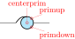oosourceatrans: auto-transformer source39, type: path-style, fillable, nodename: oosourceatransshape. Class: sources.
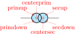oosourcetrans: transformer source40, type: path-style, fillable, nodename: oosourcetransshape. Class: sources.
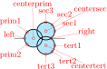ooosource: transformer with three windings41, type: path-style, fillable, nodename: ooosourceshape. Class: sources.
The transformer shapes vector group options can be specified for the primary (prim=value), the secondary (sec=value) and tertiary (tert=value) three-phase vector groups: the value can be one of delta, wye, eyw42 and zig.
\begin{circuitikz}
\draw (0,0) to[oosourcetrans, prim=zig, sec=delta, o-] ++(2,0)
to[oosourcetrans, prim=delta, sec=wye,-o] ++(0,-2)
to[ooosource, prim=eyw, sec=zig, tert=delta] (0,0)
to[oosourceatrans, prim=wye, -*] ++(0,-2);
\end{circuitikz}
These two “sources” have additional anchors that reach the center of the symbol;43 they are used sometimes to add a (symbolic) connection there, like for example a ground connection.
\begin{tikzpicture}[european, scale=2, transform shape,
smalldot/.style={draw, circle,red, inner sep=0.2pt}]
\draw (0,0) to[oosourcetrans, name=A,
prim=delta, sec=wye] ++(1,0)
to[ooosource, name=B, prim=eyw, sec=zig,
tert=delta] ++(1,0)
(A.symbolsec) -- ++(-45:0.5) node[ground]{};
\node [smalldot] at (A.symbolprim) {};
\node [smalldot] at (A.symbolsec) {};
\node [smalldot] at (B.symbolprim) {};
\node [smalldot] at (B.symbolsec) {};
\node [smalldot] at (B.symboltert) {};
\end{tikzpicture}
38 Added by André Alves in v1.3.5
39 The oosourceatrans component has been suggested by Max Börjesson on GitHub
40 The oosourcetrans and ooosource components have been added by user @olfline on GitHub
41 The component here is scaled up 1.5 times to better show the anchors.
42 The eyw symbol was suggested by Jakob Leide on GitHub
43 Suggested by user @lapreindl on GitHub.
4.5.7 Nullator and norator
These are special elements used in some approaches to model ideal amplifiers44.
nullator: Nullator element (virtual short circuit; forces V and I to zero), type: path-style, fillable, nodename: nullatorshape. Class: sources.
norator: Norator element (admits any combination of V and I), type: path-style, fillable, nodename: noratorshape. Class: sources.
They are in the sources class, but they are not treated like sources in the labeling sense (they have both bipoles/is voltage=false and bipoles/is current=false, see 5.2.2).
\begin{circuitikz}[american]
\draw (0,0) node[ground](GND){}
to [I,l=$i_s$,invert]
++(0,2.5) -- ++(1.5,0) coordinate(up)
to[nullator, v=0, i=0, name=A]
(up|-GND) node[ground]{};
\draw (up) to[R, *-*] ++(2,0) coordinate(out)
to[norator, v^=$v_o$]
(out|-GND) node[ground]{};
\end{circuitikz}
The symbol shapes used here seems to be the most common in publications; if you prefer the shapes from the Wikipedia article, you can use the following definitions:
\tikzset{noratorW/.style={voosource,
bipoles/oosource/width=0.6,
bipoles/oosource/height=0.3},
nullatorW/.style={esource, sources/scale=0.5}}
\begin{tikzpicture}
\draw (0,0) to[nullatorW] ++(2,0) to[noratorW] ++(0, -2);
\end{tikzpicture}
44 See the Wikipedia article; suggested by user atticus-sullivan on GitHub.
4.5.8 DC sources
dcvsource: DC voltage source, type: path-style, fillable, nodename: dcvsourceshape. Class: sources.
dcisource: DC current source, type: path-style, fillable, nodename: dcisourceshape. Class: sources.
The size of the broken part of the DC current source is configurable by changing the value of bipoles/dcisource/angle (default 80); values must be between 0 (no circle at all, probably not useful) and 90 (full circle, again not useful).
\begin{circuitikz}
\draw (0,0) to[dcvsource] ++(2,0)
to [dcisource, fill=yellow] ++(2,0) ;
\ctikzset{bipoles/dcisource/angle=45}
\draw (0,-2) to[dcvsource] ++(2,0)
to [dcisource, fill=yellow] ++(2,0) ;
\end{circuitikz}

4.5.9 Sources customizations
4.5.9.1 Size. You can change the scale of the batteries by setting the key batteries/scale, for the controlled (dependent) sources with csources/scale, and for all the other independent sources and generators with sources/scale, to something different from the default 1.0.
Notice that the size of the double-circle sources (and of the triple-circle one) are tuned so that the full source occupy more or less the same horizontal space than one of the single-circle one; as a consequence, the circles are much smaller. If you want to have the same circle radius, you have to scale (locally!) those sources by one factor that is 1.5384 (\(1/0.65\)) for oosource, 1.6667 (\(1/0.6\)) for oosourcetrans, and 1.8182 (\(1/0.55\)) for ooosource.
\begin{circuitikz}
\draw[color=red] (0,0) to[esource] ++(3,0);
\draw (0,0) to[oosourcetrans, prim=delta, sec=wye,
sources/scale=1.667] ++(3,0);
\end{circuitikz}
Alternatively, you can use the key ootrans size (which has possible values small and large, default small) to change the sizes of oosourcetrans, oosourceatrans, and ooosource so that they match the size of a normal source.
\begin{circuitikz}
\draw[color=red] (0,2) to[esource] ++(2,0);
\draw (0,2) to[oosourcetrans] ++(2,0)
to [oosourceatrans] ++(2,0)
to [ooosource] ++(2,0);
\ctikzset{ootrans size=large}
\draw[color=red] (0,0) to[esource] ++(2,0);
\draw (0,0) to[oosourcetrans] ++(2,0)
to [oosourceatrans] ++(2,0)
to [ooosource] ++(2,0);
\end{circuitikz}
4.5.9.2 Waveform symbols. Internal symbols of sinusoidal, triangular and square sources are drawn with the same line thickness as the component by default. You can modify this by setting the key sources/symbol/thickness for independent sources and the corresponding csource/... for dependent ones. The value used here is relative to the component (i.e. the circle) value.
Normally the symbol is oriented in the same direction as the line, and rotate rigidly with the component; you can change this orientation using the key sources/symbol/rotate or csource/.... The default value is 90 which correspond to the “line” direction (remember, path components are defined as horizontal ones). If instead of an angle value you use auto, the symbol will be rotated so that the waveform is always vertical, similar to what happens in instruments:
\begin{circuitikz}
\draw (0,1) to[sqV] ++(3,0)
to[sqV] ++(1,-1)
to[sqV] ++(0,-3);
\ctikzset{sources/symbol/rotate=auto}
\ctikzset{sources/symbol/rotate=auto, sources/symbol/thickness=3}
\draw[color=red] (0,0) to[sqV] ++(3,0)
to[sqV] ++(0,-3)
to[sqV] (0,0);
\end{circuitikz}
4.5.9.3 Polarity symbols. The symbols drawn into the american voltage source45 can be changed by using the \ctikzset keys bipoles/vsourceam/inner plus and .../inner minus (by default they are $+$ and $\vphantom{+}-$ respectively, in the current font), and move them nearer of farther away by twiddling bipoles/vsourceam/margin (default 0.7, less means nearer). The reason of the \vphantom can be found in section 5.5.6.
You can do the same with the american controlled voltage sources, substituting cvsourceam to vsourceam (notice the initial “c”).
\begin{circuitikz}[american]
\ctikzset{bipoles/vsourceam/inner plus={\tiny $+$}}
\ctikzset{bipoles/vsourceam/inner minus={\tiny $-$}}
\draw (0,0) to[V, l_=$V$] ++(0,3)
to[R=\SI{5}{\ohm}] ++(3,0)
to[V, invert,
bipoles/vsourceam/inner plus={\color{red}\tiny $\oplus$},
bipoles/vsourceam/inner minus={\color{blue}\tiny $\ominus$},
bipoles/vsourceam/margin=0.5]
++(0,-3) to[short, -*] (0,0) node[ground]{};
\end{circuitikz}
4.5.9.4 Orientation of the polarity symbols.
When rotating the sources, they usually move rigidly. This results in the fact that American voltage sources look nice when vertical but could be better in other directions. Since v1.6.746, you can choose several rotation modes for those symbols (independent and dependent sources).
You can obtain several different rotations or rotation modes by changing the value of the key sources/symbol/sign rotation (with \ctikzset). The value default (also the default value!) uses the legacy, “rigid” position.
If you provide a number, the symbols are rotated by that value (0 means that the minus sign is aligned with the wire, 90 is very similar to default47). If you use straight, the symbols are rotated to be always horizontal. With auto, the symbols are drawn in the same way as 0 for inclination less the 45°, and as 90 otherwise.The following drawing shows the results for several different parameter values.
\begin{tikzpicture}[american, scale=0.6, transform shape]
%\ctikzset{sources/symbol/sign rotation=default}
\foreach \a in {0,30,...,359} \draw (0,0) -- ++(\a:1) to[V] ++(\a:2);
\ctikzset{sources/symbol/sign rotation=0}
\foreach \a in {0,30,...,359} \draw[color=red] (6,0) -- ++(\a:1) to[V] ++(\a:2);
\ctikzset{sources/symbol/sign rotation=auto}
\foreach \a in {0,30,...,359} \draw[color=blue] (12,0) -- ++(\a:1) to[V] ++(\a:2);
\ctikzset{sources/symbol/sign rotation=straight}
\foreach \a in {0,30,...,359} \draw (18,0) -- ++(\a:1) to[V] ++(\a:2);
\end{tikzpicture}
4.5.9.5 Three-phase symbols. The three-phase symbols delta, wye, eyw, and zig follows the line thickness exactly as the waveform ones (see above). Additionally, you can scale them up and down by changing the value of the keys sources/symbol/delta scale, .../wye scale, .../eyw scale, and .../zig scale (default 1).
\begin{circuitikz}[scale=1.8, transform shape]
\tikzset{myoosource/.style={ooosource,
prim=wye, sec=delta, tert=zig,
}}
\draw (0,2) to[myoosource] ++(2,0);
\ctikzset{%
sources/symbol/thickness=0.5,
sources/symbol/delta scale=1.2,
sources/symbol/wye scale=1.4,
sources/symbol/zig scale=1.3,
}
\draw (0,0) to[myoosource] ++(2,0);
\end{circuitikz}
4.5.9.6 Rotating the three-phase symbols. You have several keys to rotate, locally or globally, the three-phase symbols48. The symbols can be rotated (with effect on every symbol of that type) with the key sources/symbol/delta rot and similar ones for eyw, wye and zig. Additionally, you can rotate the symbol on a specific winding by usin the key sources/symbol/prim rot and similar ones for sec, tert and upper.
\begin{circuitikz}[scale=1.5, transform shape]
\draw (0,0) to[oosourcetrans, prim=delta, sec=delta,
sources/symbol/sec rot=180] ++(2,0);
\draw (0,-1) to[ooosource, prim=eyw, sec=delta,
tert=delta, sources/symbol/delta rot=180] ++(2,0);
\end{circuitikz}

45 Since version 1.1.0, thanks to the suggestions and discussion in this TeX.SX question.
46 Thanks to the suggestions and discussion by user @jotagah on GitHub.
47 Not exactly equal; the position of the symbols could be slightly different depending on the font.
48 Suggested by Jakob Leide
4.5.10 Source borders
Unfortunately, the border of the sources is only easily accessed if some anchor is provided. The border anchors of the shapes are not tight on them (see section 3.1.2), which is not easily changeable, given that the algorithm that positions the labels depends on it.
On the other hand, TikZ powerful partway coordinate calculation (around section 13.5.3 of the manual) makes it possible to easily identify points on a circle if the center and one point of the circle are known, as you can see in the following example.
\begin{tikzpicture}[]
\path (0,0) to[oosourcetrans, name=T, ]++(2,0);
% Use partway modifiers to reach a point on the left circle
\draw ($(T.centerprim)!1!45:(T.left)$) -- ++(-135:0.2)
-- ++(0,-1) node[ground]{};
\begin{scope}[font=\tiny\ttfamily, pin distance=2mm, inner sep=0pt]
\foreach \a in {-90,-45,...,90}
\node [circ, scale=0.5, pin=\a:\a, color=red] at
($(T.centersec)!1!\a:(T.right)$){};
\end{scope}
\end{tikzpicture}
A similar approach can be used for dependent sources. Just remember that the anchors move (rotate) together with the component.
\begin{tikzpicture}[american]
\draw (0,0) to [cvsource, name=S] ++(0,2);
\node [circ,red] at ($(S.e)!0.3333!(S.n)$) {};
\node [circ,blue] at ($(S.e)!0.6666!(S.n)$) {};
\end{tikzpicture}

4.5.10.1 Additional winding. The oosourcetrans and oosourceatrans components admit an additional winding, called upper winding49. It can be added by specifying the key oo upper winding; you can pass an additional parameter specifying the size (relative to the symbol circle size) of the added circle. The default is 0.7, but even the default can be changed by setting the key bipoles/oosourcetrans/upper circle size default. The height of the additional winding can be tweaked with the key bipoles/oosourcetrans/upper circle offset (default 1.3, which tries to mimic the shape of ooosource).
\begin{circuitikz}[scale=1.5, transform shape]
\draw (0,0) to[oosourcetrans, prim=delta, o-o, name=a,
sources/symbol/delta rot=180,
oo upper winding, upper=delta, sec=wye,
] ++(2,0);
\draw (a.centerprim) -- ++(210:0.4) node[ground]{};
\draw (a.uppertop) -- ++(90:0.1) node[vcc]{};
\draw [red] (a.symbolupper) to[short,-o] ++(45:0.5);
\draw (0,-1) to[oosourcetrans, oo upper winding=1
] ++(2,0);
\end{circuitikz}

4.5.10.2 Additional winding anchors. When using the upper winding, you have several additional anchors available.
\begin{circuitikz}[scale=1.5, transform shape,
smallsquare/.style={red, draw, inner sep=1pt}]
\draw (0,0) to[oosourcetrans, oo upper winding=0.85,
name=a, fill=cyan!30,upper=wye,
sources/symbol/upper rot=-90] ++(2,0);
\foreach\anc/\ang in {centerupper/-45, uppertop/90,
topright/30, topleft/150, symbolupper/210}
\draw[red] (a.\anc) node[smallsquare]{} -- ++(\ang:0.5)
++(\ang:0.1) node[font=\tiny\ttfamily,]{\anc};
\end{circuitikz}
\begin{circuitikz}[scale=1.5, transform shape,
smallsquare/.style={red, draw, inner sep=1pt}]
\draw (0,0) to[oosourceatrans, oo upper winding=0.75,
name=a, fill=cyan!30,prim=delta,upper=delta,
sources/symbol/upper rot=180] ++(2,0);
\foreach\anc/\ang in {centerupper/-45, uppertop/90,
topright/30, topleft/150, symbolupper/210}
\draw[red] (a.\anc) node[smallsquare]{} -- ++(\ang:0.5)
++(\ang:0.1) node[font=\tiny\ttfamily,]{\anc};
\end{circuitikz}
49 Suggested by Jakob Leide
4.6 Instruments
4.6.1 Basic round instruments
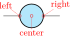rmeter: Round meter (use t=... for the symbol), type: path-style, fillable, nodename: rmetershape. Class: instruments.
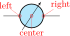rmeterwa: Round meter with arrow (use t=... for the symbol), type: path-style, fillable, nodename: rmeterwashape. Class: instruments.
ammeter: Legacy ammeter, type: path-style, fillable, nodename: ammetershape. Class: instruments.
voltmeter: Legacy voltmeter, type: path-style, fillable, nodename: voltmetershape. Class: instruments.
ohmmeter: Legacy ohmmeter, type: path-style, fillable, nodename: ohmmetershape. Class: instruments.
You can define styles if you want to use the new shapes for round instrument similarly to the legacy ones:50
\tikzset{vmeter/.style={rmeterwa, t=V}}
\tikzset{ameter/.style={rmeterwa, t=A}}
\tikzset{ometer/.style={rmeterwa, t=$\Omega$}}
\begin{tikzpicture}
% Old meter style
\draw (0,2) to[voltmeter] ++(2,0)
to[ammeter] ++(2,0)
to[ohmmeter] ++(2,0);
% New meter style
\draw (0,0) to[vmeter] ++(2,0)
to[ameter] ++(2,0)
to[ometer] ++(2,0);
\end{tikzpicture}
50 Suggested by user mxxmxn on GitHub.
4.6.2 Square instruments
Sometimes it is better to use a shape for instruments which is very different from the round symbols used for sources.
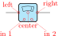smeter: Square meter (use t=... for the symbol), type: path-style, fillable, nodename: smetershape. Class: instruments.
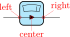qiprobe: QUCS-style current probe, type: path-style, fillable, nodename: qiprobeshape. Class: instruments.
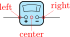qvprobe: QUCS-style voltage probe, type: path-style, fillable, nodename: qvprobeshape. Class: instruments.
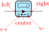qpprobe: QUCS-style power probe, type: path-style, fillable, nodename: qpprobeshape. Class: instruments.
4.6.3 Oscilloscopes and current probes
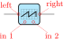oscope: Oscilloscope51, type: path-style, fillable, nodename: oscopeshape. Class: instruments.
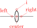iloop: Current loop (symbolic), type: path-style, nodename: iloopshape. Class: instruments.
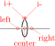iloop2: Current loop (real), type: path-style, nodename: iloop2shape. Class: instruments.
currtap: Current tap (probe)52, type: path-style, nodename: currtapshape. Class: instruments.
4.6.4 Instruments customizations
You can change the scale of all the instruments (including the current loops) by setting the key instruments/scale to something different from the default 1.0.
4.6.4.1 Current probes. You can change the inner dot in several way, by changing the following keys under the \ctikzset key bipoles/currtap:
| parameter | default |
description |
| thickness | default |
Set the thickness of the line (default: do not change the class thickness) |
| color | default |
stroke color: default is the same as the component |
| dash | default |
dash pattern: none means solid line, default means keep the global pattern53 |
| fill | default |
fill the inner dot; default means use the wire color, none do not fill, other keys must be a valid color |
| dot size | 0.5 |
relative size of the inner dot |
\begin{circuitikz}
\draw (0,2) to[currtap, bipoles/currtap/fill=none, *-]
++(2,0) to[currtap, bipoles/currtap/.cd,
fill=yellow, color=red, thickness=3,
dash={{1.14pt}{2pt}}] ++(2,0);
\draw (0,0) to[currtap=I, *-, name=ct] ++(2,0)
to[currtap, -*, name=ct2,
bipoles/currtap/dot size=0.3] ++(2,0);
\draw (ct.tap) -- ++(0,-1) (ct2.tap) -- ++(0,-1);
\end{circuitikz}
4.6.4.2 Square instruments index position. You can change the index position of square instruments with the key bipoles/smeter/index position (for smeter) or bipoles/qmeter/index position (for qiprobe, qvprobe and qpprobe). Use a value between 0 and 100 (the default is 80).
\begin{circuitikz}
% Default
\foreach [count=\i] \inst in
{smeter, qiprobe, qvprobe, qpprobe} {
\draw ({1.5*\i},1.4) to[\inst]
({1.5*(\i+1)},1.4);
}
% New indexes
\ctikzset{bipoles/smeter/index position=50}
\ctikzset{bipoles/qmeter/index position=25}
\foreach [count=\i] \inst in
{smeter, qiprobe, qvprobe, qpprobe} {
\draw ({1.5*\i},0) to[\inst]
({1.5*(\i+1)},0);
}
\end{circuitikz}
4.6.4.3 Oscilloscope waveform. You can change the waveform shown in the oscilloscope “screen”54. To change it, you just set the key bipoles/oscope/waveform to one of the available shape. You have available the shapes in the following list (the default is ramps):
\begin{circuitikz}
\foreach [count=\i] \wvf in {ramps, sin, square, triangle, lissajous, zero, none} {
\ctikzset{bipoles/oscope/waveform=\wvf}
\draw ({2*\i},1.4) node[oscopeshape](O){}
({2*\i},0.65) node[anchor=base]{\texttt{\wvf}};
}
\ctikzset{bipoles/oscope/width=1.0}
\foreach [count=\i] \wvf in {ramps, sin, square, triangle, lissajous, zero, none} {
\ctikzset{bipoles/oscope/waveform=\wvf}
\draw ({2*\i},0) node[oscopeshape]{};
}
\end{circuitikz}
If you want more or different shapes, you can define your owns, but you have to use low-level pgf commands (see part IX, “The Basic Layer”, in the PGF/TikZ manual). The code is executed into a \pgfscope …\endpgfscope environment, and it must use the path built with a \pgfusepath. The coordinates have been scaled so that the external box of the scope is a rectangle between (-1cm, -1cm) and (1cm, 1cm); the oscilloscope grid is fixed and painted between (-0.75cm, -0.5cm) and (0,75cm, 0.5cm). If you stretch the scope with the …width or …height keys, the drawing will be stretched too.
\ctikzset{%
bipoles/oscope/waveform/mywave/.code={%
\pgfsetcolor{red}
\pgfpathmoveto{\pgfpoint{-.75cm}{-.5cm}}
\pgfpathlineto{\pgfpoint{.75cm}{.5cm}}
\pgfusepath{draw}
\pgfsetcolor{green}
\pgfpathmoveto{\pgfpoint{-.75cm}{.5cm}}
\pgfpathlineto{\pgfpoint{.75cm}{-.5cm}}
\pgfusepath{draw}
}}
\begin{circuitikz}
\ctikzset{bipoles/oscope/waveform=mywave}
\draw (0,0) node[oscopeshape]{};
\end{circuitikz}
53 Follows the syntax of the pattern sequence \pgfsetdash — see TikZ manual for details; phase is always zero. Basically you pass pairs of dash-length – blank-length dimensions, see the examples.
54 Suggested by Mario Tafur on TeX.SX
4.6.5 Rotation-invariant elements
The oscope element will not rotate the “graph” shown with the component:
\begin{circuitikz}
\foreach \a in {0,45,...,350} {
\draw (0,0) to[oscope] (\a:3);
}
\end{circuitikz}
The rmeter, rmaterwa, and smeter have the same behavior.
However, if you prefer that the oscope, rmeter, smeter and rmeterwa instruments rotate the text or the diagram, you can use the key or style rotated instruments (the default style is straight instruments).
\begin{circuitikz}[scale=0.8, transform shape]
\ctikzset{rotated instruments} % new default
\draw (0,0) to[oscope] ++(0:3);
\draw (0,0) to[oscope] ++(60:3);
\draw (0,0) to[rmeter, t=A] ++(120:3);
% local override
\draw (0,0) to[rmeterwa, t=A, straight instruments] ++(180:3);
\ctikzset{straight instruments} % back to default
\draw (0,0) to[rmeterwa, t=A] ++(240:3);
% local override
\draw (0,0) to[smeter, t=A, rotated instruments] ++(300:3);
\end{circuitikz}
4.6.6 Instruments as node elements
The node-style usage of the oscope is also interesting, using the additional in 1 and in 2 anchors; notice that in this case you can use the text content of the node to put labels above it. Moreover, you can change the size of the oscilloscope by changing bipoles/oscope/width and bipoles/oscope/height keys (which both default to 0.6).
\begin{circuitikz}
\draw (0,1)
to[oscope=$C_1$, fill=green!20!gray, name=O1] ++(2,0);
\path (O1.right)
node[ground, scale=0.5, below right=4pt]{};
\ctikzset{bipoles/oscope/width=1.0}
\draw (1,-1)
node[oscopeshape, fill=yellow!20!orange](O2){$C_2$};
\draw (O2.in 2) to[short, *-] ++(0,-0.5) node[ground]{};
\draw (O2.in 1) to[short, *-] ++(0,-0.5)
-- ++(-1,0) node[currarrow, xscale=-1]{};
\end{circuitikz}
4.6.7 Measuring voltage and currents, multiple ways
This is the classical (legacy) option, with the voltmeter and ammeter. The problem is that elements are intrinsically horizontal, so they look funny if put in vertically.
\begin{circuitikz}
\draw (0,0) -- ++(1,0) to[R] ++(2,0)
to [ammeter] ++(0,-2) node[ground]{};
\draw (1,0) to[voltmeter] ++(0,-2)
node[ground]{};
\end{circuitikz}
So the solution is often changing the structure to keep the meters in horizontal position.
\begin{circuitikz}
\draw (0,0) -- ++(1,0) to[R] ++(2,0)
to [ammeter] ++(2,0) --
++(0,-1) node[ground]{};
\draw (1,0) -- (1,1) to[voltmeter]
++(2,0) node[ground]{};
\end{circuitikz}
Since version 0.9.0 you have more options for the measuring instruments. You can use the generic rmeterwa (round meter with arrow), to which you can specify the internal symbol with the option t=... (and is fillable).
\begin{circuitikz}[american]
\draw (0,0) -- ++(1,0) to[R] ++(2,0)
to [rmeterwa, t=A, i=$i$] ++(0,-2) node[ground]{};
\draw (1,0) to[rmeterwa, t=V, v=$v$] ++(0,-2)
node[ground]{};
\end{circuitikz}
This kind of component will keep the symbol horizontal, whatever the orientation:
\begin{circuitikz}[american]
\draw (0,0) -- ++(1,0) to[R] ++(2,0)
to [rmeterwa, t=A, i=$i$] ++(2,0) --
++(0,-1) node[ground]{};
\draw (1,0) -- (1,1) to[rmeterwa, t=V, v^=$v$]
++(2,0) node[ground]{};
\end{circuitikz}
The plain rmeter is the same, without the measuring arrow:
\begin{circuitikz}[american]
\draw (0,0) -- ++(1,0) to[R] ++(2,0)
to [rmeter, t=A, i=$i$] ++(0,-2) node[ground]{};
\draw (1,0) to[rmeter, t=V, v=$v$] ++(0,-2)
node[ground]{};
\end{circuitikz}
If you prefer it, you have the option to use square meters, in order to have more visual difference from generators:
\begin{circuitikz}[american]
\draw (0,0) -- ++(1,0) to[R] ++(2,0)
to [smeter, t=A, i=$i$] ++(0,-2) node[ground]{};
\draw (1,0) to[smeter, t=V, v=$v$] ++(0,-2)
node[ground]{};
\end{circuitikz}
Another possibility is to use QUCS55-style probes, which have the nice property of explicitly showing the type of connection (in series or parallel) of the meter:
\begin{circuitikz}[american]
\draw (0,0) -- ++(1,0) to[R] ++(2,0)
to [qiprobe, l=$i$] ++(0,-2) node[ground]{};
\draw (1,0) to[qvprobe, l=$v$] ++(0,-2)
node[ground]{};
\end{circuitikz}
If you want to explicitly show a power measurement, you can use the power probe qpprobe and using the additional anchors v+ and v- :
\begin{circuitikz}[american]
\draw (0,0) to[short,-*] ++(1,0) coordinate(b)
to[R] ++(2,0) to [qpprobe, l=$i$, a=$v$, name=P]
++(0,-2.5) node[ground](GND){};
\draw (P.v-) -| ++(-0.5,-1) coordinate(a)
to [short, -*] (a-|GND);
\draw (P.v+) -| (b);
\end{circuitikz}
The final possibility is to use oscilloscopes. For example:
\begin{circuitikz}[american]
\draw (0,0) -- ++(1,0) to[R] ++(3,0)
to [iloop, mirror, name=I] ++(0,-2)
node[ground] (GND){};
\draw (1,0) to[oscope, v=$v$] ++(0,-2)
node[ground]{};
\draw (I.i) -- ++(-0.5,0) node[oscopeshape, anchor=right, name=O]{};
\draw (O.south) -- (O.south |- GND) node[ground]{};
\end{circuitikz}
Or, if you want a more physical structure for the measurement setup:
\begin{circuitikz}[american]
\draw (0,0) -- ++(1,0) to[R] ++(3,0) to [iloop2, name=I] ++(0,-2)
node[ground] (GND){};
\ctikzset{bipoles/oscope/width=1.6}\ctikzset{bipoles/oscope/height=1.2}
\node [oscopeshape, fill=green!10](O) at (6,2){};
\node [bnc, xscale=-1, anchor=zero](bnc1) at (O.in 1){};
\node [bnc, , anchor=zero, rotate=-90](bnc2) at (O.in 2){};
\draw [-latexslim] (bnc1.hot) -| (1,0);
\draw (bnc2.hot) |- (I.i+);
\draw (I.i-) node[ground, scale=0.5]{};
\end{circuitikz}
55 QUCS is an open source circuit simulator: http://qucs.sourceforge.net/
4.7 Mechanical Analogy
 damper: Mechanical Damping, type: path-style, fillable, nodename: dampershape. Class: mechanicals.
damper: Mechanical Damping, type: path-style, fillable, nodename: dampershape. Class: mechanicals.
inerter: Mechanical Inerter, type: path-style, fillable, nodename: inertershape. Class: mechanicals.
spring: Mechanical Stiffness, type: path-style, nodename: springshape. Class: mechanicals.
 viscoe: Mechanical viscoelastic element56, type: path-style, fillable, nodename: viscoeshape. Class: mechanicals.
viscoe: Mechanical viscoelastic element56, type: path-style, fillable, nodename: viscoeshape. Class: mechanicals.
 mass: Mechanical Mass, type: path-style, fillable, nodename: massshape. Class: mechanicals.
mass: Mechanical Mass, type: path-style, fillable, nodename: massshape. Class: mechanicals.
56 Suggested by @Alex in https://tex.stackexchange.com/q/484268/38080
4.7.1 Mechanical elements customizations
You can change the scale of all the mechanical elements by setting the key mechanicals/scale to something different from the default 1.0.
4.8 Miscellaneous bipoles and symbols
Here you’ll find components that do not fit well in any category, or span several ones.
4.8.1 Miscellaneous bipoles
Here you’ll find bipoles that are not easily grouped in the categories above.
thermocouple: Thermocouple, type: path-style, nodename: thermocoupleshape. Class: misc.
fuse: Fuse, type: path-style, fillable, nodename: fuseshape. Class: misc.
afuse: Asymmetric fuse, type: path-style, fillable, nodename: afuseshape. Aliases: asymmetric fuse. Class: misc.
wfuse: “wiggly” fuse, type: path-style, name=B, nodename: wfuseshape. Aliases: wiggly fuse. Class: misc.
relais: Relais57, type: path-style, fillable, nodename: relaisshape. Class: misc.
squid: Squid, type: path-style, nodename: squidshape. Class: misc.
barrier: Barrier, type: path-style, nodename: barriershape. Class: misc.
openbarrier: Open barrier, type: path-style, nodename: openbarriershape. Class: misc.
You can tune how big the gap in the openbarrier is by setting bipole/openbarrier/gap (default value 1 meaning full width). The default width bipole/openbarrier/width is 0.21, while bipole/barrier/width is 0. These settings ensure minimal width without drawing any wire when the components’ node shapes are used.
european gas filled surge arrester: European gas filled surge arrester, type: path-style, fillable, nodename: european gas filled surge arrestershape. Class: misc.
american gas filled surge arrester: American gas filled surge arrester, type: path-style, fillable, nodename: american gas filled surge arrestershape. Class: misc.
If (default behaviour) europeangfsurgearrester option is active (or the style european gas filled surge arrester is used), the shorthands gas filled surge arrester and gf surge arrester are equivalent to the european version of the component.
If otherwise americangfsurgearrester option is active (or the style american gas filled surge arrester is used), the shorthands the shorthands gas filled surge arrester and gf surge arrester are equivalent to the american version of the component.
lamp: Lamp, type: path-style, fillable, nodename: lampshape. Class: misc.
bulb: Bulb, type: path-style, fillable, nodename: bulbshape. Class: misc.
wbulb: Wiggly bulb shape58, type: path-style, fillable, nodename: wbulbshape. Class: misc.
neonlampcc: Neon lamp59 (double cathode style), type: path-style, fillable, nodename: neonlampccshape. Class: misc.
neonlampac: Neon lamp (anode and cathode style), type: path-style, fillable, nodename: neonlampacshape. Class: misc.
sparkgap: Spark gap60(unenclosed), type: path-style, fillable, nodename: sparkgapshape. Class: misc.
sparkgap, sparkgap/circle: Spark gap, type: path-style, fillable, nodename: sparkgapshape. Class: misc.
sparkgap, sparkgap/dot, sparkgap/circle: Spark gap (gas filled), type: path-style, fillable, nodename: sparkgapshape. Class: misc.
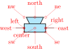loudspeaker: loudspeaker, type: path-style, fillable, nodename: loudspeakershape. Class: misc.
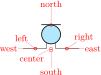mic: mic, type: path-style, fillable, nodename: micshape. Class: misc.
 tlmic: tail-less mic61, type: path-style, fillable, nodename: tlmicshape. Class: misc.
tlmic: tail-less mic61, type: path-style, fillable, nodename: tlmicshape. Class: misc.
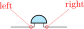buzzer: Buzzer62, type: path-style, fillable, nodename: buzzershape. Class: misc.
rbuzzer: Reversed buzzer, type: path-style, fillable, nodename: rbuzzershape. Class: misc.
You can use microphones and loudspeakers with waves (see section 4.17) too:
\begin{circuitikz}
\draw (0,0) to[mic, name=M] ++(0,2)
to[amp, t=$A$] ++(2,0)
to[loudspeaker, name=L] ++(0,-2)
to[short, -*] (0,0) node[ground]{};
\node [waves, scale=0.7, left=5pt]
at(M.north) {};
\node [waves, scale=0.7, right]
at(L.north) {};
\end{circuitikz}
You have two types of microphones; mic has protruding connection and tlmic (for tail-less microphone) is inline. This last one is handy for use as a separate shape (which is named tlmicshape). You can change the (relative) thickness of the straight bar using the key bipoles/mic/bar thickness (default 1).
\begin{circuitikz}[]
\draw (0,2) to[mic, name=M] ++(2,0) to[tlmic] ++(2,0);
\node [color=red, tlmicshape](T) at (M.center) {};
\ctikzset{bipoles/mic/bar thickness=3}
\draw (0,0) to[mic] ++(2,0) to[tlmic] ++(2,0);
\end{circuitikz}
57 Contributed by Jakob Leide
58 This lamp is drawn in the style of the textbook Physics for Scientists and Engineers: A Strategic Approach by Randall D. Knight, suggested by Sebastiano on TeX.SX
59 The neon lamps have been added in v1.6.9 thanks to a suggestion by user bogger33 on GitHub.
60 The spark gap has been added in v1.6.9 thanks to a suggestion by user bogger33 on GitHub.
61 Suggested by Dr. Matthias Jung.
62 Buzzers were suggested by user Michael.H on TeX.SX
4.8.2 Miscellaneous element customization
You can change the scale of all the miscellaneous elements by setting the key misc/scale to something different from the default 1.0; relative thickness can be controlled with misc/thickness.
4.8.2.1 Wiggly fuses. Wiggly fuses can have (or not have) poles; you can switch between the two forms by setting to true or false (default true) the key bipoles/wfuse/dots; if they have poles, you can choose any of the pole shapes with the key bipoles/wfuse/shape. The pole nodes are named -left and -right so that you can access their borders.
\begin{circuitikz}
\draw (0,3) to[wfuse, bipoles/wfuse/dots=false] ++(2,0);
\draw (0,2) to[wfuse, name=A] ++(2,0);
\ctikzset{bipoles/wfuse/shape=osquarepole}
\draw (0,1) to[wfuse, name=B] ++(2,0);
\draw [red, densely dashed]
(A-left.-135) to[bend right] (B-left.135);
\ctikzset{bipoles/wfuse/shape=circ}
\draw (0,0) to[wfuse, name=B] ++(2,0);
\end{circuitikz}
4.8.2.2 Neon lamps. Neon lamp “dot” size is the same as the size of poles (circ and ocirc), and they can be changed locally:
\begin{tikzpicture}
\draw (0,0) to[neonlampcc, nodes width=0.03] ++(2,0)
to[neonlampac, misc/thickness=3] ++(2,0);
\end{tikzpicture}
4.8.2.3 Spark gap. The sparkgap component is similar to the (American) surge arrester, but it’s more configurable; it will render bare (unenclosed) by default, but you can add a (fillable) enclosure with the key sparkgap/circle and a dot with sparkgap/dot (they are boolean keys, false by default). Moreover, the arrows are configurable like other arrows in the package (see 4.2.3.3) using the sparkgap end arrow key (default Triangle[scale=2]). The gap is tunable with sparkgap/gap (default 0.05).
\begin{tikzpicture}
\draw (0,2) to[sparkgap, l=gap\textsubscript{1}] ++(2,0)
to[sparkgap, sparkgap/circle,
sparkgap/dot, l=S2] ++(2,0);
\ctikzset{sparkgap end arrow={Kite[scale=1.5]}}
\draw (0,0) to[sparkgap, l=S3] ++(2,0)
to[sparkgap, l=S4, sparkgap/circle,
sparkgap/gap=0.15] ++(2,0);
\end{tikzpicture}
As in neon lamps, the dot (if activated by the key sparkgap/dot) follows the size of poles and can be changed locally.
4.8.3 Miscellaneous symbols
dc symbol, type: node (node[dc symbol]{text}). Class: misc.
ac symbol, type: node (node[ac symbol]{text}). Class: misc.
The symbols for dc or ac voltages or currents can be useful to specify the waveforms in parts of the circuit, or to add to existing symbols.
\begin{circuitikz}[european]
\draw (0,1.5) to[generic, name=a] ++(2,0);
\node [ac symbol] at (a.center) {};
\draw (0,0) node[dc symbol]{\qty{4}{V}};
\draw (1,0) node[dc symbol, dc symbol segments=1]{\qty{1}{\uA}};
\draw (2,0) node[dc symbol, dc symbol segments=4]{$V_p$};
\end{circuitikz}
4.8.4 Customization of ac/dc symbols.
You can change the width and height of the symbols with dc symbol/width, dc symbol/height, ac symbol/width, ac symbol/height (at the circuitikz level, the default is 0.3 for the widths and 0.15 for both symbols). The node text is positioned above the symbol, at a distance controlled by the keys dc symbol/text offset (and the similar ac…; default 6pt).
As shown in the example above, the dc symbols has an additional options. By default the lower line of the symbol has two segments, but you can change this with the circuitikz key dc symbol/segments (with also the direct key, at TikZ level, dc symbol segments (default 2)) with any value greater than 0.
Additionally, you can change the relative thickness of the bottom line with the key dc symbols/relative thickness (default 1).
\begin{tikzpicture}[scale=2, transform shape]
\tikzset{my dc symbol/.style={
dc symbol,
circuitikz/misc/thickness=4,
circuitikz/dc symbol/height=0.1,
circuitikz/dc symbol/width=0.2,
circuitikz/dc symbol/relative thickness=.5,
circuitikz/dc symbol/segments=3
}}
\node (A) at (0,0) {A}; \node (V) at (1,0) {V};
% standard and customized
\node [dc symbol, above,
circuitikz/misc/thickness=4] at (A.north) {};
\node [my dc symbol, above] at (V.north) {};
\end{tikzpicture}
4.9 Multiple wires (buses)
These are simple drawings to indicate multiple wires.
 multiwire: Single line multiple wires, type: path-style, nodename: multiwireshape. Aliases: multiwire. Class: default.
multiwire: Single line multiple wires, type: path-style, nodename: multiwireshape. Aliases: multiwire. Class: default.
bmultiwire: Double line multiple wires, type: path-style, nodename: bmultiwireshape. Aliases: bmultiwire. Class: default.
tmultiwire: Triple line multiple wires63, type: path-style, nodename: tmultiwireshape. Aliases: tmultiwire. Class: default.
\begin{circuitikz}
\draw (0,0) to[multiwire=4] ++(1,0);
\draw (0,-2) to[bmultiwire=6] ++(1,0);
\draw (0,-4) to[tmultiwire=3] ++(1,0);
\end{circuitikz}

4.10 Crossings
crossing: Jumper style non-contact crossing, type: path-style, nodename: crossingshape. Aliases: xing. Class: default.
Node style:
Jumper-style crossing node, type: node (node[jump crossing]{}). No class.
Plain style crossing node, type: node (node[plain crossing]{}). No class.
All circuit-drawing standards agree that to show a crossing without electric contact, a simple crossing of the wires suffices; the electrical contact must be explicitly marked with a filled dot.
\begin{circuitikz}[]
\draw(1,-1) to[short] (1,1)
(0,0) to[short] (2,0);
\draw(4,-1) to[short] (4,1)
(3,0) to[short] (5,0)
(4,0) node[circ]{};
\end{circuitikz}
However, sometimes it is advisable to mark the non-contact situation more explicitly. To this end, you can use a path-style component called crossing:
\begin{circuitikz}[]
\draw(1,-1) to[short] (1,1) (0,0) to[crossing] (2,0);
\draw(4,-1) to[short] (4,1) (3,0) to[short] (5,0)
(4,0) node[circ]{};
\end{circuitikz}
That should suffice most of the time; the only problem is that the crossing jumper will be put in the center of the subpath where the to[crossing] is issued, so sometimes a bit of trial and error is needed to position it.
For a more powerful (and elegant) way you can use the crossing nodes:
\begin{circuitikz}[]
\node at (1,1)[jump crossing](X){};
\draw (X.west) -- ++(-1,0);
\draw (X.east) to[R] ++(2,0);
\draw (X.north) node[vcc]{};
\draw (X.south) to[C] ++(0,-1.5);
\end{circuitikz}
Notice that the plain crossing and the jump crossing have a small gap in the straight wire, to enhance the effect of crossing (as a kind of shadow).
4.10.1 Crossing customization
The size of the crossing elements can be changed with the key bipoles/crossing/size (default 0.2).
While the horizontal line will be drawn with the current path values, you can change the style of the vertical line64 in a similar way to the one used for transistor’s bodydiodes, by setting keys with the \ctikzset command under the crossing vertical hierarchy. The available keys are:
| parameter | default |
description |
| relative thickness | 1.0 |
multiply the default thickness (which is the same of the choke component). |
| color | default |
stroke color: default is the same as the component. |
| dash | default |
dash pattern: default means not to change the setting for the component; none means unbroken line; every other input is a dash pattern.65 |
\begin{circuitikz}[every node/.append style={scale=2}]
\draw (0,2) node[jump crossing](A){};
\begin{scope}
\ctikzset{crossing vertical/.cd, color=red, dash={{2pt}{1pt}}}
\draw (0,1) node[jump crossing](B){};
\end{scope}
\ctikzset{crossing vertical/dash=none}
\draw[densely dotted, blue] (0,0) node[plain crossing](B){};
\end{circuitikz}
64 Suggested by user lkjell on GitHub, implemented in v1.6.2.
65 Follows the syntax of the pattern sequence \pgfsetdash — see TikZ manual for details; phase is always zero. Basically you pass pairs of dash-length – blank-length dimensions, see the examples.
4.11 Arrows (fake and real)
The main arrow shapes in CircuiTikZ are really shapes, used as pseudo-arrows in lot of places in the packages (for transistors, flows, currents, and so on). The first three arrows are magnified by a factor 3 in the boxes below; for the trarrow, the anchor tip is exactly on the tip and btip is slightly receded.
Arrow for current and voltage, type: node (node[currarrow]{}). No class.
Arrow that is anchored at its tip, useful for block diagrams., type: node (node[inputarrow]{}). No class.
Arrow the same size of currarrow but only filled., type: node (node[trarrow]{}). No class.
Arrow used for the flows, type: node (node[flowarrow]{$I_p$}). No class.
4.11.1 Arrows size
You can use the parameter current arrow scale to change the size of the arrows in various components and indicators; the normal value is 16, higher numbers give smaller arrows and so on. You need to use circuitikz/current arrow scale if you use it into a node.
\begin{circuitikz}
\draw (0,0) to[R, i=f] ++(2,0) node[npn, anchor=B]{};
\draw (0,-2) to[R, f=f, current arrow scale=8] ++(2,0)
node[pnp, anchor=B, circuitikz/current arrow scale=8]{};
\draw (0,-4) to[R, f=f, current arrow scale=24] ++(2,0)
node[nigbt, anchor=B]{};
\end{circuitikz}
Moreover, you have the arrow tip latexslim which is an arrow similar to the old (in deprecated arrows library) latex’ element:
4.11.2 Generic Tunable Arrows
The basic passive components (resistors, capacitors and inductors) come with a “tunable version” (see for example 4.2.3.3) that conveys the information that their value is adjustable. For generic components you can obtain a similar effect with the extra macro \ctikztunablearrow, introduced in version 1.4.1. The macro should be called as:
\ctikztunablearrow[extra options]{thickness}{length}{angle}{name}
where extra options is an optional argument with generic TikZ keys, thickness is the relative thickness (referred to the current line width when the macro is invoked), length is the length of the arrow with respect to the diagonal size of the component, angle is the inclination with respect to the normal direction of the component66, and finally name is the reference name of the bipole or node.
The arrows are the ones set with the keys tunable start arrow and tunable end arrow (to maintain coherency across the circuit), but you can override them in the extra options argument as shown in the following example.
\begin{circuitikz}
\draw (0,0) node[tlground]{} to[sV, name=A] ++(0,3)
node[op amp, anchor=+](B){};
\ctikztunablearrow{1}{1.2}{30}{A}
\ctikzset{tunable start arrow={Bar},
tunable end arrow={Stealth}}
\ctikztunablearrow[color=green,
{Latex[reversed]}-Circle]{1}{1.2}{90}{A}
\ctikztunablearrow[color=blue, densely dashed]{1}{1.2}{-30}{A}
\begin{scope}[transparency group, opacity=0.5]
\ctikztunablearrow[red, shorten <=3mm]{6}{0.8}{110}{B}
\end{scope}
\end{circuitikz}
Notice also the need to force a transparency group if you want a semitransparent arrow.
66 which is the left-to-right direction of the component when shown in the component box in this manual.
4.11.3 Arrow tips
In addition to the pseudo-arrows, CircuiTikZ also adds a couple of “real” arrow tips. The package automatically loads the arrows.meta TikZ library but not the deprecated arrows library; in the first versions of the package it used quite a lot the latex’ tip, which is not available anymore. To maintain the backward compatibility, the ‘latexslim‘ tip has been added, and used by default in several components. This is an old-style arrow tip, with no customization possible.
The other tip is Jack Tap67, which is mainly used to build jack connectors (see section 4.13.3). This is a new-style arrow tip, and accepts the parameter length (default 0.3 cm), width (default 0.15 cm), and the boolean swap.
\begin{circuitikz}
\draw (0,.25) (0,0) edge[-latexslim] ++(1,0)
++(0, -0.5) edge[-{Jack Tap[swap]}] ++(1,0)
++(0, -0.5) edge[-Jack Tap] ++(1,0)
++(0, -0.5) edge[-{Jack Tap[fill=cyan]}] ++(1,0)
++(0, -0.5) edge[-{Jack Tap[width=.3cm,fill]}]++(1,0)
++(0, -0.5) edge[-{Jack Tap[width=.3cm,line join=round,
line cap=round]}, thick] ++(1,0)
++(0, -0.5) edge[^-^f] ++(1,0)
++(0, -0.5) edge[vf-v] ++(1,0);
\end{circuitikz}
You can also have a filled version, by adding the key fill (without arguments68) or fill=color if you want a color different from the stroke ones, and they accept the line join and line cap as most of the standard TikZ arrows. As you can see, the normal and swapped Jack Tap tips have the shorthands v and ^ (and vf and ^f for their filled counterparts). Notice that the tips are automatically reversed when they are at the start of the path.
67 Added after a suggestion from Anisio Rogerio Braga on GitHub
68 This usage of the fill key in arrow tips will be added to TikZ in version 3.1.11, see this PR by Henri Menke; CircuiTikZ will add it to older versions.
4.12 Terminal shapes
These are the so-called “bipole nodes” shapes, or poles (see section 6.1). These nodes are always filled; the “open” versions (starting with an o) are by default filled with the color specified by the key open nodes fill (by default white), but you can override locally it with the fill parameter.
Connected terminal, type: node (node[circ]{}). No class.
Unconnected terminal, type: node (node[ocirc]{}). No class.
Diamond-square terminal, type: node (node[diamondpole]{}). No class.
Open diamond-square terminal, type: node (node[odiamondpole]{}). No class.
Square-shape terminal, type: node (node[squarepole]{}). No class.
Open square-shape terminal, type: node (node[osquarepole]{}). No class.
This is not a pole, but it’s used to "fill" nasty corners (look closer, and see 6.4).
Filling square with line width size, type: node (node[rectjoinfill]{}). No class.
Since version 0.9.0, “bipole nodes” shapes have all the standard geographical anchors, so you can do things like these:
\begin{circuitikz}[american,]
\draw (0,-1) node[draw](R){R};
\draw (R.east) node[ocirc, right]{};
\end{circuitikz}
The size of the poles is controlled by the key nodes width (default 0.04, relative to the basic length). Be sure to see section 6.1 for more usage and configurability.
4.13 Connectors
Connectors have a class by themselves (connectors), so you can use the scale, fill and thickness properties as usual.
4.13.1 BNC connector/terminal
BNC connector, type: node, fillable (node[bnc]{}). Class: connectors.
The BNC connector is defined so that you can easily connect it as input or output (but remember that you need to flip the text if you flip the component):
\begin{circuitikz}
\draw (0,0)
node[bnc](B1){$v_i$} to[R=\SI{50}{\ohm}] ++(3,0)
% you can also use \ctikzflipx{$v_o$} in LaTeX
node[bnc, xscale=-1](B2){\scalebox{-1}[1]{$v_o$}};
\node [ground] at (B1.shield) {};
\node [eground] at (B2.shield){};
\end{circuitikz}
It also has a zero anchor if you need to rotate it about its real center.
\begin{circuitikz}
\draw[thin, red] (0,0) -- ++(1,0) (0,-1) -- ++(1,0);
\path (0,0) node[bnc]{} ++(1,0) node[bnc, rotate=-90]{};
\path (0,-1) node[bnc, anchor=zero]{} ++(1,0) node[bnc, anchor=zero, rotate=-90]{};
\end{circuitikz}
4.13.2 IEC 60617 socket-plug connectors
Plug and socket connectors (modeled on the IEC60617 standard) are available69 both in path-style form and, with separated but matching shapes for plug and socket, in node-style. There are two differently oriented shapes for each type to ease the construction of “split” connections (see the examples below). Notice that the elements in the following table are scaled by a factor of 1.5, to better show the position of the anchors.
iec connector: IEC 60617 connector, type: path-style, nodename: iecconnshape. Aliases: iecconn. Class: connectors.
IEC 60617 connector, type: node (node[iecconnshape]{\tiny text}). Class: connectors.
IEC 60617 female socket, left side, type: node (node[iecsocketL]{\tiny text}). Class: connectors.
IEC 60617 male plug, right side, type: node (node[iecplugR]{\tiny text}). Class: connectors.
IEC 60617 male plug, left side, type: node (node[iecplugL]{\tiny text}). Class: connectors.
IEC 60617 female socket, right side, type: node (node[iecsocketR]{\tiny text}). Class: connectors.
The center anchors (as well as the text position) of the split elements of the connectors are on the side of the component (similar to what happens with grounds and supply voltage arrows) to ease the most common use.
Also, the text for the plug nodes is raised to the same level of the text in the sockets, and it will ignore descendants, so that the two text lines up when the two components are put side by side.
The plug center anchor always point to the center of the rectangular plug shape, and the socket center to the center of the semicircle in the sockets.
\begin{circuitikz}
\draw (0,1) node[bnc]{} to[R] ++(2,0)
to[iec connector] ++(1,0);
\draw (0,0) node[bnc]{} to[R] ++(2,0)
to[iec connector, invert] ++(1,0);
\end{circuitikz}
Aligning “disconnected” plugs and sockets is reasonably easy:
\begin{circuitikz}
\draw (0,2) to[iec connector, name=C1] ++(2,0) coordinate(stop)
(C1.nw) node[above left, inner xsep=0pt]{s1}
(C1.ne) node[above right, inner xsep=0pt]{p1};
\draw (0,1) coordinate(tmp) -- (tmp-|C1.left)
node[iecsocketL](S2){s2};
\draw (0,0) coordinate(tmp) (tmp-|C1.socket center)
node[iecplugR](P3){p3} (P3.right) -- (tmp-|stop);
\draw[red, dashed] ([yshift=1cm]C1.socket center) -- ++(0,-4);
\end{circuitikz}
You can choose the best shape when rotating them, to simplify the positioning (shape rotates around the center anchor).
\begin{circuitikz}
\draw (0,0) -| ++(1,-1) node[iecsocketL, rotate=-90]{}
(2,-1) -| ++(1,1) node[iecplugR, rotate=90]{};
\end{circuitikz}
Choosing the proper left/right shape results in easily build “mixed” connectors; you can use the node text position properties to have lined-up labels, but remember that the text is outside the bounding box:
\begin{circuitikz}[]
\path (0,2); % for the bounding box, text is not accounted for
\draw (0,1)--++(1,0) node[iecsocketL](s1){S1};
\draw [color=red](s1.e) node[iecplugR](p1){P1} (p1.e)--++(1,0);
\draw (0,0) -- ++(1,0) node[iecplugL](p2){P2};
\draw [color=blue](p2.e) node[iecsocketR](s2){S2} (s2.e)--++(1,0);
\end{circuitikz}
You can use the plug center anchor to add the IEC “multiplier”:
\begin{circuitikz}[]
\draw (0,0) to[iec connector, connectors/scale=2, name=A,
a={\small\ttfamily output bus}] ++(3,0);
\draw (A.plug center) ++(-.2,-.4) -- ++(.4,.8) node[above]{8};
\end{circuitikz}
69 Since v1.5.0; thanks to Alexander Sauter for suggesting them and helping in the design.
4.13.3 Jack connectors
There are lots of different jack connectors symbols — see the discussion here for examples. So instead of creating a monster component, it has been decided to add elements to simplify the drawing of such connectors. The first (and for now only) such element is the Jack Tap arrow tip (see section 4.11.3) with its shorthands v and ^.
For example, and audio jack can be drawn like this:

% drawing based on one by Anisio Rogerio Braga
% https://github.com/circuitikz/circuitikz/issues/806
\newcommand\dx{1.5}\newcommand\dy{1}
\begin{circuitikz}
\draw[-v] (0,\dy/3*4) to[short, o-] ++(\dx,0);
\draw[-Triangle] (0,\dy) node[ocirc]{} -| ++(\dx/3,\dy/3);
\draw[-Triangle] (0,\dy/3*2) node[ocirc]{} -| ++(\dx/3,-\dy/3);
\draw[-^] (0,\dy/3) to[short, o-] ++(2*\dx/3,0);
\draw (0,0.0) to[short, o-] ++(1.75*\dx,0) rectangle ++(0.2,4*\dy/3);
\end{circuitikz}\qquad\qquad
%---% audio jack with an inserted plug
\begin{circuitikz}
\draw[-v] (0,\dy/3*4) to[short, o-] ++(\dx,0.2);
\draw[-Triangle] (0,\dy) node[ocirc]{} -| ++(\dx/3,\dy/3);
\draw[-Triangle] (0,\dy/3*2) node[ocirc]{} -| ++(\dx/3,-\dy/3);
\draw[-^] (0,\dy/3) to[short, o-] ++(2*\dx/3,-0.2);
\draw (0,0.0) to[short, o-] ++(1.75*\dx,0) rectangle ++(0.2,4*\dy/3);
\end{circuitikz}
4.14 Block diagram components
Contributed by Stefan Erhardt.
mixer, type: node, fillable (node[mixer]{}). Class: blocks.
mixer, boxed, type: node, fillable (node[mixer, boxed]{}). Class: blocks.
adder, type: node, fillable (node[adder]{}). Class: blocks.
oscillator, type: node, fillable (node[oscillator]{}). Class: blocks.
circulator, type: node, fillable (node[circulator]{}). Class: blocks.
wilkinson divider, type: node, fillable (node[wilkinson]{}). Class: blocks.
resistive splitter70, type: node, fillable (node[splitter]{}). Class: blocks.
generic splitter71, type: node, fillable (node[genericsplitter]{$\SI {-3}{\deci \bel }$}). Class: blocks.
Mach Zehnder Modulator72, type: node, fillable (node[mzm]{}). Class: blocks.
twoport: generic two port (use t=… to specify text), type: path-style, fillable, nodename: twoportshape. Class: blocks.
twoportsplit: generic two port split (use t1=… and t2=… to specify text), type: path-style, fillable, nodename: twoportsplitshape. Class: blocks.
vco: vco, type: path-style, fillable, nodename: vcoshape. Class: blocks.
vco,box: vco,box, type: path-style, fillable, nodename: vco,boxshape. Class: blocks.
bandpass: bandpass, type: path-style, fillable, nodename: bandpassshape. Class: blocks.
bandstop: bandstop, type: path-style, fillable, nodename: bandstopshape. Class: blocks.
highpass: highpass, type: path-style, fillable, nodename: highpassshape. Class: blocks.
lowpass: lowpass, type: path-style, fillable, nodename: lowpassshape. Class: blocks.
highpass2: simplified highpass (with only 2 waves), type: path-style, fillable, nodename: highpass2shape. Class: blocks.
lowpass2: simplified lowpass (with only 2 waves), type: path-style, fillable, nodename: lowpass2shape. Class: blocks.
allpass: allpass, type: path-style, fillable, nodename: allpassshape. Class: blocks.
vallpass: variable allpass73, type: path-style, fillable, nodename: vallpassshape. Class: blocks.
bgenerator: Block generator (use t=… to specify text), type: path-style, fillable, nodename: bgeneratorshape. Class: blocks.
qgenerator: Crystal generator (use t=… to specify text), type: path-style, fillable, nodename: qgeneratorshape. Class: blocks.
cgenerator: Clock generator, type: path-style, fillable, nodename: cgeneratorshape. Class: blocks.
ngenerator: Generic generator (use t=… to specify text), type: path-style, fillable, nodename: ngeneratorshape. Class: blocks.
adc: A/D converter, type: path-style, fillable, nodename: adcshape. Class: blocks.
dac: D/A converter, type: path-style, fillable, nodename: dacshape. Class: blocks.
dsp: DSP, type: path-style, fillable, nodename: dspshape. Class: blocks.
fft: FFT, type: path-style, fillable, nodename: fftshape. Class: blocks.
amp: amplifier; use t=… to add a text, type: path-style, fillable, nodename: ampshape. Class: blocks.
amp, boxed: amplifier, boxed; use t=… to add a text, type: path-style, fillable, nodename: amp, boxedshape. Class: blocks.
iamp: instrumentation amplifier; use t=… to add a text, type: path-style, fillable, nodename: iampshape. Class: blocks.
iamp, boxed: instrumentation amplifier, boxed; use t=… to add a text, type: path-style, fillable, nodename: iamp, boxedshape. Class: blocks.
vamp: VGA (variable gain amplifier), type: path-style, fillable, nodename: vampshape. Class: blocks.
 vamp, boxed: VGA, boxed, type: path-style, fillable, nodename: vamp, boxedshape. Class: blocks.
vamp, boxed: VGA, boxed, type: path-style, fillable, nodename: vamp, boxedshape. Class: blocks.
piattenuator: \(\pi \) attenuator, type: path-style, fillable, nodename: piattenuatorshape. Class: blocks.
vpiattenuator: var. \(\pi \) attenuator, type: path-style, fillable, nodename: vpiattenuatorshape. Class: blocks.
tattenuator: T attenuator, type: path-style, fillable, nodename: tattenuatorshape. Class: blocks.
vtattenuator: var. T attenuator, type: path-style, fillable, nodename: vtattenuatorshape. Class: blocks.
phaseshifter: phase shifter, type: path-style, fillable, nodename: phaseshiftershape. Class: blocks.
vphaseshifter: var. phase shifter, type: path-style, fillable, nodename: vphaseshiftershape. Class: blocks.
biast: BIAS-T circuit as block, type: path-style, fillable, nodename: biastshape. Class: blocks.
sinetable: Sine lookup table, type: path-style, fillable, nodename: sinetableshape. Class: blocks.
register: Register (use t=… to specify text), type: path-style, fillable, nodename: registershape. Class: blocks.
detector: detector, type: path-style, fillable, nodename: detectorshape. Class: blocks.
saturation: Saturation74, type: path-style, fillable, nodename: saturationshape. Class: blocks.
sigmoid: Sigmoid, type: path-style, fillable, nodename: sigmoidshape. Class: blocks.
allornothing: Comparison, all-or-nothing, type: path-style, fillable, nodename: allornothingshape. Class: blocks.
fiber: Optical Fiber, type: path-style, fillable, nodename: fibershape. Class: blocks.
sdcdc: single wire DC/DC converter75, type: path-style, fillable, nodename: sdcdcshape. Class: blocks.
sacdc: single phase AC/DC converter, type: path-style, fillable, nodename: sacdcshape. Class: blocks.
sdcac: single phase DC/AC converter, type: path-style, fillable, nodename: sdcacshape. Class: blocks.
sacac: single phase AC/AC converter, type: path-style, fillable, nodename: sacacshape. Class: blocks.
tacdc: three phases AC/DC converter, type: path-style, fillable, nodename: tacdcshape. Class: blocks.
tdcac: three phases AC/DC converter, type: path-style, fillable, nodename: tdcacshape. Class: blocks.
tacac: three phases AC/DC converter, type: path-style, fillable, nodename: tacacshape. Class: blocks.
gridnode76, type: node, fillable (node[gridnode]{}). Class: blocks.
Filters blocks have an alternative, Bode-diagram-like appearance. Their names end in p, as a mnemonic for “plot”. By default, they have a “fake” semi-logarithmic grid to convey the hint that the diagram is a frequency response one, to separate them from similar drawings as, for example, saturation. The grid can be removed or customized, see section 4.14.2.7.
 lowpassp: lowpass, plot style, type: path-style, fillable, nodename: lowpasspshape. Class: blocks.
lowpassp: lowpass, plot style, type: path-style, fillable, nodename: lowpasspshape. Class: blocks.
highpassp: highpass, plot style, type: path-style, fillable, nodename: highpasspshape. Class: blocks.
bandpassp: bandpass, plot style, type: path-style, fillable, nodename: bandpasspshape. Class: blocks.
bandstopp: bandstop, plot style, type: path-style, fillable, nodename: bandstoppshape. Class: blocks.
resonantp: resonant, plot style, type: path-style, fillable, nodename: resonantpshape. Class: blocks.
notchp: notch, plot style, type: path-style, fillable, nodename: notchpshape. Class: blocks.
If you add the ideal filter option, the filters are changed like this:
lowpassp, ideal filter: lowpass, plot style, ideal filter, type: path-style, fillable, nodename: lowpassp, ideal filtershape. Class: blocks.
highpassp, ideal filter: highpass, plot style, ideal filter, type: path-style, fillable, nodename: highpassp, ideal filtershape. Class: blocks.
bandpassp, ideal filter: bandpass, plot style, ideal filter, type: path-style, fillable, nodename: bandpassp, ideal filtershape. Class: blocks.
bandstopp, ideal filter: bandstop, plot style, ideal filter, type: path-style, fillable, nodename: bandstopp, ideal filtershape. Class: blocks.
resonantp, ideal filter: resonant, plot style, ideal filter, type: path-style, fillable, nodename: resonantp, ideal filtershape. Class: blocks.
notchp, ideal filter: notch, plot style, ideal filter, type: path-style, fillable, nodename: notchp, ideal filtershape. Class: blocks.
Another difference when using ideal filter is that now the grid is linear, and the angles are always sharp.
Blocks to draw TV/radio system schematics, contributed by Dr. Matthias Jung.
camera: Videocamera, type: path-style, fillable, nodename: camerashape. Class: misc.
tvset: Television (TV), type: path-style, fillable, nodename: tvsetshape. Class: blocks.
trx: Radio tranceiver (HAM-Radio), type: path-style, fillable, nodename: trxshape. Class: blocks.
 swr: Standing Wave Ratio (SWR) meter, type: path-style, fillable, nodename: swrshape. Class: blocks.
swr: Standing Wave Ratio (SWR) meter, type: path-style, fillable, nodename: swrshape. Class: blocks.
power: Power Supply, type: path-style, fillable, nodename: powershape. Class: blocks.
Generic fourport, type: node, fillable (node[fourport]{}). Class: blocks.
Coupler77, type: node, fillable (node[coupler]{}). Class: blocks.
Coupler with rounded arrows, type: node, fillable (node[coupler2]{}). Class: blocks.
70 added by matthuszagh
71 added by frankplow
72 added by dl1chb
73 This block, as well as bgenerator, cgenerator, qgenerator, ngenerator, biast, sinetable, register, harmonics, and the TV/Radio system blocks have been contributed by Dr. Matthias Jung.
74 Contributed by P. Sacco
75 the converter blocks added by olfline
76 added by olfline
77 Notice that the left/right up/down anchors coincide with port1…4 only for the default values of block [left/right] anchors pos.
4.14.1 Blocks anchors
The ports of the mixer, adder, oscillator and circulator can be addressed with west, south, east, north; the equivalent left, down, right, up; or the shorter w, s, e, n ones:
\begin{circuitikz} \draw
(0,0) node[mixer] (mix) {}
(mix.w) node[left] {w}
(mix.s) node[below] {s}
(mix.e) node[right] {e}
(mix.n) node[above] {n}
;\end{circuitikz}
In addition, since v1.6.0, most blocks also have the left up, left down, right up and right down anchors:
\begin{circuitikz} \draw
(0,0) to[bandpass, name=bp] ++(2,0)
(bp.left up) node[circ, red]{}
(bp.left down) node[circ, blue]{}
(bp.right up) node[circ, green]{}
(bp.right down) node[circ, orange]{}
;\end{circuitikz}

Since 1.6.7 you can change the relative position of the lateral generic anchors78 using the keys block left anchors pos and block right anchor pos (default 0.5, as in previous releases) which set the position as a fraction of the top to center segment. Since 1.8.4 the effect of this keys is also extended to node-type blocks, which is especially useful for the “boxed” versions; you can also use the inner styling here.
\begin{circuitikz}
\ctikzset{block left anchors pos=0.8, block right anchors pos=0.2}
\ctikzset{blocks/inner thickness=3, blocks/inner color=orange}
\draw (0,3) to[bandpass, name=bp] ++(2,0)
(1,1.5) node[gridnode](g){} (1,0) node[mixer, boxed](bm){};
\foreach \n in {bp, bm, g} {\path
(\n.left up) node[circ, red]{}
(\n.left down) node[circ, blue]{}
(\n.right up) node[circ, green]{}
(\n.right down) node[circ, orange]{};}
\end{circuitikz}
To set both left and right at the same value, you can use the key block lateral anchors pos, which set both to the same number. You can use those anchors to build “mixed-type” circuits, using the node-shapes (the following drawing is a bit silly, but shows that the anchor position can be changed locally):
\begin{tikzpicture}[
big/.style={circuitikz/blocks/scale=1.5},
long/.style={circuitikz/bipoles/twoportsplit/width=1.5}]
\ctikzset{block lateral anchors pos=0.8}
\path (0,0) node[sacdcshape, big, circuitikz/block right anchors pos=0.2](A){}
(5,0) node[twoportsplitshape, big, long, t1=LNA, t2=Digital](B){};
\draw (A.right up) -- (B.left up) (A.right down) to[cute choke] (B.left down);
\end{tikzpicture}
Notice also from the previous example that the generic blocks (twoport and twoportsplit) can be made “longer” by setting different width and height (the other blocks are square, and just use the width key for both dimensions).
Also, for amp and vamp, the up and down anchors follow the shape when they are not boxed.
\begin{tikzpicture}
\draw (0,0) to[vamp, name=a] ++(1.5,0)
to [vamp, boxed, name=ab] ++(1.5,0);
\path (a.up) node[circ, blue]{} (ab.up) node[circ, blue]{};
\path (a.down) node[circ, red]{} (ab.down) node[circ, red]{};
\end{tikzpicture}
The oscillator has a displaced center anchor, to simplify the task of putting it at the left side of a circuit; it also as a special position for the node text. The four round elements (mixer, circulator, adder, and the oscillator) have a geocenter anchor which always corresponds to the center of the circle.
\begin{tikzpicture}[>=Stealth]
\draw (0,0)node[oscillator](O){$f_0$} -- ++(1,0);
\draw[blue, ->] (1,1) -- (O.center);
\draw[red, ->] (1,1) -- (O.geocenter);
\end{tikzpicture}
Moreover, the have proper border anchors since version 1.2.3 (and fixed for boxed elements in 1.5.0), so you can do things like this:
\begin{circuitikz}
\draw (0,0) node[adder] (mix) {}
(-1,1) -- ++(0.5,0) -- (mix)
(-1,-1) -- ++(0.5,0) -- (mix) -- ++(1,0);
\draw [red, <-] (mix.45) -- ++(1,1);
\end{circuitikz}
Those components have also deprecated anchors named 1, 2, 3, 4; they are better not used because they can conflict with the border anchor. They still work for backward compatibility, but could be removed in a future release.
\begin{circuitikz} \draw
(0,0) node[mixer] (mix) {}
(mix.1) node[left] {1} (mix.2) node[below] {2}
(mix.3) node[right] {3} (mix.4) node[above] {4};
\draw [ultra thick, red, opacity=0.5]
(-1,-1)--(1,1)(-1,1)--(1,-1);
\node [red, below] at (0,-1) {DON'T USE};
\end{circuitikz}
The Wilkinson divider has (notice that the node text is outside the bounding box, similarly to what happens for transistors!):
\begin{circuitikz} \draw
(0,0) node[wilkinson] (w) {\SI{3}{dB}}
(w.in) to[short,-o] ++(-0.5,0)
(w.out1) to[short,-o] ++(0.5,0)
(w.out2) to[short,-o] ++(0.5,0)
(w.in) node[below left] {\texttt{in}}
(w.out1) node[below right] {\texttt{out1}}
(w.out2) node[above right] {\texttt{out2}}
;
\end{circuitikz}
The couplers have:
\begin{circuitikz} \draw (0,1.5) %bounding box
(0,0) node[coupler] (c) {\SI{10}{dB}}
(c.left down) to[short,-o] ++(-0.5,0)
(c.right down) to[short,-o] ++(0.5,0)
(c.right up) to[short,-o] ++(0.5,0)
(c.left up) to[short,-o] ++(-0.5,0)
(c.left down) node[below left] {\texttt{left down}}
(c.right down) node[below right] {\texttt{right down}}
(c.right up) node[above right] {\texttt{right up}}
(c.left up) node[above left] {\texttt{left up}}
;
\end{circuitikz}
Or you can also use port1 to port4 if you prefer:
\begin{circuitikz} \draw (0,1.5) %bounding box
(0,0) node[coupler2] (c) {\SI{3}{dB}}
(c.port1) to[short,-o] ++(-0.5,0)
(c.port2) to[short,-o] ++(0.5,0)
(c.port3) to[short,-o] ++(0.5,0)
(c.port4) to[short,-o] ++(-0.5,0)
(c.port1) node[below left] {\texttt{port1}}
(c.port2) node[below right] {\texttt{port2}}
(c.port3) node[above right] {\texttt{port3}}
(c.port4) node[above left] {\texttt{port4}}
;
\end{circuitikz}
Also they have the simpler 1, 2, 3, 4 anchors, and although they have no border anchors (for now), it is better not to use them.
\begin{circuitikz} \draw(0,1.5) %bounding box
(0,0) node[coupler] (c) {\SI{10}{dB}}
(c.1) to[short,-o] ++(-0.5,0)
(c.2) to[short,-o] ++(0.5,0)
(c.3) to[short,-o] ++(0.5,0)
(c.4) to[short,-o] ++(-0.5,0)
(c.1) node[below left] {\texttt{1}}
(c.2) node[below right] {\texttt{2}}
(c.3) node[above right] {\texttt{3}}
(c.4) node[above left] {\texttt{4}}
;
\end{circuitikz}
78 Suggested by user @sputeanus on GitHub
4.14.2 Blocks customization
You can change the scale of all the block elements by setting the key blocks/scale to something different from the default 1.0.
With the option > you can draw an arrow to the input of the block diagram symbols.
\begin{circuitikz} \draw
(0,0) to[short,o-] ++(0.3,0)
to[lowpass,>] ++(2,0)
to[adc,>] ++(2,0)
to[short,-o] ++(0.3,0);
\end{circuitikz}
You can also change the width for the generic block:
\begin{circuitikz}[european]
\draw (0,0) to[amp, >, t=$K_{\mathrm{p}}$] ++(2,0)
to[saturation, >, name=sat] ++(2,0) -- ++(0.5,0)
to[twoport, t=$\displaystyle\frac{\tau s +1}{\tau s}$, >,
bipoles/twoport/width=1.5] ++(3,0);
\node[above] at (sat.ne) {$+I_{\mathrm{max}}$};
\node[below] at (sat.sw) {$-I_{\mathrm{max}}$};
\end{circuitikz}
4.14.2.1 Multi ports Since inputs and outputs can vary, input arrows can be placed as nodes. Note that you have to rotate the arrow on your own:
\begin{circuitikz} \draw
(0,0) node[mixer] (m) {}
(m.w) to[short,-o] ++(-1,0)
(m.s) to[short,-o] ++(0,-1)
(m.e) to[short,-o] ++(1,0)
(m.w) node[inputarrow] {}
(m.s) node[inputarrow,rotate=90] {};
\end{circuitikz}
You can use additional anchors to mix different kinds of elements.
% Author: Prof. Dr. Matthias Jung Year: 2023
\begin{tikzpicture}
%\useasboundingbox (-3.75,-1.0) rectangle (10.5,3);
\node[draw, powershape] at (0,0) (supply) {};
\draw(supply.south) node[anchor=north]{\qty{13,8}{V}};
\node[draw, trxshape] at (5,0) (trx) {};
\draw(trx.east) -- ++(1,0) node[swrshape, anchor=west](swr){};
\draw(swr.east) -- ++(1,0) node[antenna]{};
\draw(trx.south) node[ground]{};
\draw[red](supply.plus) to [fuse, color=red] ++(2.5,0)
to [short, i={I}, color=red] (trx.plus);
\draw(trx.minus) to [short, i={}] (supply.minus);
\draw(supply.u1) to [short, -o] ++(-1,0) coordinate(c1);
\draw(supply.u2) to [short, -o] ++(-1,0) coordinate(c2);
\draw(c1) to [open, l_={$\sim\qty{230}{\volt}$}] (c2);
\end{tikzpicture}
4.14.2.2 Labels and custom two-port boxes
You can use the keys t, t1, t2 (shorthands for text, text in, text out) to fill the generic blocks:
\begin{circuitikz} \draw
(0,0) to[short,o-] ++(0.3,0)
to[allpass,>] ++(2,0)
to[twoport,>,t={B}] ++(2,0)
to[twoportsplit,t1={\tiny in},
t2={\tiny\color{red}out}] ++(0,-2.5);
\end{circuitikz}
Some two-ports have the option to place a normal label (l=) and a inner label (t=).
\begin{circuitikz}
\ctikzset{bipoles/amp/width=0.9}
\draw (0,0) to[amp,t=LNA,l_=$F{=}0.9\,$dB,o-o] ++(3,0);
\end{circuitikz}
Each block determines where the text is added:
\begin{circuitikz} \draw
(0,0) to[qgenerator, t=G,*-] ++(2,0)
to[vallpass,>] ++(2,0)
to[ngenerator, t=FM,>] ++(2,0)
to[short,-o] ++(0.3,0);
\end{circuitikz}
4.14.2.3 Box option Several devices have the possibility to add a box around them with the box or boxed option. The inner symbol scales down to fit inside the box. For the “circled” devices (mixer, adder, oscillator and circulator) the inner circle is normally drawn, unless you use the box only or boxed only option.79
\begin{circuitikz} \draw
(0,0) node[mixer, box only, anchor=east](m){}
to[amp, boxed, >, -o] ++(2.5,0)
(m.west) node[inputarrow]{} to[short,-o] ++(-0.8,0)
(m.south) node[inputarrow,rotate=90]{} --
++(0,-0.7) node[oscillator, box, anchor=north]{};
\end{circuitikz}

4.14.2.4 Dash optional parts To show that a device is optional, you can dash it. The inner symbol will be kept with solid lines, unless you set the key inner blocks dashed to true. Moreover, the key dashed blocks pattern (default {{1mm}{1mm}}), be careful with the number of braces!.
\begin{circuitikz}
\draw (0,1.5) to[amp,l=\SI{10}{dB}] ++(2.5,0);
\draw[dashed] (2.5,1.5) to[lowpass,l=opt.] ++(2.5,0);
% or just the block
\draw (0,0) to[amp,l=\SI{10}{dB}] ++(2.5,0)
to[lowpass,l=opt., dashed] ++(2.5,0);
% or everything
\ctikzset{inner blocks dashed,
dashed blocks pattern={{1.5pt}{1pt}},
}
\draw (0,-1.5) to[amp,l=\SI{10}{dB}] ++(2.5,0)
to[lowpass,l=opt., dashed] ++(2.5,0);
\end{circuitikz}
4.14.2.5 Dashing the DC symbol in blocks. The symbol for the DC side can be different across countries,80 with different kind of dashing on the bottom line. Moreover, sometimes the dashing is used to convey different meanings (like rectified sinusoidal or stabilized DC). You can change the general style for the DC symbol using the key blocks dc segments; using 1 (default) will use a continuous line; using 2 you will have the international-styled symbol, and with 3 the English one (you can use higher numbers; the only restriction is that it must be strictly greater than 0). You can also change the input and output part separately with the keys blocks dc in segments and blocks dc out segments (see the following example). The inner blocks dashed can have strange interaction with these ones.
\begin{tikzpicture}[scale=0.8]
\ctikzset{blocks dc segments=3}
\draw (0,2) to[sacdc] ++(2,0) to[sdcdc]
++(2,0) to[sdcac] ++(2,0);
\ctikzset{blocks dc segments=1}
\draw[dashed] (0,0) to[sacdc, blocks dc out segments=2]
++(2,0) to[sdcdc, blocks dc in segments=2,
inner blocks dashed,
dashed blocks pattern={{0.4pt}{0.4pt}}]
++(2,0) to[sdcac] ++(2,0);
\end{tikzpicture}

4.14.2.6 Blocks inner drawing. Almost all of the inner block drawing style can be customized, without affecting the external box, with the keys blocks/inner color (default default, which means “don’t change color”) and blocks/inner thickness (default 1; this is relative to the class-specified thickness).
\begin{circuitikz} \draw
(0,0) to[short,o-] ++(0.3,0)
to[lowpass,>, blocks/inner color=red ] ++(2,0)
to[lowpassp,>, blocks/inner thickness=4,
blocks/filter grid/thickness=0.25] ++(2,0)
to[short,-o] ++(0.3,0);
\end{circuitikz}
The key blocks/gridnode/gridlines controls the number of lines in the gridnode block, defined as parallel lines in one diagonal. This can be customised using the key, which accepts any positive integer (default is 7).81
\begin{circuitikz}
\node[gridnode] at (0,0) {};
\node[gridnode,gridlines=3] at (2,0) {};
\ctikzset{blocks/gridnode/gridlines=10}
\node[gridnode] at (4,0) {};
\end{circuitikz}
4.14.2.7 Plot-type filter blocks customization. In the “plot”-type filter blocks, you can change the appearance of the grid using the following parameters (with \ctikzset, under the family blocks/filter grid/)
| parameter | default |
description |
| thickness | 0.5 |
line thickness, this is relative to the inner thickness setting for the block |
| color | default |
stroke color: default is the same as the component color (inner color if it’s set) |
| dash | {{0.04cm}{0.04cm}} |
dash pattern: none means solid line, default means keep the global pattern82 |
| opacity | 0.3 |
stroke opacity for the grid. Using 0 will suppress the drawing of the grid completely. |
Additionally, the blocks/filter plot/relative thickness (default 2) will change the relative thickness (with respect to the class thickness, or inner thickness if set) of the “frequency response” sketch line.
Finally, the plots are by default rounded83, but you can choose to have them with sharp edges setting the key blocks/filter plot/rounding to 0 (the default value is 0.15).
Setting the key ideal filter numbers a small 0 and 1 are added at the left side of the grid. The two numbers can be customized using the keys ideal filter number low and ideal filter number low (by default set to 0 and 1 respectively), but notice that there is very little space there.
\begin{circuitikz}
\draw (0,0) to[lowpassp=\qty{1}{\kHz},
blocks/filter grid/color=red,
blocks/filter grid/dash=none,
blocks/filter grid/thickness=1] ++(2,0)
to[notchp=\qty{50}{\hertz},
blocks/filter grid/opacity=0,
blocks/filter plot/relative thickness=1,
blocks/filter plot/rounding=0] ++(2,0);
\draw (0,-2) to[lowpassp, ideal filter] ++(2,0)
to[bandpassp, ideal filter,
ideal filter numbers] ++(2,0);
\ctikzset{ideal filter numbers, % set as default
ideal filter number high=A}
\draw (0,-4) to[lowpassp, ideal filter] ++(2,0)
to[bandpassp, ideal filter] ++(2,0);
\end{circuitikz}
79 Since 1.5.0, suggested by GitHub user myzinsky
80 Head-up from user @dbstf on GitHub
81 Contributed by Jakob Leide on GitHub
82 Follows the syntax of the pattern sequence \pgfsetdash — see TikZ manual for details; phase is always zero. Basically you pass pairs of dash-length – blank-length dimensions, see the examples. Notice that the dimensions are not exactly cm: the length are scaled so that 1 cm is really the block width.
83 This, and the hint for the new filter shapes, were suggested by @cis on the TeX-SX chat. Ideal filters ignore the roundness parameter.
4.15 Transistors
4.15.1 Standard bipolar transistors
npn, type: node (node[npn]{Q}). Class: transistors.
pnp, type: node (node[pnp]{}). Class: transistors.
schottky npn, type: node (node[npn, schottky base]{}). Class: transistors.
schottky pnp, type: node (node[pnp, schottky base]{}). Class: transistors.
npn, type: node (node[npn, bodydiode]{}). Class: transistors.
photo npn, type: node (node[npn,photo]{}). Class: transistors.
photo pnp, type: node (node[pnp,photo]{}). Class: transistors.
 nigbt, type: node (node[nigbt]{Q}). Class: transistors.
nigbt, type: node (node[nigbt]{Q}). Class: transistors.
pigbt, type: node (node[pigbt]{}). Class: transistors.
Lnigbt, type: node (node[Lnigbt]{Q}). Class: transistors.
Lpigbt, type: node (node[Lpigbt]{}). Class: transistors.
Lpigbt, type: node (node[Lpigbt, bodydiode]{Q}). Class: transistors.
4.15.2 Multi-terminal bipolar transistors
In addition to the standard BJTs transistors, since version 0.9.6 the bjtnpn and bjtpnp are also available; these are devices where you can have more collectors and emitters (on the other hand, they have no photo nor bodydiode options — they are silently ignored).
Basically they are the same as the normal npn and pnp, and they (by default) have similar sizes; the options collectors and emitters will change the number of the relative terminals. The base terminal is connected midway from the collector and the emitter, not on the center of the base; a cbase anchor is available if you prefer to use it. The label of the component (the text) is set on the right side, vertically centered around the base terminal. They will accept the schottky base key.
bjt npn, type: node (node[bjtnpn, collectors=1, emitters=2]{Q}). Class: transistors.
bjt pnp, type: node (node[bjtpnp, collectors=3, emitters=2]{Q}). Class: transistors.
4.15.3 Field-effect transistors
nmos, type: node (node[nmos]{Q}). Class: transistors.
pmos, type: node (node[pmos]{}). Class: transistors.
nmos depletion, type: node (node[nmosd]{Q}). Class: transistors.
pmos depletion, type: node (node[pmosd]{}). Class: transistors.
hemt, type: node (node[hemt]{}). Class: transistors.
hemt without base terminal, type: node (node[hemt, nobase]{Q}). Class: transistors.
Gallium Nitride hemt (a “styled” hemt, see 4.15.5.5), type: node (node[GaN hemt]{Q}). Class: transistors.
nfets and pfets have been incorporated based on code provided by Clemens Helfmeier and Theodor Borsche. Use the package options fetsolderdot/nofetsolderdot to enable/disable solderdot at some fet-transistors. Additionally, the solderdot option can be enabled/disabled for single transistors with the option solderdot and nosolderdot, respectively (You can adjust the size of the solder dot, see section 4.15.5.12).
nfet, type: node (node[nfet]{Q}). Class: transistors.
nfet depletion, type: node (node[nfetd]{Q}). Class: transistors.
nigfete, type: node (node[nigfete]{Q}). Class: transistors.
nigfete, type: node (node[nigfete,solderdot]{}). Class: transistors.
nigfetebulk, type: node (node[nigfetebulk]{}). Class: transistors.
nigfetd, type: node (node[nigfetd]{}). Class: transistors.
pfet, type: node (node[pfet]{Q}). Class: transistors.
pfet depletion, type: node (node[pfetd]{Q}). Class: transistors.
pigfete, type: node (node[pigfete]{}). Class: transistors.
pigfetebulk, type: node (node[pigfetebulk]{}). Class: transistors.
pigfetd, type: node (node[pigfetd]{}). Class: transistors.
Since version 1.6.0, you can add the doublegate option to the *igfet* family of devices to have a double gate MOS — the additional gate is called G2 or gate2 (the plain G is where it will be without the doublegate option).
nigfete, doublegate, type: node (node[nigfete, doublegate]{Q}). Class: transistors.
nigfete, doublegate, type: node (node[nigfete,solderdot, doublegate]{}). Class: transistors.
nigfetebulk, doublegate, type: node (node[nigfetebulk, doublegate]{}). Class: transistors.
nigfetd, doublegate, type: node (node[nigfetd, doublegate]{}). Class: transistors.
pigfete, doublegate, type: node (node[pigfete, doublegate]{}). Class: transistors.
pigfetebulk, doublegate, type: node (node[pigfetebulk, doublegate]{}). Class: transistors.
 pigfetd, doublegate, type: node (node[pigfetd, doublegate]{}). Class: transistors.
pigfetd, doublegate, type: node (node[pigfetd, doublegate]{}). Class: transistors.
You can use the double-gated transistor for example like this:84
\begin{circuitikz}[european, scale=0.7, transform shape,
circuitikz/resistors/scale=0.7]
\draw (0,0) to[C, o-*] ++(1,0) coordinate(in)
to[R, -*] ++(0,-3) coordinate(GND)
++(1,0) to[C, *-] ++(0,4) -- ++(1,0) coordinate(div)
to[R, *-*] ++(0,2) coordinate(vdd)
(div) to[R, -*] (div|-GND)
(in) -- ++(2.5,0) node[nigfetd, doublegate, anchor=G1](Q){Q}
(Q.G2) to[short, -*] (Q.G2-|div)
(Q.D) to[R, -*] (Q.D|-vdd)
(Q.D) to[C, *-o] ++(2,0) coordinate(out)
(Q.S) to[R, *-*] (Q.S|-GND) (Q.S) -- ++(1,0) coordinate(Sd)
(Sd) to[C, -*] (Sd |- GND);
\draw (0,0|-GND) -- (out|-GND) (0,0|-vdd) -- (out|-vdd);
\end{circuitikz}
Since version v1.8.1 the fdsoi flag has been added to draw back gates for FDSOI types transistors.85 The flag acts on all the FET transistors.
FDSOI-type nigfetebulk, type: node (node[nigfetebulk, fdsoi]{}). Class: transistors.
FDSOI-type nfet, type: node (node[nfet, fdsoi]{Q}). Class: transistors.
FDSOI-type pigfetebulk, type: node (node[pigfetebulk, fdsoi]{}). Class: transistors.
FDSOI-type pfet, type: node (node[pfet, fdsoi]{Q}). Class: transistors.
and also with other FET-based shapes with bulk connection:
FDSOI-type nigfete with bulk connected to spurce, type: node (node[nigfete, fdsoi]{}). Class: transistors.
FDSOI-type pigfete with double gate and solderdot, type: node (node[pigfete, fdsoi, doublegate, solderdot]{}). Class: transistors.
JFET are also available86, both n-type and p-type.
n-type JFET, type: node (node[njfet]{Q}). Class: transistors.
p-type JFET, type: node (node[pjfet]{}). Class: transistors.
UJT transistors87 have a different anchor names although most of the others, like D and G, also work (the exception is E and emitter!). Notice that if used with nobase, the anchor E follows the wire, while G is fixed (as is kink).
n-type UJT, type: node (node[nujt]{Q}). Class: transistors.
p-type UJT, type: node (node[pujt]{Q}). Class: transistors.
n-type UJT with nobase option, type: node (node[nujt, nobase]{Q}). Class: transistors.
isfet:
isfet, type: node (node[isfet]{Q}). Class: transistors.
Graphene fet have been added in version 1.3.288. They look better if you set transistors/arrow pos=end and transistor/thickness=3 or higher for them, so they are plotted with this option here.
N-type graphene FET, type: node, fillable (node[ngfet]{Q}). Class: transistors.
pgfet, type: node, fillable (node[pgfet]{Q}). Class: transistors.
84 Found at this page on electronics notes.
85 Suggested via email by Raphael Nägele
86 based on code provided by Danilo Piazzalunga
87 sugged by user JetherReis on GitHub.
88 added by Romano Giannetti after a suggestion by Cees Keyer.
4.15.4 Transistor texts (labels)
In versions before 0.9.7, transistors text (the node text) was positioned near the collector terminal; since version 0.9.7 the default has been changed to a more natural position near the center of the device, similar to the multi-terminal transistors. You can revert to the old behavior locally with the key legacy transistors text, or globally by setting the package option legacytransistorstext.
Notice the use of the utility functions \ctikzflip{x,y,xy} as explained in section 3.2.1.
\begin{circuitikz}[scale=0.8, transform shape]
\draw (0,0) node [npn]{T1}
++(1.2,0) node [npn, xscale=-1]{\ctikzflipx{T1}}
++(2,0) node [npn, yscale=-1]{\ctikzflipy{T1}}
++(1.2,0) node [npn, scale=-1]{\ctikzflipxy{T1}};
\ctikzset{legacy transistors text}
\draw (0,-2) node [npn]{T1}
++(1.2,0) node [npn, xscale=-1]{\ctikzflipx{T1}}
++(2,0) node [npn, yscale=-1]{\ctikzflipy{T1}}
++(1.2,0) node [npn, scale=-1]{\ctikzflipxy{T1}};
\end{circuitikz}
There is a situation where using the legacy position makes sense: if you have a transistor with a bulk pin, and you need to connect that pin to something outside the component:
\begin{circuitikz}[scale=0.8, transform shape]
\draw (0,0) node [nigfetebulk](T1){T1} (T1.S) node[ground]{}
(T1.bulk) -- ++(0.5, 0) node[vee]{};
\draw (2,0) node [nigfetebulk, legacy transistors text](T2){T2}
(T2.S) node[ground]{}
(T2.bulk) -- ++(0.5, 0) node[vee]{};
\end{circuitikz}
You can use the legacy transistors text to position the label “up”, near the drain (or source, whichever is up) of the transistor — but then we have a problem, if you use, for example, a transistor circle (it works by chance with the standard sizes, but if you change the size of the circle, you’ll have problems:)
\begin{circuitikz}[scale=0.8, transform shape]
\ctikzset{legacy transistors text, tr circle}
\draw (0,0) node [nigfetebulk](T1){T1} (T1.S) node[ground]{}
(T1.bulk) -- ++(0.5, 0) node[vee]{}
(0,-3) node [pigfetebulk](P1){P1} (P1.D) node[ground]{};
\ctikzset{transistor circle/scale circle radius=1.3}
\draw (2,0) node [nigfetebulk](T2){T2}
(2,-3) node [pigfetebulk](P2){P2} (P2.D) node[ground]{}
(T2.S) node[ground]{}
(T2.bulk) -- ++(0.8, 0) node[vee]{};
\end{circuitikz}
Since version 1.8.2 you can solve this with component text=up (or down, default center). This flag will move the text label of the transistors near the upper (or lower, respectively) terminal, a bit offset to the right. The value of this flag is taken into account only for transistors (at least, for now).
\begin{circuitikz}
\ctikzset{component text=up, tr circle}
\draw (0,0) node [nigfetebulk](T1){T1}
(T1.S) node[ground]{}
(T1.bulk) -- ++(0.5, 0) node[vee]{}
(0,-3) node [pigfetebulk, component text=down](P1){P1}
(P1.D) node[ground]{};
\ctikzset{transistor circle/scale circle radius=1.6}
\draw (2,0) node [nigfetebulk](T2){T2}
(2,-3) node [pigfetebulk, component text=down](P2){P2}
(P2.D) node[ground]{}
(T2.S) node[ground]{}
(T2.bulk) -- ++(1.2, 0) node[vee]{};
\end{circuitikz}
\begin{circuitikz}
\draw (0,0) node[bjtnpn, emitters=2,
component text=up](B){pB} ++(2,0)
node[bjtnpn](C){pC} (B.nobase) -- (C.base)
++(2,1); %adjust bounding box
\end{circuitikz}

4.15.5 Transistors customization
4.15.5.1 Size. You can change the scale of all the transistors by setting the key transistors/scale (default 1.0). The size of the arrows (if any) is controlled by the same parameters as currarrow (see section 4.11.1) and the dots on P-type transistors (if any) are the same as the nodes/poles (see section 6.1).
4.15.5.2 Arrows. The default position of the arrows in transistors is somewhat in the middle of the terminal; if you prefer you can move them to the end with the style key transistors/arrow pos=end (the default value is legacy).
\begin{circuitikz}
\ctikzset{tripoles/mos style=arrows}
\ctikzset{transistors/arrow pos=end}
\draw (0,0) node[npn, ](npn){};
\draw (2,0) node[pnp, ](npn){};
\draw (0,-2) node[nmos, ](npn){};
\draw (2,-2) node[pmos, ](npn){};
\end{circuitikz}
If the option arrowmos is used (or after the command \ctikzset{tripoles/mos style/arrows} is given), this is the output:
nmos, type: node (node[nmos]{}). Class: transistors.
pmos, type: node (node[pmos]{}). Class: transistors.
nmos depletion, type: node (node[nmosd]{}). Class: transistors.
pmos depletion, type: node (node[pmosd]{}). Class: transistors.
You can go back to the no-arrows mos with noarrowmos locally or with \ctikzset{tripoles/mos style/no arrows}.
To draw the PMOS circle non-solid, use the option emptycircle or the command
\ctikzset{tripoles/pmos style/emptycircle}. To remove the dot completely (only useful if you have arrowmos enabled, otherwise there will be no difference between P-MOS and N-MOS), you can use the option nocircle or \ctikzset{tripoles/pmos style/nocircle}.
pmos, type: node (node[pmos,emptycircle]{}). Class: transistors.
pmos, type: node (node[pmos,nocircle,arrowmos]{}). Class: transistors.
This example show the combined effects of the arrows and gate-circle options:
\begin{circuitikz}[
info/.style={left=1cm, blue, text width=5em, align=right},]
\draw (0,1) node{pmos} (2,1) node{nmos};
\draw (0,0) node[info]{default} node[pmos]{} (2,0) node[nmos]{};
\ctikzset{tripoles/mos style/arrows}
\draw (0,-2) node[info]{arrows} node[pmos]{} (2,-2) node[nmos]{};
\ctikzset{tripoles/pmos style/emptycircle}
\draw (0,-4) node[info]{emptycircle} node[pmos]{} (2,-4) node[nmos]{};
\ctikzset{tripoles/pmos style/nocircle}
\draw (0,-6) node[info]{nocircle} node[pmos]{} (2,-6) node[nmos]{};
\ctikzset{tripoles/mos style/no arrows}
\draw (0,-8) node[info, red]{no circle, no arrows, DON'T do it}
node[pmos]{} (2,-8) node[nmos]{};
\end{circuitikz}
You can also change89 the type of the arrow for the “light rays” of the phototransistors with the generic arrows options shown in 4.2.3.3, using the name opto, like in the following (overdone) example. Also the opto arrows styling options (see section 4.4.3.1).
\begin{tikzpicture}
\draw (0,2) node[npn, photo]{} ++(2,0) node[pnp, photo]{};
\ctikzset{opto end arrow={Triangle[angle'=60]}}
\ctikzset{opto arrows/.cd, color=red, dash={{1pt}{1pt}}}
\draw (0,0) node[npn, photo]{} ++(2,0) node[pnp, photo]{};
\end{tikzpicture}
4.15.5.3 Circles. Since 1.2.6, you can add a circle90 to most of the transistor shapes — with the exception of multi-terminal (bjtnpn and bjtpnp, where it would be awkward anyway) and graphene FETs. The circle is intended in some case as the component’s housing, and used to distinguish discrete components from integrated ones.
To add the circle to a single transistor, you use the tr circle keys in the node; if you want all of your transistors with a circle, you can set the property tr circle with a \ctikzset command (it will respect normal grouping, of course); in that case, you can use tr circle=false to locally disable them.
\begin{circuitikz}[]
\draw (0,2) node[npn]{} (2,2) node[npn, tr circle](Q){};
% collector connected to housing
\node [circ] at (Q.circle C){};
\ctikzset{tr circle=true} % or \ctikzset{tr circle} alone
\draw (0,0) node[nigfete]{}
(2,0) node[nigfete, tr circle=false]{};
\end{circuitikz}
You can tweak the appearance of transistor’s circles and even draw it partially; see 4.15.7 for details.
4.15.5.4 Body diodes and similar things. For all transistors (minus bjtnpn and bjtpnp) a body diode (or freewheeling or flyback diode) can automatically be drawn. Just use the global option bodydiode, or for single transistors, the TikZ-option bodydiode. As you can see in the next example, the text for the diode is moved if a bodydiode is present (but beware, if you change a lot the relative dimension of components, it may become misplaced):
\begin{circuitikz}
\draw (0,0) node[npn,bodydiode](npn){1}
++(2,0)node[pnp,bodydiode](npn){};
\draw (0,-2) node[nigbt,bodydiode](npn){2}
++(2,0)node[pigbt,bodydiode](npn){};
\draw (0,-4) node[nfet,bodydiode](npn){3}
++(2,0)node[pfet,bodydiode](npn){};
\end{circuitikz}
You can tweak the appearance of transistor’s bodydiodes; see 4.15.8.
For more complex snubs or protections, you can use the body ... anchors to add more or different things to the transistors in addition (or instead) of the flyback diode.
\def\snubb#1#2{% add a snubber to a transistor
\draw (#1.body C #2) to[short, *-, nodes width=0.02]
++(0.3,0) coordinate(tmp) to [R, resistors/scale=0.3]
% 2/3 space for R, 1/3 for C
($(tmp)!0.66!(tmp|-#1.body E #2)$)
to [C, capacitors/scale=0.3] (tmp|-#1.body E #2)
to [short, -*, nodes width=0.02] (#1.body E #2);
}
\begin{circuitikz}
\node[npn](Q1) at(0,0) {};
\node[pnp](Q2) at(2,0) {};
\node[pnp, bodydiode](Q3) at(0,-3) {};
\node[npn, bodydiode](Q4) at(2,-3) {};
\snubb{Q1}{in} \snubb{Q2}{in}
\snubb{Q3}{out} \snubb{Q4}{out}
\end{circuitikz}
4.15.5.5 HEMT customization. Since v1.6.1 the shape of the hemt transistor can be customized.91 There are several keys under the hierarchy tripoles/hemt that can be use to change the appearance; some of them are common to other transistors and some are specific.
The main ones are …/split gate (boolean, default false) that will create a “split” gate, which sometimes is used to convey that the device is enhancement-type; source arrow (default 0), to add an arrow on the source terminal (1 for a right-facing one, -1 the other way around; the arrow will obey arrow pos=end if issued, but otherwise the position is fixed); gate asym (default 0.0) which displaces the gate asymmetrically. For example, the GaN hemt component is really a styled hemt (predefined), with the definition:
\tikzset{GaN hemt/.style={hemt,
circuitikz/tripoles/hemt/base height=0.6,% length of the "base" vertical bar
circuitikz/tripoles/hemt/gate height=0.5,% distance of the S/D terminals
circuitikz/tripoles/hemt/bodydiode conn=0.85,% attachment point of body diode
circuitikz/tripoles/hemt/gate asym=-0.1,% slightly down
circuitikz/tripoles/hemt/split gate=true,% split gate
circuitikz/tripoles/hemt/source arrow=1,% right-facing arrow
},
}
\begin{circuitikz}[]
\path (-1,-1) rectangle (3,3);% bounding box
\node [hemt] at (0,2) {A};
\node [hemt,
circuitikz/tripoles/hemt/split gate=true
] at (2,2) {B};
\node [GaN hemt] at (0,0) {C};
\node [GaN hemt,
circuitikz/tripoles/hemt/split gate=false
] at (2,0) {D};
\end{circuitikz}
4.15.5.6 Schottky transistors. The Schottky transistors are generated by adding the schottky base key (there is also a no schottky base key that can be used if you use the other one as a default). You can change the size of the Schottky “hook” changing the parameter tripoles/schottky base size with \ctikzset{} (default 0.05; the unit is the standard resistor length, scaled if needed.)
\begin{circuitikz}
\draw (0,4) node[npn]{}
++(2,0) node[npn, schottky base]{};
\draw (1,2) node[bjtnpn, collectors=2, emitters=3,
schottky base, rotate=90]{};
\tikzset{schottky base}
\ctikzset{tripoles/schottky base size=0.1}
\draw (0,0) node[pnp]{}
++(2,0) node[npn, no schottky base]{};
\end{circuitikz}
4.15.5.7 Ferroelectric transistors You can add the ferroel ferroelectric modifier92 to the *mos and *fet transistor types. Similarly to the Schottky bipolar transistors, you activate it by adding the ferroel gate key (there is also a no ferroel base key that can be used if you use the other one as a default).
The mark will follow the transistors class thickness, but you can adjust it independently using the class parameter modifier thickness as in passive components — this value is relative to the class’ thickness.
\begin{circuitikz}
\draw (0,2) node[nmos]{}
++(2,0) node[nmos, ferroel gate]{};
\ctikzset{ferroel gate} % by default from now on
\ctikzset{transistors/.cd, % class properties
thickness=1, modifier thickness=3}
\draw (0,0) node[pfet]{}
++(2,0) node[pfet, no ferroel gate]{};
\end{circuitikz}
4.15.5.8 IGBT outer base. Normally, in bipolar IGBTs the outer base is the same size (height) of the inner one, and of the same thickness (which will depend on the class thickness value). You can change this by setting (via \ctikzset) the keys tripoles/igbt/outer base height (default 0.4, the same as base height), and tripoles/igbt/outer base thickness (default 1.0), which will be relative to the class thickness.
\begin{circuitikz}
\draw (0,0)
-- ++(1,0) node[nigbt, anchor=B](B){} (B.nobase)
-- ++(1,0) node[pigbt, anchor=B](B){} (B.nobase)
-- ++(1,0) node[Lnigbt, anchor=B](B){} (B.nobase)
-- ++(1,0) node[Lpigbt, anchor=B](B){} (B.nobase)
;
\ctikzset{tripoles/igbt/outer base height=0.3}
\ctikzset{tripoles/igbt/outer base thickness=1.5}
\draw (6,0)
-- ++(1,0) node[nigbt, anchor=B](B){} (B.nobase)
-- ++(1,0) node[pigbt, anchor=B](B){} (B.nobase)
-- ++(1,0) node[Lnigbt, anchor=B](B){} (B.nobase)
-- ++(1,0) node[Lpigbt, anchor=B](B){} (B.nobase)
;
\end{circuitikz}
4.15.5.9 UJT transistors. They look better if you use transistors/arrow pos=end, especially if you use them with tr circle. If you use the key nobase with UJTs, the horizontal part of the controlling terminal is not drawn; notice that this will move the E or emitter anchor, but not the generic ones like G.
\begin{circuitikz}[scale=0.8]
\draw (0,5) node[nujt]{} ++(2,0) node[pujt]{}
++(2,0) node[nujt, tr circle]{} ++(2,0)
node[pujt, tr circle]{};
\ctikzset{transistors/arrow pos=end}
\draw (0,2.5) node[nujt](A){} ++(2,0) node[pujt]{}
++(2,0) node[nujt, tr circle]{} ++(2,0)
node[pujt, tr circle](C){};
\draw (0,0) node[nujt, nobase](B){} ++(2,0)
node[pujt, nobase]{} ++(2,0)
node[nujt, tr circle, nobase]{} ++(2,0)
node[pujt, tr circle, nobase](D){};
% "E" anchor follows the nobase option:
\draw[red] (A.E) |- (B.E) (C.E) |- (D.E);
\end{circuitikz}
4.15.5.10 Base/Gate terminal. The Base/Gate connection of all transistors can be disabled by the options nogate or nobase, respectively. The Base/Gate anchors are floating, but there is an additional anchor nogate/nobase, which can be used to point to the unconnected base:
\begin{circuitikz}
\draw (2,0) node[npn,nobase](npn){};
\draw (npn.E) node[below]{E};
\draw (npn.C) node[above]{C};
\draw (npn.B) node[circ]{} node[left]{B};
\draw[dashed,red,-latex] (1,0.5)--(npn.nobase);
\end{circuitikz}
4.15.5.11 Bulk terminals. You can add a bulk terminal93 to nmos and pmos using the key bulk in the node (and nobulk if you set the bulk terminal by default); additional anchors bulk and nobulk are added (in the next example, tripoles/mos style/arrows is enacted, too):
nmos, type: node (node[nmos, bulk]{}). Class: transistors.
pmos, type: node (node[pmos, bulk]{}). Class: transistors.
nmos depletion, type: node (node[nmosd, bulk]{}). Class: transistors.
pmos depletion, type: node (node[pmosd, bulk]{}). Class: transistors.
When adding the bulk connection, since v1.8.1, you can also add FDSOI-type back gates. In this case, there are two possible shapes for the back gate, as seen in literature. One is the one seen for the full symbol above, and the other one is a dot, which is activated by the fdsoidot flag.
nmos, FDSOI back gate, type: node (node[nmos, bulk, fdsoi]{}). Class: transistors.
pmos, FDSOI back gate (dot-style), type: node (node[pmos, bulk, fdsoidot]{}). Class: transistors.
nmos depletion, FDSOI back gate (dot-style), type: node (node[nmosd, bulk, fdsoidot]{}). Class: transistors.
pmos depletion, FDSOI back gate, type: node (node[pmosd, bulk, fdsoi]{}). Class: transistors.
Also, IGBTs have anchors to access the “bulk” equivalent connections.
nigbt, type: node (node[nigbt]{}). Class: transistors.
 pigbt with no base terminal94, type: node (node[pigbt, nobase]{}). Class: transistors.
pigbt with no base terminal94, type: node (node[pigbt, nobase]{}). Class: transistors.
4.15.5.12 Solder dots. Solder dots are scaled-down95 version of the normal circ connection dot (pole). This is to convey the information that the connection is internal to the device, and not controllable from the outside. By default, they are scaled as the bodydiode connection dots (see section 4.15.8), but you can change them with the command \ctikzset{transistor solderdot scale=x}, where \(x\) is the scale with respect to the normal circ node (default: 0.7).
\begin{tikzpicture}[]
\draw (0,0) to[short,*-] ++(.1,0)
node[nigfete, solderdot, anchor=G]{};
\ctikzset{transistor solderdot scale=1}
\draw (2,0) to[short,*-] ++(.1,0)
node[nigfete, solderdot, anchor=G]{};
\end{tikzpicture}
4.15.5.13 Simplified symbols for depletion-mode MOSFETs . The nmosd, pmosd (symplified) symbols for depletion-mode MOSFET (introduced in 1.2.4) behave exactly like the normal (without the final d) ones.
By default, the thick bar (indicating the pre-formed channel) is filled with the same color as the drawing:
\begin{circuitikz}[ ]
\draw (0,2) to[R] ++(2,0) node[nmosd, anchor=G]{};
\draw[color=red] (0,0) to[R] ++(2,0) node[pmosd, anchor=G]{};
\end{circuitikz}
You can change this behavior by setting the key tripoles/nmosd/depletion color (default value default, which means “use the draw color”) to the color you want; using none will lead to an unfilled channel (note that in this case the color does not change automatically with the path!):
\begin{circuitikz}[ ]
\ctikzset{tripoles/nmosd/depletion color=gray}
\draw (0,2) to[R] ++(2,0) node[nmosd, anchor=G]{};
\ctikzset{tripoles/pmosd/depletion color=none}
\draw[color=red] (0,0) to[R] ++(2,0)
node[pmosd, anchor=G]{};
\ctikzset{tripoles/pmosd/depletion color=
{cyan!50!white}}
\draw[color=blue] (0,-2) to[R] ++(2,0)
node[pmosd, anchor=G, bulk]{};
\end{circuitikz}
Obviously you have the equivalent tripoles/pmosd/depletion color for type-P transistors.
They also have path-style syntax, as the other transistors.
4.15.5.14 Gate/Base gap coloring. You can color the space representing the gate capacitor or the insulated base by using the key tr gap fill (default none, which means nothing is drawn there). This fill is done after any circle fill but before any additional modifier (see the example below). You can use it locally or set it globally (normal scoping works, as ever).
\begin{tikzpicture}
\node[nigfete, tr gap fill=green] at(0,0){};
\node[nigfete, tr gap fill=red, tr circle,
fill=cyan!30] at(1.5,0){};
\node[nmos, tr gap fill=cyan, ferroel gate](A)
at(3,0){};
\end{tikzpicture}

89 Thanks to the idea by Dr. Matthias Jung on GitHub.
90 Suggested by Dr. Matthias Jung on GitHub
91 After a suggestion from user @epsilon-phi on GitHub.
92 suggested by Mayeul Cantan
93 Thanks to Burak Kelleci
94 Since v1.4.4, noticed by user hinata exc on Stack Exchange.
95 Since v1.6.3, suggested by user Hartomes on TeX StackExchange; previously, the default scale was 1.0, which created a clash with body diodes.
4.15.6 Multiple terminal transistors customization
You can create completely “bare” transistors (without the connection leads to the B, C y E terminals), by changing the parameter tripoles/bjt/pins width (default 0.3; it is expressed as a fraction of the basic (scaled) length) or using the style bjt pins width; and you can change the distance between multiple collectors/emitters setting with \ctikzset{} the parameter tripoles/bjt/multi height (default 0.5) or the style bjt multi height.
bjt npn with parameters, type: node (node[bjtnpn, collectors=2, emitters=2, bjt pins width=0, bjt multi height=0.8]{Q}). Class: transistors.
4.15.7 Transistor circle customization
4.15.7.1 Position and size. You can see in the following diagram where the circle is positioned — when there is no bodydiode, it will pass through the anchors for the body diode and near the base connection. The dimension of the circle is bigger when the bodydiode is in, to encompass it. The anchors are present even if there is no circle, so you can use them to draw different kinds of circles (say, encompassing two transistors) in a coherent way.
npn with a circle, type: node (node[npn, tr circle]{}). Class: transistors.
npn with a circle, type: node (node[npn, tr circle, bodydiode]{}). Class: transistors.
The position of the circle on collector and emitter by default is the one shown above; the position along the base can be adjusted in most transistors using the \ctikzset parameter transistor circle/default base in (by default 0.9); njfet and pjfet use transistor circle/njfet base in (default 1.05; the same for pjfet) and, finally, isfet uses transistor circle/isfet base in (default 0.65). You can change the resulting size of the circle by setting to something different to 1.0 the parameter transistor circle/scale circle radius — that will move the anchors too; for example:
\begin{circuitikz}[scale=1.5, transform shape]
\draw (0,0) node[npn, tr circle](Q1){};
\node [circ] at (Q1.circle C){};
\ctikzset{transistor circle/scale circle radius=1.2}
\draw[color=red] (0,0) node[npn, tr circle](Q2){};
\node [circ, color=red] at (Q2.circle C){};
\end{circuitikz}
4.15.7.2 Line and color. Normally the circle follows the style of the component — the line thickness is fixed by the class element transistors/thickness and the color is the same as the component color. You can change, if you need, all of these things using the parameters of the following table (the parameters are under the \ctikzset category root transistor circle/.
| parameter | default |
description |
| relative thickness | 1.0 |
multiply the class thickness |
| color | default |
stroke color: default is the same as the component |
| dash | default |
dash pattern: none means solid line, default means keep the global pattern96 |
| partial borders | none |
draw only part of the circle border: none means draw all |
| partial border dash | {{2pt}{2pt}} |
dash pattern used in partial borders |
\begin{circuitikz}[]
\draw (0,2) node[npn, tr circle](Q1){};
\ctikzset{transistor circle/relative thickness=2}
\draw (2,2) node[npn, tr circle](Q1){};
\ctikzset{transistor circle/color=red}
\draw (0,0) node[npn, tr circle](Q1){};
\ctikzset{transistor circle/color=default}
\ctikzset{transistor circle/dash={{4pt}{4pt}{1pt}{4pt}}}
\draw[color=blue] (2,0) node[npn, tr circle](Q1){};
\end{circuitikz}
Finally, using the class style you can do quite interesting things.
\begin{circuitikz}[]
\ctikzset{transistors/thickness=4, transistors/fill=cyan!30,
transistor circle/relative thickness=0.25,}
\draw (0,0) node[npn, tr circle](Q1){};
\ctikzset{transistor circle/dash={{2pt}{2pt}}}
\draw (1.5,0) node[npn, tr circle, xscale=-1](Q2){};
\end{circuitikz}
4.15.7.3 Partially drawn circle borders
In some circuits, transistors are drawn with partial or dashed border (to convey the meaning of several active components encased in the same physical package, or to signify thermal contact). To achieve this effect, you can use the transistor circle/partial border97 key (default none). This key can be set to none, or must be a sequence of exactly 4 numbers, that can have value 0, 1, or 2. Each number defines the style of a part of the border to be not drawn, solid or dashed respectively.
The part of the border are numbered from 1 to 4 as shown below:
The dashed line pattern can be changed by setting the key transistor circle/partial border dash (default {{2pt}{2pt}}). Be careful with the extra set of braces here.
\begin{circuitikz}[]
\ctikzset{transistors/thickness=4, transistors/fill=cyan!30,
transistor circle/relative thickness=0.25,
transistor circle/partial borders=2211}
\draw (0,0) node[npn, tr circle](Q1){};
\ctikzset{transistor circle/dash={{2pt}{2pt}}}
\draw (1.5,0) node[npn, tr circle, xscale=-1](Q2){};
\end{circuitikz}
\begin{circuitikz}[]
\ctikzset{transistors/thickness=4, transistors/fill=cyan!30,
transistor circle/relative thickness=0.25,
transistor circle/partial borders=0011}
\draw (0,0) node[npn, tr circle](Q1){};
\ctikzset{transistor circle/dash={{2pt}{2pt}}}
\draw (1.5,0) node[npn, tr circle, xscale=-1](Q2){};
\draw[dashed] (Q1.circle top) -- (Q2.circle top);
\draw[dashed] (Q1.circle bottom) -- (Q2.circle bottom);
\end{circuitikz}
96 Follows the syntax of the pattern sequence \pgfsetdash — see TikZ manual for details; phase is always zero. Basically you pass pairs of dash-length – blank-length dimensions, see the examples.
97 Suggested by Jether Fernandes Reis for tubes, implemented by Romano in v1.5.2.
4.15.8 Transistor bodydiode customization
You can change the style of the bodydiode98 in a similar way to the one used for circles (albeit with less options), by setting keys with the \ctikzset command (or, like in the following example, directly in the node instantiation) under the transistor bodydiode/ hierarchy. The available keys are:
| parameter | default |
description |
| relative thickness | 1.0 |
multiply the class thickness |
| color | default |
stroke color: default is the same as the component |
| dash | default |
dash pattern: default means not to change the setting for the component; none means unbroken line; every other input is a dash pattern99 |
| scale | 0.3 |
scale of the diode, with respect to the basic (not scaled) diode dimension. |
| dot scale | 0.7 |
scale of bodydiode connections dots, with respect to the circ pole. Use zero to remove them (useful if you have circles around the transistor). |
The following is a quite extensive example. Obviously, a good strategy in this case is to define styles for the options, or, better, set the option in your style file or in the preamble (for coherency).
\begin{tikzpicture}[red solid thin bodydiode/.style={bodydiode,
circuitikz/transistor bodydiode/dash=none,
circuitikz/transistor bodydiode/color=red,
circuitikz/transistor bodydiode/relative thickness=0.3}]
\draw (0,0) node (mosfet1) [nigfete,anchor=D,bodydiode] {$Q_1$};
\draw[densely dashed] (3,0) node (mosfet1) [nigfete,anchor=D,bodydiode] {$Q_2$};
\draw (6,0) node (mosfet1) [nigfete,anchor=D,bodydiode, tr circle,
circuitikz/transistor bodydiode/color=gray,
circuitikz/transistor bodydiode/scale=0.2,
circuitikz/transistor bodydiode/dot scale=0] {$Q_3$};
\draw (0,-2) node (mosfet1) [nigfete,anchor=D,bodydiode,
circuitikz/transistor bodydiode/dash={{2pt}{1pt}}] {$Q_4$};
\draw[densely dashed] (3,-2) node (mosfet1) [nigfete,anchor=D,
red solid thin bodydiode] {$Q_5$};
\ctikzset{transistor bodydiode/relative thickness=.5,
transistor bodydiode/scale=0.6}% from now on, in scope
\draw[densely dotted] (6,-2) node (mosfet1) [nigfete,anchor=D,bodydiode,
circuitikz/transistor bodydiode/dash=none,
circuitikz/transistor bodydiode/dot scale=1] {$Q_6$};
\path (7,0); %% adjust bounding box (node text is outside it!)
\end{tikzpicture}
98 Suggested by user Alex Ghilas on TeX.SX, implemented in v1.5.4; scale suggested by user @sputeanus on GitHub and added in version 1.6.2.
99 Follows the syntax of the pattern sequence \pgfsetdash — see TikZ manual for details; phase is always zero. Basically you pass pairs of dash-length – blank-length dimensions, see the examples.
4.15.9 Transistors anchors
For nmos, pmos, nfet, nigfete, nigfetd, pfet, pigfete, and pigfetd transistors one has base, gate, source and drain anchors (which can be abbreviated with B, G, S and D):
\begin{circuitikz} \draw
(0,0) node[nmos] (mos) {}
(mos.gate) node[anchor=east] {G}
(mos.drain) node[anchor=south] {D}
(mos.source) node[anchor=north] {S}
;\end{circuitikz}
\begin{circuitikz} \draw
(0,0) node[pigfete] (pigfete) {}
(pigfete.G) node[anchor=east] {G}
(pigfete.D) node[anchor=north] {D}
(pigfete.S) node[anchor=south] {S}
(pigfete.bulk) node[anchor=west] {Bulk}
;\end{circuitikz}
Similarly njfet and pjfet have gate, source and drain anchors (which can be abbreviated with G, S and D):
\begin{circuitikz} \draw
(0,0) node[pjfet] (pjfet) {}
(pjfet.G) node[anchor=east] {G}
(pjfet.D) node[anchor=north] {D}
(pjfet.S) node[anchor=south] {S}
;\end{circuitikz}
For npn, pnp, nigbt and pigbt transistors, the anchors are base, emitter and collector anchors (which can be abbreviated with B, E and C):
\begin{circuitikz} \draw
(0,0) node[npn] (npn) {}
(npn.base) node[anchor=east] {B}
(npn.collector) node[anchor=south] {C}
(npn.emitter) node[anchor=north] {E}
;\end{circuitikz}
\begin{circuitikz} \draw
(0,0) node[pigbt] (pigbt) {}
(pigbt.B) node[anchor=east] {B}
(pigbt.C) node[anchor=north] {C}
(pigbt.E) node[anchor=south] {E}
;\end{circuitikz}
Notice that the geographical anchors of transistors are not affected by either the bodydiode and the circle options; the label text is also outside of them. This is to permit aligning the components independently from those features. On the other hand, this can sometimes create problems because that element is outside the bounding box automatically calculated by TikZ.
The exception is the right anchor which, when a circle is present, indicates the edge of the circle itself (since v1.3.2)

All transistors, except the multi-terminal bjtnpn and bjtpnp, (since 0.9.6) have internal nodes on the terminal corners, called inner up and inner down; you do not normally need them, but they are here for special applications:
\begin{circuitikz}
\node [npn](A) at(0,2) {};
\node [pmos](B) at(0,0) {};
\foreach \e in {A, B}
\foreach \a in {inner up, inner down} {
\node[red, circle, inner sep=1pt, draw]
at (\e.\a) {};
\node [right, font=\tiny, blue]
at (\e.\a) {\a};
}
\end{circuitikz}
Additionally, you can access the position for the flyback diodes and possibly snubbers as shown in 4.15.5.4.

Transistor circles also have several anchors on them:
The multi-terminal transistors have all the geographical anchors; note though that the center anchor is not the geometrical center of the component, but the logical one (at the same height as the base). The additional anchors vcenter (vertical geometric center of the collector–emitter zone) and gcenter (graphical center) are provided, as shown in the following picture. They have no bodydiode anchors nor inner up/down ones.
A complete example of multiple terminal transistor application is the following PNP double current mirror circuit.
\begin{circuitikz}
\ctikzset{transistors/arrow pos=end}
\draw (0,0) node[bjtpnp, xscale=-1](Q1){%
\scalebox{-1}[1]{Q1}};
\draw (Q1.B) node[bjtpnp, anchor=B, collectors=2]
(Q2){Q2} (Q1.B) node[circ]{};
\draw (Q1.E) node[circ]{} node[vcc]{} (Q2.E)
node[vcc]{} (Q1.E) -| (Q1.B);
\draw (Q1.C) to[R, l_=$R_0$, f=$I_0$] ++(0,-3.5)
node[ground](GND){};
\draw (Q2.C) -- ++(0,-0.5) coordinate(a);
\draw (Q2.C1) -- ++(1,0) coordinate(b) -- (b|-a);
\draw (a) ++(0,-0.1) node[flowarrow, rotate=-90,
anchor=west]{\rotatebox{90}{$I_0$}};
\draw (b|-a) ++(0,-0.1) node[flowarrow, rotate=-90,
anchor=west]{\rotatebox{90}{$I_0$}};
\path (b) ++(0.5,0); % bounding box adjust
\end{circuitikz}
Here is one composite example (please notice that the xscale=-1 style would also reflect the label of the transistors, so here a new node is added and its text is used, instead of that of pnp1):
\begin{circuitikz} []\draw
(0,0) node[pnp] (pnp2) {Q2}
(pnp2.B) node[pnp, xscale=-1, anchor=B] (pnp1) {}
(pnp1) node[left, inner sep=0pt] {Q1}
(pnp1.C) node[npn, anchor=C] (npn1) {Q3}
(pnp2.C) node[npn, xscale=-1, anchor=C] (npn2)
{\scalebox{-1}[1]{Q4}}
(pnp1.E) -- (pnp2.E) (npn1.E) -- (npn2.E)
(pnp1.B) node[circ] {} |- (pnp2.C) node[circ] {}
;\end{circuitikz}
Notice that the text labels of transistors are outside the bounding box of the component (that is, the set of geographical anchors). If it is a problem, use a separate text node to set the transistor’s label. Of course, transistors like other components can be reflected vertically:
\begin{circuitikz} \draw
(0,0) node[pigfete, yscale=-1] (pigfete) {}
(pigfete.bulk) node[anchor=west] {Bulk}
(pigfete.G) node[anchor=east] {G}
(pigfete.D) node[anchor=south] {D}
(pigfete.S) node[anchor=north] {S}
;\end{circuitikz}
Finally, double-gated components (MOSes, FETs, IGBTs) have an extra anchor centergap positioned in the middle of the “gate capacitor” or base.
\begin{circuitikz}
\node [nmos](A) at (0,3) {};
\node [nfet](B) at (0,1.5) {};
\node [pigbt](C) at (0,0) {};
\foreach \myn in {A, B, C}
\draw[color=red] (\myn.centergap)
node[ocirc]{} -- ++(1,0)
node[right, font=\tiny]{centergap};
\end{circuitikz}
For UJT transistors anchors, see section 4.15.5.9.
4.15.10 Transistor paths
For syntactical convenience standard transistors (not multi-terminal ones) can be placed using the normal path notation used for bipoles. The transistor type can be specified by simply adding a “T” (for transistor) in front of the node name of the transistor. It will be placed with the base/gate orthogonal to the direction of the path:
\begin{circuitikz} \draw
(0,0) node[njfet] {1}
(-1,2) to[Tnjfet=2] (1,2)
to[Tnjfet=3, mirror] (3,2)
;\end{circuitikz}
Access to the gate and/or base nodes can be gained by naming the transistors with the n or name path style:
\begin{circuitikz} \draw[yscale=1.1, xscale=.8]
(2,4.5) -- (0,4.5) to[Tpmos=p1, n=p1] (0,3)
to[Tnmos=n1, n=n1] (0,1.5)
to[Tnmos=n2, n=n2] (0,0) node[ground] {}
(2,4.5) to[Tpmos=p2,n=p2] (2,3) to[short, -*] (0,3)
(p1.G) -- (n1.G) to[short, *-o] ($(n1.G)+(3,0)$)
(n2.G) ++(2,0) node[circ] {} -| (p2.G)
(n2.G) to[short, -o] ($(n2.G)+(3,0)$)
(0,3) to[short, -o] (-1,3)
;\end{circuitikz}
Transistors used in path are fully path-style components, so to flip and rotate them you should use mirror and invert as shown in section 3.1.4.2.
Transistor paths have the possibility to use the poles syntax (see section 6.1) but they have no voltage, current, flow, annotation options. Also, the positioning of the labels is very simple and is not foolproof for all rotations; if you need to control them more please name the node and position them by hand, or use the more natural node style for transistors.
The name property is available also for bipoles; this is useful mostly for triac, potentiometer and thyristor (see 4.4.1).
4.16 Electronic Tubes
Electronic tubes, also known as vacuum tubes, control current flow between electrodes. They come in many different flavours. Contributed by J. op den Brouw (J.E.J.opdenBrouw@hhs.nl).
Tube Diode, type: node, fillable (node[diodetube]{}). Class: tubes.
Triode, type: node, fillable (node[triode]{}). Class: tubes.
Tetrode, type: node, fillable (node[tetrode]{}). Class: tubes.
Pentode, type: node, fillable (node[pentode]{}). Class: tubes.
Some pentodes have the suppressor grid internally connected to the control grid, which saves a pin on the tube’s housing.
Pentode with suppressor grid connected to cathode, type: node, fillable (node[pentode suppressor to cathode]{}). Class: tubes.
Note that the diodetube is used as component name to avoid clashes with the semiconductor diode. Normally, the filament is not drawn. If you want a filament, put the filament option in the node description:
Tube Diode100, type: node, fillable (node[diodetube,filament]{}). Class: tubes.
Sometimes, you don’t want the cathode to be drawn (but you do want the filament). Use the nocathode option in the node description:
 Tube Diode, type: node, fillable (node[diodetube,filament,nocathode]{}). Class: tubes.
Tube Diode, type: node, fillable (node[diodetube,filament,nocathode]{}). Class: tubes.
If you want a full cathode to be drawn, use the fullcathode option in the node description. You can then use the anchors cathode 1 and cathode 2.
Tube Diode, type: node, fillable (node[diodetube,fullcathode]{}). Class: tubes.
100 The filament center anchor has been added in v1.6.9 thanks to a suggestion by user bogger33 on GitHub.
4.16.1 Tubes customization
The tubes can be scaled using the key tubes/scale, default 1.0. In addition, they are fully configurable, and the attributes are described below:
| Key | Default value | Description |
| tubes/scale | 1 | scale factor |
| tubes/width | 1 | relative width |
| tubes/height | 1.4 | relative height |
| tubes/tube radius | 0.40 | radius of tube circle |
| tubes/anode distance | 0.40 | distance from center |
| tubes/anode width | 0.40 | width of an anode/plate |
| tubes/grid protrusion | 0.25 | distance from center |
| tubes/grid dashes | 5 | number of grid dashes |
| tubes/grid separation | 0.2 | separation between grids |
| tubes/grid shift | 0.0 | y shift of grids from center |
| tubes/cathode distance | 0.40 | distance from grid |
| tubes/cathode width | 0.40 | width of a cathode |
| tubes/cathode corners | 0.06 | corners of the cathode wire |
| tubes/cathode right extend | 0.075 | extension at the right side |
| tubes/filament distance | 0.1 | distance from cathode |
| tubes/filament angle | 15 | angle from the centerpoint |
Conventionally, the model of the tube is indicated at the east anchor, and you can access filament anchors if you need them:
\ctikzset{tubes/width=1.4, tubes/height=1}
\begin{circuitikz}
\draw (0,2) node[triode, filament] (Tri) {};
\draw (Tri.east) node[right] {12AX7};
\ctikzset{tubes/filament angle=40,
tubes/filament distance=0.2}
\draw (0,0) node[triode, filament] (Pent) {};
\draw (Pent.east) node[right] {BOH};
\path (Tri.filament 1) node[red,ocirc]{};
\path (Pent.filament 1) node[red,ocirc]{};
\path (Tri.filament center) node[blue,ocirc]{};
\draw (Pent.filament center) -- ++(0,-1) node[tlground]{};
\end{circuitikz}
Example triode amplifier:
\begin{circuitikz}
\draw (0,0) node (start) {}
to[sV=$V_i$] ++(0,2+\ctikzvalof{tubes/height})
to[C=$C_i$] ++(2,0) coordinate(Rg)
to[R=$R_g$] (Rg |- start)
(Rg) to[short,*-] ++(1,0)
node[triode,anchor=control] (Tri) {} ++(2,0)
(Tri.cathode) to[R=$R_c$,-*] (Tri.cathode |- start)
(Tri.anode) to [R=$R_a$] ++(0,2)
to [short] ++(3.5,0) node(Vatop) {}
to [V<=$V_a$] (Vatop |- start)
to [short] (start)
(Tri.anode) ++(0,0.2) to[C=$C_o$,*-o] ++(2,0)
(Tri.cathode) ++(0,-0.2) to[short,*-] ++(1.5,0) node(Cctop) {}
to[C=$C_c$,-*] (start -| Cctop)
;
\draw[red,thin,dashed] (Tri.north west) rectangle (Tri.south east);
\draw (Tri.east) node[right] {12AX7};
\end{circuitikz}
4.16.2 Tubes anchors
Apart from the geographic anchors, which take into account the leads of the components, you have several anchors on the border:

4.16.3 Partially drawn tube borders
In some circuits, tubes are drawn with partial or dashed border (to convey the meaning of several active components encased in the same physical tube). To achieve this effect, you can use the tubes/partial border101 key (default none). This key can be set to none, or must be a sequence of exactly 6 numbers, which can have value 0, 1, or 2. Each number defines the style of a part of the border to be not drawn, solid or dashed respectively.
The part of the border are numbered from 1 to 6 as shown below:
(notice that the straight parts, if they exist, are numbered 2 and 5 in both tubes, vertical or horizontal).
The dashed line pattern can be changed by setting the key tubes/partial border dash (default {{2pt}{2pt}}).102 Be careful with the extra set of braces here.
\begin{circuitikz}[circuitikz/tubes/fill=cyan!20,
circuitikz/tubes/partial borders=012012]
\draw (0,0) node[pentode]{};
\draw (2,0) node[pentode,
circuitikz/tubes/width=1.4,
circuitikz/tubes/height=1]{};
\draw (1,-2) node[triode,
circuitikz/tubes/height=1,
circuitikz/tubes/partial border dash=%
{{3pt}{1pt}{1pt}{1pt}}]{};
\end{circuitikz}
101 Suggested by Jether Fernandes Reis, implemented by Romano in v1.5.2.
102 Follows the syntax of the pattern sequence \pgfsetdash — see TikZ manual for details; phase is always zero. Basically you pass pairs of dash-length – blank-length dimensions, see the examples.
4.16.4 Multi-anode tube
The multi-anode tube (matube) is a component thought to be tailored for several different usages,103 as shown in the examples below.
The anchors for the multiple anodes have also alias names to ease the use in the case of implementing nixie tubes, because in that case the anode/cathode roles are swapped.
Multi-anode tube, type: node, fillable (node[matube]{}). Class: tubes.
Multi-anode tube used for nixie tubes, type: node, fillable (node[matube, nixieanode, anodedot, nogrid]{}). Class: tubes.
Basically all the parameters available for triodes are available. The main difference is that the anode width parameter define the length of all the anodes; those tubes are normally used with a width parameter bigger than height, to have an elongated device.
The additional parameters/flags available only for matubes are the following.
| Key/Flag | Default value | Description |
| anodes | 3 | number of anodes |
| anodedot | false | substitute anodes bar for dots |
| nixieanode | false | substitute the cathode for the nixie-style anode |
| nogrid | false | suppresses the drawing of the grid |
In the next example, we define a 10-anodes VFD tube:
\tikzset{vfd 10/.style={matube, filament, nocathode,
circuitikz/tubes/.cd,
width=3.6, height=1, anodes=10, anode width=0.6,
cathode width=0.1,
}}
\begin{circuitikz}[european]
\draw (0,0) node[vfd 10](A){};
\foreach \i in {1,...,10} \path (A.anode \i)
node[red, ocirc]{} node[above]{\tiny \i};
\end{circuitikz}
And a 10-cathodes nixie tube:
\tikzset{nixie/.style={matube, nogrid, nixieanode,
anodedot, circuitikz/tubes/.cd, cathode width=0.6,
width=3.6, height=1, anodes=10, anode width=0.6,
}}
\begin{circuitikz}[european]
\draw (0,0) node[nixie](A){};
\foreach \i in {1,...,10} \path (A.nixie k\i)
node[red, ocirc]{} node[above]{\tiny \i};
\path (A.nixie a) node[red, ocirc]{};
\end{circuitikz}
4.16.5 Other tubes-like components
The magnetron and dynode shapes will also scale with tubes/scale.
 Magnetron, type: node, fillable (node[magnetron]{}). Class: tubes.
Magnetron, type: node, fillable (node[magnetron]{}). Class: tubes.
Dynode104, type: node (node[dynode]{D}). Class: tubes.
\begin{circuitikz}
\draw (0,-2)node[rground](gnd){} to[voltage source,v<={HV}]++(0,3)--++(1,0)to[V,n=DC
]++(2,0);
\draw (2,-1) node[magnetron,scale=1](magn){};
\draw (DC.left)++(-0.2,0)to [short,*-] ++(0,-1) to [short] (magn.cathode1);
\draw (DC.right)++(0.2,0)to [short,*-] ++(0,-1) to [short] (magn.cathode2);
\draw (magn.anode) to [short] (magn.anode|-gnd) node[rground]{};
\draw (magn.cathode1)node[above]{$1$};
\draw (magn.cathode2)node[above]{$2$};
\draw[->](magn.east) --++(1,0)node[right]{$RF_{out}$};
\end{circuitikz}
4.16.5.1 Dynode customization. The dynode element can be heavily customized. The parameters are the following (all of them under the \ctikzset family monopoles/dynode):
| parameter | default |
description |
| width | 0.4 |
Total width (relative to the base length) measured at the arc width. |
| height | 0.8 |
Total height (same units as width). |
| arc angle | 30 |
Angle (from the horizontal, going down) where the arc starts. A value of 90 don’t plot any arc, 0 plots a semicircle. To avoid artifacts, use a value between -60 and 90; the arc horizontal size is always equal to the width. |
| arc pos | 0.5 |
Vertical position (relative to the height) of the arc center. |
| top width | 1.0 |
Relative width of the top bar; a value of 1 means full width, 0 means no bar. |
\begin{circuitikz}[american] \ctikzset{tubes/thickness=4}
\draw (0,0) to[R] (2,0) node[dynode]{} to[R,-*] (4,0);
\ctikzset{monopoles/dynode/.cd,
arc angle=0, arc pos=0.7, top width=0.5}
\draw (4,0) node[dynode]{};
\end{circuitikz}
You can use styles and the parameters to create different types of electrodes:
\begin{circuitikz}[american] \ctikzset{tubes/thickness=4}
\tikzset{anode/.style={dynode,
circuitikz/monopoles/dynode/arc angle=90},
photocatode/.style={dynode,
circuitikz/monopoles/dynode/arc pos=1,
circuitikz/monopoles/dynode/top width=0},
}
\draw (0,0) node[dynode]{} (1,0) node[anode]{}
(2,0) node[photocatode]{};
\end{circuitikz}
104 Suggested by the user ferdymercury on GitHub.
4.17 RF components
For the RF components, similarly to the grounds and supply rails, the center anchor is put on the connecting point of the symbol, so that you can use them directly in a path specification.
Notes that in the transmission and receiving antennas, the “waves” are outside the geographical anchors.
Bare Antenna, type: node, fillable (node[bareantenna]{A}). Class: RF.
DIN antenna105, type: node, fillable (node[dinantenna]{A}). Class: RF.
Bare TX Antenna, type: node, fillable (node[bareTXantenna]{Tx}). Class: RF.
Bare RX Antenna, type: node, fillable (node[bareRXantenna]{Rx}). Class: RF.
Waves, type: node (node[waves]{}). Class: RF.
Harmonics which could be combined with waves, type: node (node[harmonics]{}). Class: RF.
mstline: Microstrip transmission line106, type: path-style, fillable, nodename: mstlineshape. Class: RF.
Microstrip linear stub, type: node, fillable (node[mslstub]{text}). Class: RF.
Microstrip port, type: node, fillable (node[msport]{T}). Class: RF.
Microstrip radial stub, type: node, fillable (node[msrstub]{}). Class: RF.
Legacy antenna (with tails), type: node (node[antenna]{}). Class: RF.
Legacy receiving antenna (with tails), type: node (node[rxantenna]{}). Class: RF.
Legacy transmitting antenna (with tails), type: node (node[txantenna]{}). Class: RF.
Transmission line stub, type: node, fillable (node[tlinestub]{}). Class: RF.
TL: Transmission line, type: path-style, fillable, nodename: tlineshape. Aliases: transmission line, tline. Class: RF.
TL, bipoles/tline/bare=true: Transmission line without wires (notice that if you fill it, the fill will overwrite the exiting wire), type: path-style, nodename: tlineshape. Aliases: transmission line, tline. Class: RF.
 match, type: node (node[match]{}). Class: RF.
match, type: node (node[match]{}). Class: RF.
The waves and harmonics can help with RF block diagrams
% Author: Prof. Dr. Matthias Jung, DL9MJ % Year: 2023
\begin{circuitikz}[european]
\draw(0,0) node [dinantenna](ant1){};
\draw[thick](ant1.south) -- ++(0,-1)
node[anchor=south west](){$f=\qty{145,9}{\mega\hertz}$};
\draw(3.5,0) node [dinantenna](ant2){};
\draw(3.75,-0.5) node[tvsetshape, anchor=west, fill=gray](tv){};
\draw[thick] (ant2) |- (tv);
\draw(tv.north) node[above](){TV};
%
\draw[gray](ant1.right) node[harmonics, xscale=2, anchor=left](){};
\draw[thick](ant1.right) node[waves, xscale=2, anchor=left](){};
%
\draw(tv.south) ++(0,-0.25)
node[below](foo){$f=$\,\qtyrange{582}{590}{\mega\hertz}};
\draw(foo.south) node[below](){DVB-T2 Kanal 35};
\end{circuitikz}
105 Since 1.5.0, suggested by GitHUb user myzinsky
106 These four components were suggested by @tcpluess on GitHub
4.17.1 RF elements customization
The RF elements can be scaled using the key RF/scale, default 1.0.
4.17.2 Microstrip customization
The microstrip linear components’ (mstline, mslstub, msport) heights can be changed by setting the parameter bipoles/mstline/height (for the three of them, default 0.3). The widths are specified in bipoles/mstline/width for the first two and by monopoles/msport/width for the port (defaults: 1.2, 0.5). Finally, you can change the size of the smaller circle (the connecting part) of msrstub with the parameter monopoles/msrstub/radius (default 0.25; using 0 will suppress the smaller circle107).
For the length parameter of the transmission line there is a shortcut in the form of the direct parameter mstlinelen.
\begin{circuitikz}
\draw (0,0) node[msport, right, xscale=-1]{}
to[mstline, -o] ++(3,0) coordinate(there)
to[mstline, mstlinelen=2, l=longer, o-*] ++(4,0)
coordinate(here) -- ++(0.5,0) node[mslstub, fill=yellow]{stub}
(here) -- ++(0,0.5) node[mslstub, rotate=90, mstlinelen=0.5]{short};
\draw (there) to[short, o-] ++(0, 0.5) node[msrstub]{};
\draw (here) -- ++(0, -0.5) node[msrstub, yscale=-1,
circuitikz/monopoles/msrstub/radius=0]{};
\end{circuitikz}
The legacy tline can be used as in the following example. You can change the length with the key bipoles/tline/width (default 0.6). The “bare” version, which differs only for the small line on the visible ellipse, and activated with the boolean key …/bare, is useful as a substitute for tlinestub (with more flexibility).
\begin{tikzpicture}[]
\tikzset{bare tl/.style={tlineshape,
circuitikz/bipoles/tline/bare=true}}
\draw (0,0) node[bare tl](A){} (A.right)
to[TL, bipoles/tline/width=1] ++(3,0)
node[bare tl, anchor=left]{};
\end{tikzpicture}
107 suggested by user cis on TeX.SX
4.18 Electro-Mechanical Devices
The internal part of the motor and generator are, by default, filled with white (to avoid compatibility problems with older versions of the package).
Motor, type: node, fillable (node[elmech]{M}). Class: electromechanicals.
Generator, type: node, fillable (node[elmech]{G}). Class: electromechanicals.
4.18.1 Electro-Mechanical Devices anchors
Apart from the standard geographical anchors, elmech has the border anchors (situated on the inner circle) and the following anchors on the “block”:

\begin{circuitikz}
\draw (2,0) node[elmech](motor){M};
\draw (motor.north) |-(0,2) to [R] ++(0,-2) to[dcvsource]++(0,-2) -| (motor.bottom);
\draw[thick,->>](motor.right)--++(1,0)node[midway,above]{$\omega$};
\end{circuitikz}
\begin{circuitikz}
\draw (2,0) node[elmech](motor){};
\draw (motor.north) |-(0,2) to [R] ++(0,-2) to[dcvsource]++(0,-2) -| (motor.bottom);
\draw[thick,->>](motor.center)--++(1.5,0)node[midway,above]{$\omega$};
\end{circuitikz}
The symbols can also be used along a path, using the transistor-path-syntax(T in front of the shape name, see section 4.15.10). Don’t forget to use parameter \(n\) to name the node and get access to the anchors:
\begin{circuitikz}
\draw (0,0) to [Telmech=M,n=motor] ++(0,-3) to [Telmech=M] ++(3,0) to [Telmech=G,n=
generator] ++(0,3) to [R] (0,0);
\draw[thick,->>](motor.left)--(generator.left)node[midway,above]{$\omega$};
\end{circuitikz}
4.19 Double bipoles (transformers)
Transformers automatically use the inductor shape currently selected. These are the three possibilities:
 Transformer (cute inductor), type: node (node[transformer]{$T_1$}). Class: inductors.
Transformer (cute inductor), type: node (node[transformer]{$T_1$}). Class: inductors.
Transformer (american inductor), type: node (node[transformer]{}). Class: inductors.
Transformer (european inductor), type: node (node[transformer]{}). Class: inductors.
Gyrator, type: node, fillable (node[gyrator]{}). Class: inductors.
Transformers with core are also available:
Transformer core (cute inductor), type: node (node[transformer core]{}). Class: inductors.
Transformer core (american inductor), type: node (node[transformer core]{}). Class: inductors.
Transformer core (european inductor), type: node (node[transformer core]{}). Class: inductors.
You can also build generic double bipoles108 (although it’s often better to use subcircuits in this case; see section 3.4).
Generic double bipole (configurable components), type: node (node[double bipole](N){$A_v$}). Class: misc.
Generic double bipole (this specific configuration is shown in section 4.19.4), type: node (node[double bipole](N){$A_v$}). Class: misc.
108 The idea of generic double bipoles was originated by user erwindenboer on GitHub.
4.19.1 Transformer anchors
All the double bipoles/quadrupoles have the four anchors, two for each port. The first port, to the left, is port A, having the anchors A1 (up) and A2 (down); same for port B.
They also expose the base anchor, for labeling, and anchors for setting dots or signs to specify polarity. The set of anchors, to which you should add the standard “geographical” north, north east, etc. is here:
Also, the standard “geographical” north, north east, etc. are defined. A couple of examples follow:
\begin{circuitikz} \draw
(0,0) node[transformer] (T) {}
(T.A1) node[anchor=east] {A1}
(T.A2) node[anchor=east] {A2}
(T.B1) node[anchor=west] {B1}
(T.B2) node[anchor=west] {B2}
(T.base) node{K}
(T.inner dot A1) node[circ]{}
(T.inner dot B2) node[circ]{}
;\end{circuitikz}
\begin{circuitikz} \draw
(0,0) node[gyrator] (G) {}
(G.A1) node[anchor=east] {A1}
(G.A2) node[anchor=east] {A2}
(G.B1) node[anchor=west] {B1}
(G.B2) node[anchor=west] {B2}
(G.base) node{K}
;\end{circuitikz}
Moreover, you can access the two internal coils (inductances); if your transformer node is called T, they are named T-L1 and T-L2. Notice that the two inductors are rotated (by -90 degrees the first, +90 degrees the second) so you have to be careful with the anchors. Also, the midtap anchor of the inductors can be on the external or internal side depending on the numbers of coils. Finally, the anchors L1.a and L1.b are marking the start and end of the coils.
\begin{circuitikz}
\draw (0,0) node[ground](GND){} to [sV] ++(0,2) -- ++(1,0)
node[transformer, circuitikz/inductors/coils=6,
anchor=A1](T){};
\draw (T.A2) to[short, -*] (T.A2-|GND);
\draw (T-L2.midtap) to[short, *-o] (T.B1 |- T-L2.midtap);
\node [ocirc] at (T.B1){}; \node [ocirc] at (T.B2){};
\end{circuitikz}
4.19.2 Transformers customization
Transformers are in the inductors class (also the gyrator…), so they scale with the key inductors/scale.
You can change the aspect of a quadpole using the corresponding parameters quadpoles/*/width and quadpoles/*/heigth (substitute the star for transformer, transformer core or gyrator; default value is 1.5 for all). You have to be careful to not choose value that overlaps the components!
\begin{circuitikz}
\ctikzset{quadpoles/transformer/width=1,
quadpoles/transformer/height=2}
\draw (0,0) node[transformer] (T) {}
(T.base) node{K}
(T.inner dot A1) node[circ]{}
(T.inner dot B2) node[circ]{};
\end{circuitikz}
Transformers also inherit the inductors/scale (see 4.3.5) and similar parameters. It’s your responsibility to set the aforementioned parameters if you change the scale or width of inductors.
Transformers core line distance is specified by the parameter quadpoles/transformer core/core width (default 0.05) and the thickness of the lines follows the choke one; in other words, you can set it changing bipoles/cutechoke/cthick.
You can change the style of the core lines109 in a similar way to the one used for transistor’s bodydiodes, by setting keys with the \ctikzset command under the transformer core hierarchy. The available keys are:
| parameter | default |
description |
| relative thickness | 1.0 |
multiply the default thickness (which is the same of the choke component). |
| color | default |
stroke color: default is the same as the component. |
| dash | default |
dash pattern: default means not to change the setting for the component; none means unbroken line; every other input is a dash pattern.110 |
\begin{circuitikz}[]
\draw (0,0) node[transformer core](A){};
\ctikzset{transformer core/.cd, relative thickness=2, color=red, dash={{4pt}{2pt}}}
\draw (2,0) node[transformer core](B){};
\end{circuitikz}
Another very useful parameter is quadpoles/*/inner (default 0.4) that determine which part of the component is the “vertical” one. So, setting that parameter to 1 will eliminate the horizontal part of the component (obviously, to maintain the general aspect ratio you need to change the width also):
\begin{circuitikz}
\draw (0,0) node[transformer] (T) {}
(T.A1) node[anchor=east] {A1}
(T.A2) node[anchor=east] {A2}
(T.B1) node[anchor=west] {B1}
(T.B2) node[anchor=west] {B2}
(T.base) node{K} ;
\ctikzset{quadpoles/transformer/inner=1, quadpoles/transformer/width=0.6}
\draw (0,-3) node[transformer] (P) {}
(P.base) node{T}
(P.inner dot A2) node[ocirc]{}
(P.inner dot B2) node[ocirc]{};
\end{circuitikz}
This can be useful if you want to put seamlessly something in series with either side of the component; for simplicity, you have a style setting quadpoles style to toggle between the standard shape of double bipoles (called inward, default) and the one without horizontal leads (called inline):
\begin{circuitikz}
\ctikzset{inductor=cute, quadpoles style=inline}
\draw
(0,0) to[R] ++(0,-2)
node[transformer, anchor=A1](T){}
(T.A2) node[ground](GND){}
(T.inner dot A1) node[font=\small\boldmath]{$\oplus$}
(T.inner dot B2) node[]{$+$}
(T.B1) node[above, ocirc]{}
(T.B2) -- (GND);
\end{circuitikz}
109 Suggested by user myzinsky on GitHub, implemented in v1.6.2.
110 Follows the syntax of the pattern sequence \pgfsetdash — see TikZ manual for details; phase is always zero. Basically you pass pairs of dash-length – blank-length dimensions, see the examples.
4.19.3 Styling transformer’s coils independently
Since 0.9.6, you can tweak the style of each of the coils of the transformers by changing the value of the two styles transformer L1 and transformer L2; the default for both are {}, that means inherit the inductors style in force.
\begin{circuitikz}[american]
\begin{scope}
\ctikzset{transformer L1/.style={inductors/coils=1, inductors/width=0.2}}
\draw (0,0) node[transformer core](T1){};
\end{scope}
\draw (3,0) node[transformer](T2){};
\ctikzset{cute inductors, quadpoles style=inline}
\ctikzset{transformer L1/.style={inductors/coils=2, inductors/width=0.2}}
\draw (6,0) node[transformer core](T3){};
\ctikzset{transformer L1/.style={american inductors, inductors/coils=1, inductors/width=0.2}}
\ctikzset{transformer L2/.style={inductors/coils=7, inductors/width=1.0}}
\draw (9,0) node[transformer ](T4){};
\foreach \t in {T1, T2, T3, T4} {
\foreach \l in {L1, L2} {
\foreach \a/\c in {a/blue, b/red}
\node [circle, fill=\c, inner sep=1pt] at (\t-\l.\a) {};
}
}
\end{circuitikz}
Caveat: the size of the transformer is independent from the styles for L1 and L2, so they follow whatever the parameters for the inductances were before applying them. In other words, the size of the transformer could result too small if you are not careful.
\begin{circuitikz}
\ctikzset{transformer L1/.style={inductors/width=1.8, inductors/coils=13}}
% too small!
\draw (0,0) node[transformer core](T1){};
% adjust it
\ctikzset{quadpoles/transformer core/height=2.4}
\draw (2.5,0) node[transformer core](T1){};
\end{circuitikz}
You can obviously define a style for a “non-standard” transformer. For example, you can have a current transformer111 defined like this:
\begin{circuitikz}[
TA core/.style={transformer core,
% at tikz level, you have to use circuitikz/ explicitly
circuitikz/quadpoles style=inline,
circuitikz/transformer L1/.style={
american inductors, inductors/coils=1,
inductors/width=0.3},
} ]
\draw (0,0) node[TA core](T1){};
% changes are local
\draw (0,-3) node[transformer]{};
\end{circuitikz}
Remember that the default pgfkeys directory is /tikz for nodes and for the options of the environment, so you have to use the full path (with circuitikz/) there.
111 Suggested by Alex Pacini on GitHub
4.19.4 Generic double bipoles
Generic double bipoles have more or less the same keys for size that the transformers (like ../width, .../inner etc.) using the component name double bipole. Also the anchors are similar, with the main difference that the “dot” anchors are fixed, so they do not adapt to the size of the component. Another important difference is that the class of the generic double bipole is misc, not inductors (which is reserved to transformers and, for an historical hiccup, to the gyrator).
By default, the left component is a generic impedance, and the right one is an (American-style, it will not change automatically) voltage generator. You can use quadpoles style=inner as shown in the rightmost drawing below.
The other anchors behave similarly to the transistor’s ones; you also have access to the internal components nodes by using nodename-R and nodename-L names for the right and left element, which is supposed to be T in the drawing below. Be wary that given that here you can (see later) reverse the direction of one or both of the elements, the rotation (and so the anchors) is not fixed (you can see that in the blue and green examples below).
Generic double bipoles are meant to be used through a style, choosing the left and right components. The keys that let you change the components are the following ones:
-
• double bipole L, double bipole R: the nodename of the component you want on the left and right side (default: genericshape and vsourceAMshape).
-
• double bipole L invert, double bipole R invert: controls the direction of the element inserted (default false for both; that means that the left bipole goes “down” and the right one “up”).
-
• every double bipole L, every double bipole R: a style that is enacted when drawing the component; by default it’s void.
For example, the LED-diode double bipole at the start of the section could be obtained this way:
\begin{circuitikz}[
led to D/.style={double bipole,
% at tikz level, you have to use circuitikz/ explicitly
circuitikz/double bipole L=fulllediodeshape,
circuitikz/double bipole R=emptydiodeshape,
circuitikz/every double bipole L/.style={diodes/scale=0.6},
circuitikz/every double bipole R/.style={diodes/scale=0.6},
circuitikz/double bipole R invert,
},
]
\draw (0,0) node[led to D]{};
\end{circuitikz}
As a final example, and given that the addition of generic double bipole was stimulated by an issue opened by user erwindenboer on GitHub suggesting the addition of a nullor shape, the nullor can be obtained like this:
\begin{circuitikz}[
nullor/.style={double bipole,
% at tikz level, you have to use circuitikz/ explicitly
circuitikz/double bipole L=nullatorshape,
circuitikz/double bipole R=noratorshape,
circuitikz/every double bipole L/.style={sources/scale=0.5},
},
]
\draw (0,0) node[nullor](T1){};
\end{circuitikz}
although now adding currents and voltages is not as trivial as if the component is built with a subcircuit…
4.20 Amplifiers
 Operational amplifier, type: node, fillable (node[op amp]{}). Class: amplifiers.
Operational amplifier, type: node, fillable (node[op amp]{}). Class: amplifiers.
Operational amplifier compliant to DIN/EN 60617 standard, type: node, fillable (node[en amp]{}). Class: amplifiers.
Fully differential operational amplifier112, type: node, fillable (node[fd op amp]{}). Class: amplifiers.
transconductance amplifier, type: node, fillable (node[gm amp]{}). Class: amplifiers.
plain instrumentation amplifier, type: node, fillable (node[inst amp]{}). Class: amplifiers.
Fully differential instrumentation amplifier, type: node, fillable (node[fd inst amp]{}). Class: amplifiers.
instrumentation amplifier with amplification resistance terminals, type: node, fillable (node[inst amp ra]{}). Class: amplifiers.
Plain amplifier, unmarked, two inputs, type: node, fillable (node[plain amp]{A$_1$}). Class: amplifiers.
Plain amplifier, one input, type: node, fillable (node[plain mono amp]{}). Class: amplifiers.
Buffer, type: node, fillable (node[buffer]{}). Class: amplifiers.
Plain transconductance amplifier, one input113, type: node, fillable (node[plain gm mono amp]{}). Class: amplifiers.
4.20.1 Amplifiers anchors
The op amp defines the inverting input (-), the non-inverting input (+) and the output (out) anchors:
\begin{circuitikz} \draw
(0,0) node[op amp] (opamp) {}
(opamp.+) node[left] {$v_+$}
(opamp.-) node[left] {$v_-$}
(opamp.out) node[right] {$v_o$}
(opamp.up) --++(0,0.5) node[vcc]{5\,\textnormal{V}}
(opamp.down) --++(0,-0.5) node[vee]{-5\,\textnormal{V}}
;\end{circuitikz}

There are also two more anchors defined, up and down, for the power supplies:
\begin{circuitikz} \draw
(0,0) node[op amp] (opamp) {}
(opamp.+) node[left] {$v_+$}
(opamp.-) node[left] {$v_-$}
(opamp.out) node[right] {$v_o$}
(opamp.down) node[ground] {}
(opamp.up) ++ (0,.5) node[above] {\SI{12}{\volt}}
-- (opamp.up)
;\end{circuitikz}
The fully differential op amp defines two outputs:
\begin{circuitikz} \draw
(0,0) node[fd op amp] (opamp) {}
(opamp.+) node[left] {$v_+$}
(opamp.-) node[left] {$v_-$}
(opamp.out +) node[right] {out +}
(opamp.out -) node[right] {out -}
(opamp.down) node[ground] {}
;\end{circuitikz}
The instrumentation amplifier inst amp defines also references (normally you use the down, unless you are flipping the component):
\begin{circuitikz} \draw
(0,0) node[inst amp] (opamp) {}
(opamp.+) node[left] {$v_+$}
(opamp.-) node[left] {$v_-$}
(opamp.out) node[right] {out}
(opamp.up) node[vcc]{}
(opamp.down) node[vee] {}
(opamp.refv down) node[ground]{}
(opamp.refv up) to[short, -o] ++(0,0.3)
;\end{circuitikz}
The fully differential instrumentation amplifier inst amp defines two outputs:
\begin{circuitikz} \draw
(0,0) node[fd inst amp] (opamp) {}
(opamp.+) node[left] {$v_+$}
(opamp.-) node[left] {$v_-$}
(opamp.out +) node[right] {out +}
(opamp.out -) node[right] {out -}
(opamp.up) node[vcc]{}
(opamp.down) node[vee] {}
(opamp.refv down) node[ground]{}
(opamp.refv up) to[short, -o] ++(0,0.3)
;\end{circuitikz}
The instrumentation amplifier with resistance terminals (inst amp ra) also defines terminals to add an amplification resistor:
\begin{circuitikz} \draw
(0,0) node[inst amp ra] (opamp) {}
(opamp.+) node[left] {$v_+$}
(opamp.-) node[left] {$v_-$}
(opamp.out) node[right] {out}
(opamp.up) node[vcc]{}
(opamp.down) node[vee] {}
(opamp.refv down) node[ground]{}
(opamp.refv up) to[short, -o] ++(0,0.3)
(opamp.ra-) to[R] (opamp.ra+)
;\end{circuitikz}
Amplifiers also have “border” anchors (just add b, without space, to the anchor, like b+ or bin up and so on). These can be useful to add “internal components” or to modify the component. Also the leftedge anchor (on the border midway between input) is available.
\begin{circuitikz}[]
\draw (0,2.2) node[op amp](OA){IA1};
\node[oosourceshape, rotate=90, scale=0.5]
at (OA.leftedge) {};
\draw (0,0) node[plain amp](A){$A$};
\draw [color=red] (A.bin up) -- ++(0.2,0)
coordinate (tmp)
to[R, resistors/scale=0.5]
(tmp|-A.bin down) -- (A.bin down);
\end{circuitikz}
4.20.2 Amplifiers customization
You can scale the amplifiers using the key amplifiers/scale and setting it to something different from 1.0. The font used for symbols will not scale, so it’s your responsibility to change it if the need arises.
4.20.2.1 Input polarity. All these amplifiers have the possibility to flip input and output (if needed) polarity. You can change polarity of the input with the noinv input down (default) or noinv input up key; and the output with noinv output up (default) or noinv output down key:
\begin{circuitikz} \draw
(0,0) node[fd inst amp,
noinv input up,
noinv output down] (opamp) {}
(opamp.+) node[left] {$v_+$}
(opamp.-) node[left] {$v_-$}
(opamp.out +) node[right] {out +}
(opamp.out -) node[right] {out -}
(opamp.up) node[vcc]{}
(opamp.down) node[vee] {}
(opamp.refv down) node[ground]{}
(opamp.refv up) to[short, -o] ++(0,0.3)
;\end{circuitikz}
When you use the noinv input/output ... keys the anchors (+, -, out +, out -) will change with the effective position of the terminals. You also have the anchors in up, in down, out up, out down that will not change with the positive or negative sign.
4.20.2.2 Input and output pins symbols. You can change the symbols “\(+\)” or “\(-\)” appearing in the amplifiers if you want, both globally and on component-by-component basis. The plus and minus symbols can be changed with \ctikzset of the keys amplifiers/plus and amplifiers/minus (which defaults to the math mode plus or minus cited before), or using the styles amp plus and amp minus.
The font used is set in several keys, but you can change it globally with \tikzset{amp symbol font}, which has a default of 10-point (in LaTeX, and the corresponding one in ConTeXt). You can change it for example with
\tikzset{amp symbol font={%
\color{blue}\fontsize{12}{12}\selectfont\boldmath}}
to have plus and minus symbols that are bigger and blue.
\begin{circuitikz}[]
% change in this circuit only
\tikzset{amp symbol font={\color{blue}\small\boldmath}}
% local change
\draw (0,2.2) node[op amp, amp plus=$\oplus$]{};
\draw (0,0) node[op amp]{};
% from now on...
\ctikzset{amplifiers/plus={$\oplus$}}
\ctikzset{amplifiers/minus={$\ominus$}}
\draw (0,-2.2) node[fd op amp]{};
\end{circuitikz}
You can remove the symbols by setting them to the null symbol {}. If you want different symbols for input and output you can use a null symbol and put them manually using the border anchors.
\begin{circuitikz}[]
% unset ampflier symbols
\ctikzset{amplifiers/plus={}}
\ctikzset{amplifiers/minus={}}
% place a transconductor without symbols
\draw (0,2.2) node[gm amp](A){$G_\mathrm{m}$};
% fully differential op amp with 1, 2, 3 and 4 as symbols
\draw (0,0) node[fd op amp](A){};
\node [font=\small\bfseries, right] at(A.bin up) {1};
\node [font=\small\bfseries, right] at(A.bin down) {2};
\node [font=\small\bfseries, below] at(A.bout up) {3};
\node [font=\small\bfseries, above] at(A.bout down) {4};
\end{circuitikz}
4.20.2.3 Input and output pins length. The length of the wires that extends outside the main amplifier shape is not easily changed globally. You can use a trick114 though if you want to remove them completely: the size of an amplifier (included the pins) is set by the circuitikz key tripoles/amplifier style/width and the size of the body of the amplifier, relative to it, is set by the keytripoles/amplifier style/port width. Making the latter equal to one will set the length of the pin to zero; if you want to maintain the same aspect ratio of the shape you need to compensate with the width.
For example, for the normal operational amplifier the key tripoles/op amp/width defaults to 1.7 and tripoles/op amp/port width is 0.7 (you need to peek that values in the source file pgfcirctripoles.tex). So you can do this:
\begin{tikzpicture}[]
\draw (0,0) node[op amp](A){};
\ctikzset{tripoles/op amp/port width=1,
tripoles/op amp/width=1.19, % 1.7*0.7
}
\draw (2.5,0) node[op amp](B){};
\draw
(A.out) node[red, circ]{} (A.+) node[blue, circ]{}
(B.out) node[red, circ]{} (B.+) node[blue, circ]{};
\end{tikzpicture}
4.20.2.4 Main amplifier label. The amplifier label (given as the text of the node) is normally more or less centered in the shape (in the case of the triangular shape, it is shifted a bit to the left to seem visually centered); since version 1.1.0 you can move it at the left side plus a fixed offset setting the key component text or the style with the same name to left; by default the key is center. You can change the offset with the key left text distance (default 0.3em; you must use a length here). These parameters are shared with IEEE-style logic ports.
\begin{circuitikz}[]
\draw (0,2.5) node[plain amp]{\texttt{741}};
\draw (3,2.5)
node[plain amp, component text=left]
{\texttt{741}};
\ctikzset{component text=left}
\draw (0,0) node[op amp]{\texttt{741}};
\ctikzset{left text distance=0.6em}
\draw (3,0) node[op amp]{\texttt{741}};
\end{circuitikz}
These keys are also used for the positioning of the labels in the label positioning of IEEE logic gates (see 4.22.2).
4.20.2.5 European-style amplifier customization. Thanks to the suggestions from David Rouvel (david.rouvel@iphc.cnrs.fr) there are several possible customization for the European-style amplifiers.
Since 0.9.0, the default appearance of the symbol has changed to be more in line with the standard; notice that to have a bigger triangle by default we should require more packages, and I fear ConTeXt compatibility; but see later on how to change it. Notice that the font used for the symbol is defined in tripoles/en amp/font2 and that the font used for the + and - symbols is tripoles/en amp/font.
You can change the distances of the inputs, using tripoles/en amp/input height (default 0.3):
\begin{circuitikz}
\ctikzset{tripoles/en amp/input height=0.45}
\draw (0,0)node[en amp](E){}
(E.out) node[right] {$v_{\mathrm{out}}$}
(E.-) node[left] {$v_{\mathrm{in}-}$}
(E.+) node[left] {$v_{\mathrm{in}+}$};
\end{circuitikz}
and of course the key noinv input up is fully functional:
\begin{circuitikz}
\ctikzset{tripoles/en amp/input height=0.45}
\draw (0,0)node[en amp, noinv input up](E){}
(E.out) node[right] {$v_{\mathrm{out}}$}
(E.-) node[left] {$v_{\mathrm{in}-}$}
(E.+) node[left] {$v_{\mathrm{in}+}$};
\end{circuitikz}
To flip the amplifier in the horizontal direction, you can use xscale=-1 as usual:
\begin{circuitikz}
\ctikzset{tripoles/en amp/input height=0.45}
\draw (0,0)node[en amp, xscale=-1, noinv input up](E){}
(E.out) node[left] {$v_{\mathrm{out}}$}
(E.-) node[right] {$v_{\mathrm{in}-}$}
(E.+) node[right] {$v_{\mathrm{in}+}$};
\end{circuitikz}
Notice that the label is fully mirrored, so check below for the generic way to change this.
You can use the new key en amp text A to change the infinity symbol with an A:
\begin{circuitikz}
\draw (0,0)node[en amp, en amp text A](E){}
(E.out) node[right] {$v_{\mathrm{out}}$}
(E.-) node[left] {$v_{\mathrm{in}-}$}
(E.+) node[left] {$v_{\mathrm{in}+}$} ;
\end{circuitikz}
And if you want, you can completely change the text using the key en amp text=, which by default is $\mathstrut{\triangleright}\,{\infty}$:
\begin{circuitikz}
\draw (0,0)node[en amp, en amp text={%
${\triangleright}$ \small 200}](E){}
(E.out) node[right] {$v_{\mathrm{out}}$}
(E.-) node[left] {$v_{\mathrm{in}-}$}
(E.+) node[left] {$v_{\mathrm{in}+}$} ;
\end{circuitikz}
Notice two things here: the first, that \triangleright is enclosed in braces to remove the default spacing it has as a binary operator, and that en amp text A is simply a shortcut for
en amp text={$\mathstrut{\triangleright}\,\mathrm{A}$}
To combine flipping with a generic label you just do:
\begin{circuitikz}
\draw (0,0)node[en amp, xscale=-1, en amp text A](E){}
(E.out) node[left] {$v_{\mathrm{out}}$}
(E.-) node[right] {$v_{\mathrm{in}-}$}
(E.+) node[right] {$v_{\mathrm{in}+}$} ;
\end{circuitikz}
But notice that the “A” is also flipped by the xscale parameter. So the solution in this case is to use scalebox, like this:
\begin{circuitikz}
\draw (0,0)node[en amp, xscale=-1, en amp text={%
${\triangleright}$ \scalebox{-1}[1]{\small 200}}](E){}
(E.out) node[left] {$v_{\mathrm{out}}$}
(E.-) node[right] {$v_{\mathrm{in}-}$}
(E.+) node[right] {$v_{\mathrm{in}+}$} ;
\end{circuitikz}
114 See the discussion with user @erwindenboer on GitHub;notice that this method is using internal keys and can stop working in the future.
4.20.3 Designing your own amplifier
If you need a different kind of amplifier, you can use the muxdemux (see section 4.24) shape for defining one that suits your needs (you need version 1.0.0 for this to work, and 1.3.8 for the draw only... option).
\tikzset{tdax/.style={muxdemux,
muxdemux def={NL=2, Lh=3, NR=1, Rh=0,
NB=4, NT=5}, font=\scriptsize\ttfamily}}
\begin{circuitikz}
\draw (0,0) node[tdax](A){TDA1};
\draw (2.5,0) node[tdax, muxdemux def={Rh=0.5},
draw only top pins={1,4-5}]{TDA2};
\end{circuitikz}
4.21 Switches, buttons and jumpers
Switches and buttons come in to-style (the simple ones and the pushbuttons), and as nodes.
The switches can be scaled with the key switches/scale (default 1.0). Notice that scaling the switches will not scale the poles, which are controlled with their own parameters (see section 4.12).
4.21.1 Traditional switches
These are all of the to-style type:
switch: Switch, type: path-style, nodename: cspstshape. Aliases: spst. Class: switches.
closing switch: Closing switch, type: path-style, nodename: cspstshape. Aliases: cspst. Class: switches.
 opening switch: Opening switch, type: path-style, nodename: ospstshape. Aliases: ospst. Class: switches.
opening switch: Opening switch, type: path-style, nodename: ospstshape. Aliases: ospst. Class: switches.
normal open switch: Normally open switch, type: path-style, nodename: nosshape. Aliases: nos. Class: switches.
normal closed switch: Normally closed switch, type: path-style, nodename: ncsshape. Aliases: ncs. Class: switches.
opening normal closed switch: Opening normally closed switch, type: path-style, nodename: oncsshape. Aliases: oncs. Class: switches.
closing normal closed switch: Closing normally closed switch, type: path-style, nodename: cncsshape. Aliases: cncs. Class: switches.
opening normal open switch: Opening normally open switch, type: path-style, nodename: onosshape. Aliases: onos. Class: switches.
closing normal open switch: Closing normally open switch115, type: path-style, nodename: cnosshape. Aliases: cnos. Class: switches.
push button: Normally open push button, type: path-style, nodename: pushbuttonshape. Aliases: normally open push button, nopb. Class: switches.
 normally closed push button: Normally closed push button, type: path-style, nodename: ncpushbuttonshape. Aliases: ncpb. Class: switches.
normally closed push button: Normally closed push button, type: path-style, nodename: ncpushbuttonshape. Aliases: ncpb. Class: switches.
 normally open push button closed: Normally open push button (in closed position), type: path-style, nodename: pushbuttoncshape. Aliases: nopbc. Class: switches.
normally open push button closed: Normally open push button (in closed position), type: path-style, nodename: pushbuttoncshape. Aliases: nopbc. Class: switches.
normally closed push button open: Normally closed push button (in open position), type: path-style, nodename: ncpushbuttonoshape. Aliases: ncpbo. Class: switches.
toggle switch: Toggle switch, type: path-style, nodename: toggleswitchshape. Class: default.
reed: Reed switch, type: path-style, fillable, nodename: reedshape. Class: switches.
while this is a node-style component:
spdt, type: node (node[spdt]{}). Class: switches.
\begin{circuitikz} \draw
(0,0) node[spdt] (Sw) {}
(Sw.in) node[left] {in}
(Sw.out 1) node[right] {out 1}
(Sw.out 2) node[right] {out 2}
;\end{circuitikz}
\begin{circuitikz} \draw
(0,0) to[C] (1,0) to[toggle switch , n=Sw] (2.5,0)
-- (2.5,-1) to[battery1] (1.5,-1) to[R] (0,-1) -| (0,0)
(Sw.out 2) -| (2.5, 1) to[R] (0,1) -- (0,0)
;\end{circuitikz}
115 These last four were contributed by Jakob Leide
4.21.2 Cute switches
These switches have been introduced after version 0.9.0, and they come in also in to-style and in node-style, but they are size-matched so that they can be used together in a seamless way.
The path element (to-style) are:
 cute closed switch: Cute closed switch, type: path-style, nodename: cuteclosedswitchshape. Aliases: ccsw. Class: switches.
cute closed switch: Cute closed switch, type: path-style, nodename: cuteclosedswitchshape. Aliases: ccsw. Class: switches.
cute open switch: Cute open switch, type: path-style, name=B, nodename: cuteopenswitchshape. Aliases: cosw. Class: switches.
cute closing switch: Cute closing switch, type: path-style, nodename: cuteclosingswitchshape. Aliases: ccgsw. Class: switches.
cute opening switch: Cute opening switch, type: path-style, nodename: cuteopeningswitchshape. Aliases: cogsw. Class: switches.
while the node-style components are the single-pole, double-throw (spdt) ones:
Cute spdt up, type: node (node[cute spdt up]{}). Class: switches.
Cute spdt mid, type: node (node[cute spdt mid]{}). Class: switches.
Cute spdt down, type: node (node[cute spdt down]{}). Class: switches.
Cute spdt up with arrow, type: node (node[cute spdt up arrow]{}). Class: switches.
 Cute spdt mid with arrow, type: node (node[cute spdt mid arrow]{}). Class: switches.
Cute spdt mid with arrow, type: node (node[cute spdt mid arrow]{}). Class: switches.
 Cute spdt down with arrow, type: node (node[cute spdt down arrow]{}). Class: switches.
Cute spdt down with arrow, type: node (node[cute spdt down arrow]{}). Class: switches.
4.21.2.1 Cute switches anchors
The nodes-style switches have the following anchors:
Please notice the position of the normal anchors at the border of the ocirc shape for the cute switches; they are thought to be compatible with an horizontal wire going out. Additionally, you have the cin, cout 1 y cout 2 which are anchors on the center of the contacts.
For more complex situations, the contact nodes are available116 using the syntax name of the node-in, …-out 1 and …-out 2, with all their anchors.
\begin{circuitikz}
\draw (0,0) node[cute spdt up] (S1) {}
(S1.in) node[left] {in}
(S1.out 1) node[right] {out 1};
\draw (0,-2) node[cute spdt up,
/tikz/circuitikz/bipoles/cuteswitch/height=0.8] (S2) {}
(S2.in) node[left] {in}
(S2.out 2) node[right] {out 2};
\draw [red] (S1-in.s) -- (S2-in.n);
\draw [blue] (S1-out 2.s) -- (S2-out 1.n);
\end{circuitikz}
The mid anchor in the cute switches (both path- and node-style) can be used to combine switches to get more complex configurations:
\begin{circuitikz}
\draw (0,1.4) node[cute spdt up](S1){};
\draw (0,0) node[cute spdt up](S2){};
\draw (0,-1) node[cuteclosedswitchshape, yscale=-1](S3){};
\draw [densely dashed] (S1.mid)--(S2.mid)--(S3.mid);
\end{circuitikz}
4.21.2.2 Cute switches customization
You can use the key bipoles/cuteswitch/thickness to decide the thickness of the switch lever. The units are the diameter of the ocirc connector, and the default is 1.
\begin{circuitikz}
\ctikzset{bipoles/cuteswitch/thickness=0.5}
\draw (0,1.4) node[cute spdt up](S1){};
\draw (0,0) node[cute spdt up](S2){};
\draw (0,-1) node[cuteclosedswitchshape, yscale=-1](S3){};
\draw [densely dashed] (S1.mid)--(S2.mid)--(S3.mid);
\end{circuitikz}
Finally, the switches are normally drawn using the ocirc shape, but you can change it, as in the following example, with the key bipoles/cuteswitch/shape. Be careful that the shape is used with its defaults (which can lead to strange results), and that the standard anchors will be correct only for circ and ocirc shapes, so you have to use the internal node syntax to connect it.
\begin{circuitikz}
\begin{scope}
\ctikzset{bipoles/cuteswitch/thickness=0.5,
bipoles/cuteswitch/shape=circ}
\draw (0,2) node[cute spdt up](S1){};
\ctikzset{bipoles/cuteswitch/thickness=0.25,
bipoles/cuteswitch/shape=emptyshape}
\draw (0,0) node[cute spdt up](S2){};
\draw (S2.cin) node[draw, inner sep=2pt]{};
\draw (S2.cout 1) node[draw, inner sep=2pt]{};
\draw (S2.cout 2) node[draw=red, inner sep=2pt]{};
\end{scope}
\draw (0,-2) node[cuteclosedswitchshape, yscale=-1](S3){};
\draw [densely dashed] (S1.mid)--(S2.mid)--(S3.mid);
\end{circuitikz}
116 Thanks to @marmot on tex.stackexchange.com.
4.21.3 Proximity switches
 proximeter, type: node, fillable (node[proximeter]{text}). Class: switches.
proximeter, type: node, fillable (node[proximeter]{text}). Class: switches.
inline proximeter: proximeter switch, inline, type: path-style, fillable, nodename: proximeter. Class: switches.
The proximeter shape117 can be used as a dipole with the inline proximeter variant.
It has been assigned to the switches class; you can adjust the (relative) thickness of the inside horizontal lines with the key proximeter/hlines thickness (default 0.5) and their vertical position with proximeter/hlines position (default 0.3). You can also change the default size of all proximeter symbols by changing proximeter/width (only safe at picture level; better set in the preamble if you need to change it. The default value is 0.3).
Notice in the following example that, as ever for node-type shape, the text is not included in the bounding box:
\begin{tikzpicture}
\tikzset{small up proxi/.style={proximeter, solid,
circuitikz/switches/scale=0.707,
circuitikz/proximeter/hlines thickness=1,
circuitikz/proximeter/hlines position=0.1}}
\draw (0,0) to[inline proximeter, l=P1] ++(2,0)
to[ccgsw, name=P2] ++(2,0);
\draw[dashed] (P2.mid) -- ++(0,0.5)
node[small up proxi, above](P2p){Fe}
(P2p.north) ++ (0,0.5); % extend bounding box
\end{tikzpicture}
117 Suggested by Anisio Rogerio Braga, implemented in v1.5.2; see also here.
4.21.4 Rotary switches
Rotary switches are a kind of generic multipole switches; they are implemented as a strongly customizable element (and a couple of styles to simplify its usage). The basic element is the following one, and it has the same basic anchors of the cute switches, included the access to internal nodes (shown in blue here).
Rotary switch, type: node (node[rotaryswitch](N){}). Class: switches.
Notice that the name of the shape is rotaryswitch, no spaces. The default rotary switch component has 5 channels (this is set in the parameter multipoles/rotary/channels), spanning form −60° to 60° (parameter multipoles/rotary/angle) and with the wiper at 20° (parameter multipoles/rotary/wiper).
Moreover, there are by default no arrows on the wiper; if needed, you can change this default setting the parameter multipoles/rotary/arrow which can assume the values none, cw (clockwise), ccw (counterclockwise) or both.
To simplify the usage of the component, a series of styles are defined: rotary switch=
To add arrows, you can use the styles rotary switch - (no arrow, whatever the default), rotary switch <- (counterclockwise arrow), rotary switch -> (clockwise) and rotary switch <-> (both).
Notice that the defaults of the styles are the same as the default values of the parameters, but that if you change globally the defaults using the keys mentioned above, you only change the defaults for the “bare” component rotaryswitch, not for the styles.
\begin{circuitikz}
\ctikzset{multipoles/rotary/arrow=both}
\draw (0,0) -- ++(1,0) node[rotary switch <-=8 in 120 wiper 40, anchor=in](A){};
\draw (3,0) -- ++(1,0) node[rotary switch, anchor=in](B){}; % default values
\draw[red] (A.out 4) -| (3,0);
\draw[blue] (A-out 2.n) -- ++(0,0.5) -| (B-out 1.n);
\draw (B.out 3) -- ++(1,0) node[rotary switch -=5 in 90 wiper 15, anchor=in](C){};
\draw (C.out 3) -- ++(1,0) node[rotary switch ->, xscale=-1, anchor=out 3](D){};
\draw[green, dashed] (B.mid) -- ++(-.5,-1) -| (C.mid);
\end{circuitikz}
4.21.4.1 Rotary switch anchors
Rotary switches anchors are basically the same as the cute switches, including access (with the
In addition to the anchors they have in common with the cute switches, the rotary switch has the so called “angled” anchors and the “external square anchors”. Angled anchors, called aout 1, aout 2 and so forth, are anchors placed on the output poles at the same angle as the imaginary lines coming from the input pole; square anchors, called sqout 1…, are located on an imaginary square surrounding the rotary switch on the same line.
The code for the diagram at the left, above, without the markings for the anchors, is:
\begin{circuitikz}
\draw (8,0) node[rotary switch -=31 in 150 wiper 10](D){};
\foreach \i in {1,...,31} \draw (D.sqout \i) -- (D.aout \i);
\draw[blue, densely dotted] (D.ext north west) rectangle (D.ext south east);
\end{circuitikz}
One possible application for the angled and the “on square” anchors is that you can use them to move radially from the output poles, for example for adding numbers:
\begin{circuitikz}
\draw (0,0) node[rotary switch=13 in 120 wiper 0](S){};
\foreach \i in {1,...,13} % requires "calc"
\path ($(S.aout \i)!1ex!(S.sqout \i)$)
node[font=\tiny\color{red}]{\i};
\end{circuitikz}
Finally, notice that the value of width for the rotary switches is taken from the one for the “cute switches” which in turn is taken from the width of traditional spdt switch, so that they match (notice that the “center” anchor is better centered in the rotary switch, so you have to explicitly align them).
\begin{circuitikz}
\draw (0,0) node[color=blue, rotary switch=2 in 35 wiper 30,
anchor=in](R){};
\draw (0,-1) node[cute spdt up, anchor=in](C){};
\draw (0,-2) node[color=blue, rotary switch=3 in 35 wiper 30,
anchor=in](R){};
\end{circuitikz}
4.21.4.2 Rotary switch customization
Apart from the basic customization seen above (number of channels, etc.) you can change, as in the cute switches, the shape used by the connection points with the parameter multipoles/rotary/shape, and the thickness of the wiper with multipoles/rotary/thickness; if you specify a negative value here, the wiper is not drawn at all118(but the anchors, and the additional arrow if you specify it, are still there). The optional arrow has thickness equal to the standard bipole thickness bipoles/thickness (default 2).
\begin{circuitikz}
\ctikzset{multipoles/rotary/thickness=0.5}
\draw (0,2) node[rotary switch ->, color=blue](S1){};
\ctikzset{multipoles/rotary/shape=circ}
\draw (0,0) node[rotary switch ->](S2){};
\ctikzset{bipoles/thickness=0.5}
\draw (2,2) node[rotary switch ->, color=red](S3){};
\ctikzset{multipoles/rotary/thickness=-1}
\draw (2,0) node[rotary switch, color=purple](S4){};
\end{circuitikz}
Finally, the size can be changed using the parameter tripoles/spdt/width (default 0.85).
\begin{circuitikz}
\draw (0,2) node[rotary switch ->, color=blue](S1){};
\ctikzset{tripoles/spdt/width=1.6, fill=cyan,
multipoles/rotary/shape=osquarepole}
\draw (0,0) node[rotary switch ->](S2){};
\end{circuitikz}

118 Suggested by users kabenyuk and cis on TeX-SX.com; see this question&answer for an application.
4.21.5 Switch arrows
You can change the arrow tips used in all switches (traditional and “cute”) with the key switch end arrow (by default the key is the word “default” to obtain the default arrow, which is latexslim). Also you can change the start arrow with the corresponding switchable start arrow or wiper start arrow (the default value “default” is equivalent to {}, which means no arrow). The keys are settable with \ctikzset as with \tikzset (to ease their usage in nodes).
You can change that globally or locally, as ever. The tip specification is the one you can find in the TikZ manual (“Arrow Tip Specifications”).
\begin{circuitikz}
\draw (0,2) to[cspst] ++(2,0)
node[cute spdt up arrow, anchor=in]{};
\draw (0,0) to[cspst] ++(2,0)
node[cute spdt up arrow, anchor=in,
switch start arrow={Bar[red]},
switch end arrow={Triangle[blue]}]{};
\end{circuitikz}
You can also have the option to change the color, relative thickness, and dash pattern by setting keys with the \ctikzset command under the switch arrows customization hierarchy. The available keys are:
| parameter | default |
description |
| relative thickness | 1.0 |
multiply the class thickness |
| color | default |
stroke color: default is the same as the component |
| dash | default |
dash pattern: default means not to change the setting for the component; none means unbroken line; every other input is a dash pattern.119 |
\begin{circuitikz}
\draw (0,2) to[spst] ++(1,0) to[cogsw]
++(1,0) to[oncs] ++(1,0);
\ctikzset{switch arrows/color=red}
\ctikzset{switch arrows/relative thickness=0.5}
\ctikzset{switch arrows/dash={{1pt}{1pt}}}
\draw (0,0) to[spst] ++(1,0) to[cogsw, switch arrows/dash=none]
++(1,0) to[oncs, switch arrows/color=blue] ++(1,0);
\end{circuitikz}
4.21.5.1 Rotary switch arrows. You can change the rotary switch arrow shape in the same way as you change the ones in regular switches. Notice however that if you set either switch end arrow or switch start arrow they will be followed only if you have set both arrows with <-> or equivalent, otherwise just one will be used.
\begin{circuitikz}
\ctikzset{multipoles/rotary/arrow=both}
\draw (0,0) -- ++(1,0) node[rotary switch <-=8 in 120 wiper 40, anchor=in](A){};
\draw (3,0) -- ++(1,0) node[rotary switch, anchor=in](B){}; % default values
\draw (B.out 3) -- ++(1,0) node[rotary switch -=5 in 90 wiper 15, anchor=in](C){};
\draw (C.out 3) -- ++(1,0) node[rotary switch ->, xscale=-1, anchor=out 3](D){};
\ctikzset{switch end arrow={Triangle[blue]}}
\ctikzset{switch start arrow={Bar[red]}}
\begin{scope}[yshift=-2cm]
\draw (0,0) -- ++(1,0) node[rotary switch <-=8 in 120 wiper 40, anchor=in](A){};
\draw (3,0) -- ++(1,0) node[rotary switch, anchor=in](B){}; % default values
\draw (B.out 3) -- ++(1,0) node[rotary switch -=5 in 90 wiper 15, anchor=in](C){};
\draw (C.out 3) -- ++(1,0) node[rotary switch ->, xscale=-1, anchor=out 3](D){};
\end{scope}
\end{circuitikz}
119 Follows the syntax of the pattern sequence \pgfsetdash — see TikZ manual for details; phase is always zero. Basically you pass pairs of dash-length – blank-length dimensions, see the examples.
4.21.6 Jumpers
You can think of jumpers like a kind of switches (they have the same function, just the way of operating them is different). CircuiTikZ has two types of jumper symbols available, the simple ones and the three pins (or two-ways) ones.
4.21.6.1 Simple jumpers. These are the most common ones. They come in three variations, bare, open and closed.
 bare jumper: Bare jumper, type: path-style, fillable, name=B, nodename: bjumpershape. Class: switches.
bare jumper: Bare jumper, type: path-style, fillable, name=B, nodename: bjumpershape. Class: switches.
open jumper: Open jumper, type: path-style, fillable, name=B, nodename: ojumpershape. Class: switches.
closed jumper: Closed jumper, type: path-style, fillable, name=B, nodename: cjumpershape. Class: switches.
The top arc anchor can be used to locate the position of the top of the wire (when present). In bare jumper, the anchor is located in the middle of the connectors gap.
\begin{circuitikz}[scale=0.8]
\draw (0,0) to[open jumper, l=J1] ++(2,0)
to[closed jumper, l_=J2, name=J2] ++(2,0)
to[bare jumper=J3] ++(2,0);
\draw [dashed] (J2.top arc) -- ++(0,0.5)
node[above] {\tiny open to enable};
\end{circuitikz}
Similarly to switches, you have access to the subnodes representing the contacts, to be able to draw wires at different angles.
The kind of poles used in the diagram can be changed with the \ctikzset key bipoles/jumpers/shape.
\begin{circuitikz}[scale=0.8]
\draw (0,0) to[open jumper, l=J1, name=J1] ++(2,0)
to[closed jumper, l_=J2, name=J2,
bipoles/jumper/shape=odiamondpole] ++(2,0);
\draw [red] (J2-in.-135) -- ++(-135:1)
node[font=\tiny, below]{marked \emph{hot}};
\end{circuitikz}
4.21.6.2 Two-ways (three-pins) jumpers. In this case, the symbol represent two-ways jumpers (normally, three pins that can be connected in a couple of ways).
To maintain flexibility, every possible combination of bare, open or closed is available; but to avoid having to define too much different bipoles, a different approach is used here. You have to specify the style using a different key, namely tjumper connections.
three-pins jumper: Three-pins jumper (see later for connections), type: path-style, fillable, name=B, nodename: tjumpershape. Class: switches.
three-pins jumper: Three-pins jumper (connections 12), type: path-style, fillable, name=B, nodename: tjumpershape. Class: switches.
three-pins jumper: Three-pins jumper (connections S1), type: path-style, fillable, name=B, nodename: tjumpershape. Class: switches.
The option is used as shown in the following example, or by setting the key using \ctikzset. The value must be two characters, either two numbers (where 0 means “bare”, 1 means “open”, and 2 means “closed”) or the letter S (for “span”) and one number. In the latter case, the arc will connect the fist and last pole120
\begin{circuitikz}
\draw (0,1.5) to[three-pins jumper, l=J1, name=T] ++(3,0)
to[three-pins jumper, tjumper connections=21, l=J2] ++(3,0)
to[three-pins jumper, tjumper connections=20, l=J3] ++(3,0);
\draw (T.tap) -- ++(0,-0.5);
\ctikzset{bipoles/jumper/shape=osquarepole}
\draw (0,0) to[three-pins jumper, l=JA, name=T] ++(3,0)
to[three-pins jumper, tjumper connections=S1, l=JB] ++(3,0)
to[three-pins jumper, tjumper connections=S2, l=JB] ++(3,0);
\end{circuitikz}
4.21.7 Solder jumpers.
Solder jumpers are basically jumpers that can be closed or opened on the printed circuit board. Although electrically they behave exactly as jumpers, these are thought to change configurations in a more stable way (to change them from their default connection you have to use a cutter and/or a soldering iron).
open solder jumper: Open solder jumper, type: path-style, nodename: osjumpershape. Class: switches.
closed solder jumper: Closed solder jumper, type: path-style, nodename: csjumpershape. Class: switches.
open double solder jumper: Open double solder jumper, type: path-style, nodename: odsjumpershape. Class: switches.
left double solder jumper: Left double solder jumper, type: path-style, nodename: ldsjumpershape. Class: switches.
right double solder jumper: Right double solder jumper, type: path-style, nodename: rdsjumpershape. Class: switches.
closed double solder jumper: Closed double solder jumper, type: path-style, nodename: cdsjumpershape. Class: switches.
\begin{circuitikz}[scale=0.8]
\draw (0,0) to[open solder jumper, l=J1] ++(2,0)
to[closed solder jumper, l_=J2, name=J2] ++(2,0)
to[right double solder jumper, l=J3,
name=J3] ++(2,0);
\draw (J3.tap down) -- ++(0,-1) node[ocirc]{};
\end{circuitikz}
4.22 Logic gates
Logic gates, with two or more input, are supported. Albeit in principle these components are multipoles, the are considered tripoles here, for historical reasons (when they just had two inputs).
4.22.1 American Logic gates
American and port, type: node, fillable (node[american and port]{}). Class: logic ports.
American or port, type: node, fillable (node[american or port]{}). Class: logic ports.
American nand port, type: node, fillable (node[american nand port]{}). Class: logic ports.
American nor port, type: node, fillable (node[american nor port]{}). Class: logic ports.
 American xor port, type: node, fillable (node[american xor port]{}). Class: logic ports.
American xor port, type: node, fillable (node[american xor port]{}). Class: logic ports.
American xnor port, type: node, fillable (node[american xnor port]{}). Class: logic ports.
American buffer port, type: node, fillable (node[american buffer port]{}). Class: logic ports.
American not port, type: node, fillable (node[american not port]{}). Class: logic ports.
There is no “european” version of the following symbols; for now they are used both in american and european styles, but iy may change in the future.
Non-Inverting Schmitt trigger, type: node, fillable (node[schmitt]{}). Class: logic ports.
Inverting Schmitt trigger, type: node, fillable (node[invschmitt]{}). Class: logic ports.
4.22.2 IEEE logic gates
In addition to the legacy ports, since release 1.1.0, logic ports following the recommended geometry of distinctive-shape symbols in IEEE Std 91a-1991 Annex A (Recommended symbol proportions) are also available121.
These ports are completely independent from the legacy set (either american or european); they are not enabled by default because the relative size of the ports is very different from the legacy ones, and that will disrupt every schematic (especially if drawn with absolute coordinate). If you want to use them as default, you can use the command \ctikzset{logic ports=ieee} and by default the shapes and port, or port and so on will be the IEEE standard ones.
The transmission gate (also known as “bowtie”) components are not described in the IEEE standard, so they are simply inspired by the other IEEE ports — this is why their name is prefixed by ieee and not by ieeestd. They are aliased to tgate and double tgate though, and it is recommended to use those names (maybe in the future there will be american ports and/or european ports versions available).
IEEE standard “and” port, type: node, fillable (node[ieeestd and port]{}). Class: logic ports.
IEEE standard “nand” port, type: node, fillable (node[ieeestd nand port]{}). Class: logic ports.
IEEE standard “or” port, type: node, fillable (node[ieeestd or port]{}). Class: logic ports.
IEEE standard “nor” port, type: node, fillable (node[ieeestd nor port](N){}). Class: logic ports.
IEEE standard “xor” port xor, type: node, fillable (node[ieeestd xor port]{}). Class: logic ports.
IEEE standard “xnor” port, type: node, fillable (node[ieeestd xnor port]{}). Class: logic ports.
IEEE standard buffer port, type: node, fillable (node[ieeestd buffer port]{}). Class: logic ports.
IEEE standard “not” port, type: node, fillable (node[ieeestd not port]{}). Class: logic ports.
 Schmitt port matched to IEEE standard ports, type: node, fillable (node[ieeestd schmitt port]{}). Class: logic ports.
Schmitt port matched to IEEE standard ports, type: node, fillable (node[ieeestd schmitt port]{}). Class: logic ports.
Inverting Schmitt port matched to IEEE standard ports, type: node, fillable (node[ieeestd invschmitt port]{}). Class: logic ports.
 IEEE style transmission gate, type: node, fillable (node[ieee tgate]{}). Class: logic ports.
IEEE style transmission gate, type: node, fillable (node[ieee tgate]{}). Class: logic ports.
IEEE style double transmission gate, type: node, fillable (node[ieee double tgate]{}). Class: logic ports.
Inverting dot for IEEE ports, type: node, fillable (node[notcirc]{}). Class: logic ports.
Schmitt symbol to add to input pins if needed, type: node, fillable (node[schmitt symbol]{}). Class: logic ports.
121 Thanks to Jason for proposing it and digging out the info, see this GitHub issue.
4.22.3 European Logic gates
European and port, type: node, fillable (node[european and port]{}). Class: logic ports.
European or port, type: node, fillable (node[european or port]{}). Class: logic ports.
European nand port, type: node, fillable (node[european nand port]{}). Class: logic ports.
European nor port, type: node, fillable (node[european nor port]{}). Class: logic ports.
European xor port, type: node, fillable (node[european xor port]{}). Class: logic ports.
European xnor port, type: node, fillable (node[european xnor port]{}). Class: logic ports.
European buffer port, type: node, fillable (node[european buffer port]{}). Class: logic ports.
European not port, type: node, fillable (node[european not port]{}). Class: logic ports.
European blank port, type: node, fillable (node[european blank port]{A}). Class: logic ports.
European blank not port, type: node, fillable (node[european blank not port]{B}). Class: logic ports.
If (default behaviour) americanports option is active (or the style american ports is used), the shorthands and port, or port, buffer port, nand port, nor port, not port, xor port, xnor port, schmitt port and invschmitt port are equivalent to the american version of the respective logic port.
If otherwise europeanports option is active (or the style european ports is used), the shorthands and port, or port, buffer port, nand port, nor port, not port, xor port, xnor port are equivalent to the european version of the respective logic port; schmitt port and invschmitt port are the same as in american ports style.
Finally, for version 1.1.0 and up, you can use the style ieee ports to set the shorthands to the set of ieeestd ports. (There is no global option for this).
4.22.4 Path-style logic ports
The one-input, one-output ports have a handy path-style equivalent; they are the following:
inline not: “not” logic port, type: path-style, fillable, nodename: not port. Class: logic ports.
inline buffer: “buffer” logic port, type: path-style, fillable, nodename: buffer port. Class: logic ports.
inline schmitt: Schmitt logic port, type: path-style, fillable, nodename: schmitt port. Class: logic ports.
inline invschmitt: Inverting Schmitt logic port, type: path-style, fillable, nodename: invschmitt port. Class: logic ports.
inline tgate: transmission gate, type: path-style, fillable, nodename: tgate. Class: logic ports.
inline double tgate: double transmission gate, type: path-style, fillable, nodename: double tgate. Class: logic ports.
Those ports follow the current selected style, although you can change it on the fly (even if it does not have a lot of sense); you can apply labels, annotations and (again, not a lot of sense) voltages to them. The assigned value is typeset as if it were the main text of the node.
\begin{circuitikz}[american]
\ctikzset{logic ports=ieee}
\draw (0,0) to[inline not=I1, l=label, v=$\Delta V$] ++(2,0);
\draw (0,-2) to[inline not, a=ann, european ports] ++(2,0);
\end{circuitikz}

Notice that in the inline version the leading pins are not drawn, so in the case of the transmission gates you have to use the border pins to connect the gates.
\begin{circuitikz}[ ]
\ctikzset{logic ports=ieee,
logic ports/fill=yellow}
\draw (0,0) to[inline not] ++(2,0)
to[inline double tgate, name=P] ++(3,0)
(P.bnotgate) |- ++(-3,1);
\end{circuitikz}
4.22.5 American ports usage
Since version 1.0.0, the default shape of the family of american “or” ports has changed to a more “pointy” one, for better distinguish them from the “and”-type ports. You can still go back to the previous aspect with the key american or shape that can be set to pointy or roundy. The legacy style will enact the old, roundy style also.
\begin{circuitikz}[
american]
% legacy shapes
\ctikzset{american or shape=roundy}
\ctikzset{logic ports/fill=yellow}
\node [or port](O1) at (0,0) {};
\node [nor port](O2) at (0,-1.5) {};
\node [xor port](O3) at (0,-3) {};
\node [xnor port](O4) at (0,-4.5) {};
\begin{scope}[xshift=3cm]
% new shapes
\ctikzset{american or shape=pointy}
\node [or port](O1) at (0,0) {};
\node [nor port](O2) at (0,-1.5) {};
\node [xor port](O3) at (0,-3) {};
\node [xnor port](O4) at (0,-4.5) {};
\end{scope}
\end{circuitikz}
4.22.5.1 American logic port customization
Logic port class is called logic ports, so you can scale them all with logic ports/scale (default 1.0).
As for most components, you can change the width and height of the ports; the thickness is given by the parameter tripoles/thickness (default 2).
It is possible to change height and width of the logic ports using the parameters tripoles/american type port/ plus width or height:
\tikz \draw (0,0) node[nand port] {}; \par
\ctikzset{tripoles/american nand port/input height=.2}
\ctikzset{tripoles/american nand port/port width=.4}
\ctikzset{tripoles/thickness=4}
\tikz \draw (0,0) node[nand port] {};
This is especially useful if you have ports with more than two inputs, which are instantiated with the parameter number inputs :
\begin{circuitikz}
\draw (0,3) node[american and port] (A) {P1};
\begin{scope}
\ctikzset{tripoles/american or port/height=1.6}
\draw (A.out) -- ++(0.5,0)
node[american or port,
number inputs=5,
anchor=in 1] (B) {P2};
\end{scope}
\draw (0,1.5) node[american or port] (C) {P3};
\draw (C.out) |- (B.in 2);
\end{circuitikz}
You can suppress the drawing of the logic ports input leads by using the boolean key logic ports draw input leads (default true) or, locally, with the style no input leads (that can be reverted with input leads), like in the following example. The anchors do not change and you have to take responsibility to make the connection to the “border”-anchors.
\begin{circuitikz}
\node [or port](O1) at (0,2) {};
\node [or port, no input leads](O1) at (2,2) {};
\ctikzset{logic ports draw input leads=false}
\node [and port](O1) at (0,0) {};
\node [nand port, input leads](O1) at (2,0) {};
\end{circuitikz}
This is useful if you need to draw a generic port, like the one following here:
\begin{circuitikz}
\ctikzset{tripoles/american nand port/height=1.6}
\draw (0,0)
node[american nand port,
circuitikz/tripoles/american nand port/height=1.1,
number inputs=5, no input leads,
] (B) {Pn};
\draw (B.in 1) -- (B.bin 1) (B.in 5) -- (B.bin 5);
\node[rotate=90] at (B.in 3) {\dots};
\end{circuitikz}
In an analogous manner, there is a setting logic ports draw output leads (and a corresponding style no output leads) that suppresses the drawing of the output lead. A shortcut boolean key logic ports draw leads will suppress or enable all leads (the corresponding styles are no leads and all leads).
You can tweak the appearance of american “or” family (or, nor, xor and xnor) ports, too, with the parameters inner (how much the base circle goes “into” the shape, default 0.3) and angle (the angle at which the base starts, default 70).
\tikz \draw (0,0) node[xnor port] {};
\ctikzset{tripoles/american xnor port/inner=.7}
\ctikzset{tripoles/american xnor port/angle=40}
\tikz \draw (0,0) node[xnor port] {};
4.22.5.2 American logic port anchors
These are the anchors for logic ports:
You also have “border pin anchors”:
These anchors are especially useful if you want to negate inputs:
\begin{circuitikz}
\draw (0,3) node[american and port] (A) {P1};
\node at (A.bin 1) [ocirc, left]{} ;
\begin{scope}
\ctikzset{tripoles/american or port/height=1.6}
\draw (A.out) -- ++(0.5,0) node[american or port,
number inputs=5, anchor=in 1] (B) {P2};
\node at (B.bin 3) [ocirc, left]{} ;
\end{scope}
\draw (0,1.5) node[american or port] (C) {P3};
\node at (C.bin 2) [ocirc, left]{} ;
\draw (C.out) |- (B.in 2);
\end{circuitikz}
As you can see, the center anchor is (for historic reasons) not in the center at all. You can fix this with the command \ctikzset{logic ports origin=center}:
\begin{circuitikz}
\ctikzset{logic ports origin=center}
\draw (0,0) node[and port] (myand) {}
(myand.in 1) node[anchor=east] {1}
(myand.in 2) node[anchor=east] {2}
(myand.out) node[anchor=west] {3};
\draw[<-] (myand.center) -- ++(1,-1)
node{center};
\end{circuitikz}
\begin{circuitikz} \draw
(0,2) node[and port] (myand1) {}
(0,0) node[and port] (myand2) {}
(2,1) node[xnor port] (myxnor) {}
(myand1.out) -| (myxnor.in 1)
(myand2.out) -| (myxnor.in 2)
;\end{circuitikz}
In the case of not, there are only in and out (although for compatibility reasons in 1 is still defined and equal to in):
\begin{circuitikz} \draw
(1,0) node[not port] (not1) {}
(3,0) node[not port] (not2) {}
(0,0) -- (not1.in)
(not2.in) -- (not1.out)
++(0,-1) node[ground] {} to[C] (not1.out)
(not2.out) -| (4,1) -| (0,0)
;\end{circuitikz}
This last circuit could be drawn also (and probably in a more natural manner) using the path-style components:
\begin{circuitikz}[american]
\draw (0,0) node[ground]{} to[C] ++(0,1.5)
coordinate(c)
to[inline not] ++(2.5,0) -- ++(0,1)
-| ++(-5,-1)
to[inline not] (c);
\end{circuitikz}
4.22.6 IEEE logic gates usage.
The rest of this section will assume you have issued the command \ctikzset{logic ports=ieee}, so that the short form of the names is used.
IEEE standard logic gates have a basic difference with the legacy ones: the proportions of their shapes do not change when you change the size, so you can’t have a “tall” port or a “squatty” one. The two-inputs gates, by default, have their default size designed so that they match the chips component (see 4.25).
\begin{circuitikz}
\draw (0,0) node[dipchip](C){IC} (C.pin 8)
node[or port, anchor=in 1,
color=red](A){IC2A};
\end{circuitikz}
If you need, say, a 4-inputs port, the port will look like this:
\begin{circuitikz}
\draw (0,0) node[dipchip](C){IC} (C.pin 8)
node[or port, anchor=in 1, number inputs=4,
color=red](A){IC2A};
\end{circuitikz}
…and in this case it is clear that it does not match. With standard ports, there are two possibilities. The first one is to scale the port; if you set the port height so that it has the same size (see “IEEE logic gates customization” below for details) as the number of ports, they will match again.
\begin{circuitikz}
\draw (0,0) node[dipchip](C){IC} (C.pin 8)
node[or port, anchor=in 1,
number inputs=4,
circuitikz/ieeestd ports/height=4,
color=red](A){IC2A};
\end{circuitikz}
But then the size of the port is quite “unusual”. The solution in technical literature is to use what we can call a “rack” for the inputs; basically, only a certain number of pins are kept on the port, and the others are put on an extended input line.
\begin{circuitikz}
\draw (0,0) node[dipchip](C){IC} (C.pin 8)
node[or port, anchor=in 1,
number inputs=4,
inner inputs=2,
color=red](A){IC2A};
\end{circuitikz}

When using the inner inputs key, keep in mind the rule of thumbs:
-
• the distance between the pins is matched with the chip ones when the inner inputs match the /ieeestd ports/height key;
-
• when the number of pins in the rack is odd, the result is often quite ugly, so try to avoid it.
For example, look at the following example; given that we are asking an odd number of pins on the rack, some of the inputs are drawn on the port’s border, resulting in a less-than-ideal diagram.
\begin{circuitikz}
\draw (0,0) node[dipchip](C){IC} (C.pin 8)
node[or port, anchor=in 1,
number inputs=5,
inner inputs=2,
color=red](A){IC2A};
\end{circuitikz}
In this case, if you don’t like the solution, the better approach is to let the gate grow a bit.
\begin{circuitikz}
\draw (0,0) node[dipchip](C){IC} (C.pin 8)
node[or port, anchor=in 1,
number inputs=5,
inner inputs=3,
circuitikz/ieeestd ports/height=3,
color=red](A){IC2A};
\end{circuitikz}
The good thing about the rack mechanism is that you can have quite big ports without problems.
\begin{circuitikz}[scale=0.75, transform shape]
\draw node[nor port, number inputs=32, inner inputs=2,
rotate=90](A){\rotatebox{-90}{IC1A}};
\end{circuitikz}
You can use the additional elements (the notcirc and the schmitt symbol to obtain circuits like the following ones (well, a bit of a mix of conventions, but...):
\begin{circuitikz}
\draw (0,0) node[and port](A){A} (A.out)
node[buffer port, anchor=in,
component text=left](B){B} (B.bin)
node[schmitt symbol, above left]{}
(A.bin 1) node[schmitt symbol, right]{};
\node [notcirc, left] at (A.bin 1) {};
\node [notcirc, above](C) at (B.up) {};
\draw (C.north) |- ++(-1,1) (B.down) --++(0,-1);
\end{circuitikz}
Notice the key component text=left that moves the label near to the left border of the component. There is also a \ctikzset{component text=left} if you prefer to have it as a default for all the IEEE ports.122
4.22.6.1 Stacking and aligning IEEE standard gates. The standard gates are designed so that they stacks up nicely when positioned using the external leads as anchors. Notice that the ports do have different sizes, but the leads lengths are designed to counter the differences.
\begin{circuitikz}
\draw
(0,0) node[and port, anchor=in 1]{A1}
(0,-1.2) node[nand port, anchor=in 1]{A2}
(0,-2.4) node[or port, anchor=in 1]{A3}
(0,-3.6) node[xnor port, anchor=in 1]{A4};
\draw
(3,0) node[and port, anchor=in 1](A1){A1}
(3,-1.2) node[nand port, anchor=in 1]{A2}
(3,-2.4) node[or port, anchor=in 1]{A3}
(3,-3.6) node[xnor port, anchor=in 1](A4){A4};
\draw[red, dashed]([yshift=0.8cm]A1.body left)
-- ([yshift=-0.8cm]A4.body left);
\end{circuitikz}
The length of the external leads can be changed by the user, but notice that if you use a too small value you can jeopardize that property.
The single input ports (not port, buffer port and their Schmitt equivalent) are smaller than the six standard ports, so they are not kept aligned by default; the just have the same distance at the input side. For the not ports, the left position of the text results often in a better look (the centered text in the triangle seems to be much more at the right).
\begin{circuitikz}
\ctikzset{component text=left}
\draw (0,0) node[nand port, anchor=in 1]{A1}
(0,-1.8) node[buffer port, anchor=in 1]{A2}
(0,-3.2) node[not port, anchor=in 1]{A3};
\draw (3,0) node[nand port, anchor=in 1](A1){A1}
(3,-1.8) node[buffer port, anchor=in 1]{A2}
(3,-3.2) node[not port, anchor=in 1](A3){A3};
\draw[red, dashed]([yshift=0.8cm]A1.body left)
-- ([yshift=-0.8cm]A3.body left);
\end{circuitikz}
4.22.6.2 IEEE standard ports customization
There are several parameters that can be used to customize the IEEE standard ports, although less than the ones in the legacy american ones — the basic shape is set to follow the IEEE recommendation. The basic parameters are shown in the following table, and they can be set via \ctikzset{ieeestd ports/...}
| key | default | description |
| baselen | 0.4 |
the basic length for every dimension, as a fraction of the (scaled) resistor length |
| height | 2 |
the height of the port, in term of baselen. Pin distance is given by this parameter divided by the inner pins. |
| pin length | 0.7 |
length of the external pin leads that are drawn with the port. This length is always calculated starting from the inner body of the shape. |
| not radius | 0.154 |
radius of the ‘‘not circle’’ added to the negated-output ports. The default value is the IEEE recommended one. |
| xor bar distance | 0.192 |
distance of the detached input shape in xor and xnor ports. The default value is the IEEE recommended one. |
| xor leads in | 1 |
If set to 0, there will be no leads drawn between the detached input line and the body in the xor and xnor ports. IEEE recommends 1 here. |
| schmitt symbol size | 0.3 |
Size of the small Schmitt symbol to use near input leads. |
For example, using a not radius of 0.1 will give a “not ball” of the same size of a connecting pole, as it is in the legacy ports.
\begin{circuitikz}
\draw (0,2) node[xnor port](P){}
(P.out) to[short, -o] ++(1,0);
\ctikzset{ieeestd ports/.cd, not radius=0.1,
xor bar distance=0.3, xor leads in=0}
\draw (0,0) node[xnor port](P){}
(P.out) to[short, -o] ++(1,0);
\end{circuitikz}
In addition to the specific parameters, you can also apply to these ports the boolean style no input leads as in legacy ones (this simply does not draw the input leads, but the anchors stays where they should):
\begin{circuitikz}
\draw (0,0) node[nand port,
number inputs=5, no input leads,](B){Pn};
\draw (B.in 1) -- (B.bin 1) (B.in 5) -- (B.bin 5);
\node[rotate=90] at (B.in 3) {\dots};
\end{circuitikz}
Changing the leads length must be done with a bit of care, because if the length is shorter than the port left or right extrusions strange things can happen (yes, a 4-inputs xnor gates is not so well defined…but it’s a nice example to show):
\begin{circuitikz}
\ctikzset{ieeestd ports/pin length=0.2}
\draw (0,0) node[xnor port,
number inputs=4, inner inputs=2](B){};
\end{circuitikz}
4.22.6.3 IEEE standard ports anchors Geographical anchors define the rectangular space that the port is using, included the leads if presents.
Most of the anchors can be seen in the following diagram:
The inputs anchor are in number (on the tip of the lead) and bin number (border inputs) on the component’s border (useful if you draw the ports with no inut leads). Additionally, you have ibin number (inner border inputs) for the x-type ports. The anchor named left is where a central border input would be.
In one-input ports (not port, the buffer, and Schmitt-type ports) you can use plain in or in 1 indifferently.
On the output, out is on the tip of the lead, and bout on the rightmost border (so, if there is a negation circle, it is on it); right is the same as bout.
The main body of the port is marked with body left and body right anchors (as seen in the middle port in the diagram above); you also have an up and down anchors centered on the body (you can use them as enable signals or similar things).
Finally, the internal notcirc node used for the output negation is accessible with the name nodename-not, where nodename is the name given to the logic port node.
4.22.6.4 Transmission gate symbols.
The tgate and double tgate components are available since 1.2.4 but only in the IEEE style. An additional parameter tgate scale (default 0.7; if you set this to 1 the triangles will have the same size as a ieeestd buffer port) select the relative scale of the components.
\begin{circuitikz}
\ctikzset{logic ports=ieee}
\draw (0,0) to[inline not, *-*] ++(2,0)
node[tgate, anchor=in]{};
\end{circuitikz}
The anchors for the tgate’s control point are called gate and notgate (and the corresponding bgate and bnotgate for the border anchors).
4.22.7 European logic port usage
European logic port are in the same class as american and IEEE-style ones, and they obey the same class modifier. Moreover, you can use the no inputs pin as in the other logic ports to suppress input pins.
The standard text inside the port does not rotate (not flip) with the component123, but you can change the font (and color and so on) with the key european ports font (default nothing, which means it uses the standard font and color). For more complex customization, you can use the two “blank” European ports, and add the text you want on them.
\begin{tikzpicture}
\ctikzset{
logic ports=european,
logic ports origin=center,
logic ports/scale=1.5,
tripoles/european not symbol=ieee circle,
}
% Draw the Nand with big AND symbol
\ctikzset{european ports font=\Huge\color{red}}
\draw(0,0) node [nand port, rotate=90,
number inputs=4]{};
\draw(3,0) node [nand port, xscale=-1]{};
% the un-rotation is not automatic for node text!
\draw(0,-3) node [blank port, rotate=90,
]{\rotatebox{-90}{\Huge ?}};
\draw(3,-3) node [blank not port, xscale=-1]{?};
\end{tikzpicture}
4.22.7.1 European logic port customization Normally the European-style logic port with inverted output are marked with a small triangle; if you want you can change it with the key tripoles/european not symbol; its default is triangle but you can set it to circle like in the following example. As you can see, the circle size is the same as the circuit poles; if you prefer the size used in the IEEE standard ports, you can use set it to ieee circle.
\begin{circuitikz}[european]
\draw (0,3) node[nand port](A){}
(A.out) to[short, *-o] ++(0.5,0);
\ctikzset{tripoles/european not symbol=circle}
\draw (0,1.5) node[nand port](A){}
(A.out) to[short, *-o] ++(0.5,0);
\ctikzset{tripoles/european not symbol=ieee circle}
\draw (0,0) node[european nand port](A){}
(A.out) to[short, *-o] ++(0.5,0);
\end{circuitikz}

In some standard, the xnor port is different — without the negation at the end and with just an \(=\) sign.124 You can switch to this if you like, with the key european xnor style that can be default or direct.
\begin{circuitikz}[european]
\draw (0,0) node[xnor port]{};
\ctikzset{european xnor style=direct}
\draw (3,0) node[xnor port]{};
\end{circuitikz}
4.22.7.2 European logic port anchors The anchors are basically the same as in the american-style ports.
123 since 1.6.4, thanks to a suggestion by user @sputeanus on GitHub.
124 Suggested by user Schlepptop on GitHub.
4.23 Flip-flops
Flip-flops (available since version 1.0.0) are an hybrid between the logic ports and the chips. They have a class by themselves (flipflops) but the default parameters are set at the same values as the logic gates one.
The default flip flop is empty: it is just a rectangular box like a blank dipchip with 6 pins.
Blank (void) flip flop, type: node, fillable (node[flipflop]{FF}). Class: flipflops.
As you can see, in a void flip flop no external pins are drawn: you have to define the meaning of each of them to see them. To define a specific flip-flop, you have to set a series of keys under the \ctikzset directory multipoles/flipflop/, corresponding to pins 1…6, u for “up” and d for “down”:
-
• a text value t0, t1, …t6, and tu and td (the last ones for up and down) which will set a label on the pin;
-
• a clock wedge flag (c0, …c6, cu, cd), with value 0 or 1, which will draw a triangle shape on the border of the corresponding pin;
-
• a negation flag (n0, …n6, nu, nd), with value 0 or 1, which will put an ocirc shape on the outer border of the corresponding pin.
To set all these keys, an auxiliary style flipflop def is defined, so that you can do the following thing:
\tikzset{flipflop AB/.style={flipflop,
flipflop def={t1=A, t3=B, t6=Q, t4={\ctikztextnot{Q}},
td=rst, nd=1, c2=1, n2=1, t2={\texttt{CLK}}},
}}
to obtain:
Example custom flip flop, type: node, fillable (node[flipflop AB]{}). Class: flipflops.
\ctikztextnot{} is a small utility macro to set a overbar to a text, like RST (created by \ctikztextnot{RST}).
By default, the following flip-flops are defined, as well as a support shape for the clock wedge:
D-type latch, type: node, fillable (node[latch]{}). Class: flipflops.
flip-flop SR, type: node, fillable (node[flipflop SR]{}). Class: flipflops.
Edge-triggered synchronous flip-flop D, type: node, fillable (node[flipflop D]{}). Class: flipflops.
Edge-triggered synchronous flip-flop T, type: node, fillable (node[flipflop T]{}). Class: flipflops.
Edge-triggered synchronous flip-flop JK, type: node, fillable (node[flipflop JK]{}). Class: flipflops.
 clock wedge shape, type: node (node[clockwedge]{text}). Class: flipflops.
clock wedge shape, type: node (node[clockwedge]{text}). Class: flipflops.
If you prefer that the negated output is labelled Q and a dot indicating negation is shown, you can add the dot on notQ key:
synchronous flip-flop JK with asynchronous set and reset, type: node, fillable (node[flipflop JK, dot on notQ]{}). Class: flipflops.
You can also add “vertical” asynchronous set and reset (active low) adding the style add async SR to all of them:
synchronous flip-flop JK with asynchronous set and reset, type: node, fillable (node[flipflop JK, add async SR]{}). Class: flipflops.
4.23.1 Custom flip-flops
If you like different pin distributions, you can easily define different flip-flops to your taste. For example, somebody likes the clock pin on the bottom pin:
\tikzset{flipflop myJK/.style={flipflop,
flipflop def={t1=J, t2=K, t6=Q, t4={\ctikztextnot{Q}}, c3=1}}
}
Example custom flip flop, type: node, fillable (node[flipflop myJK]{}). Class: flipflops.
The standard definition of the default flip-flops are the following (in the file pgfcircmultipoles.tex):
\tikzset{
% async
latch/.style={flipflop, flipflop def={t1=D, t6=Q, t3=CLK, t4=\ctikztextnot{Q}}},
flipflop SR/.style={flipflop, flipflop def={t1=S, t3=R, t6=Q, t4=\ctikztextnot{Q}}},
% sync
flipflop D/.style={flipflop, flipflop def={t1=D, t6=Q, c3=1, t4=\ctikztextnot{Q}}},
flipflop T/.style={flipflop, flipflop def={t1=T, t6=Q, c3=1, t4=\ctikztextnot{Q}}},
flipflop JK/.style={flipflop,
flipflop def={t1=J, t3=K, c2=1, t6=Q, t4=\ctikztextnot{Q}}},
% additional features
add async SR/.style={flipflop def={%
tu={\ctikztextnot{SET}}, td={\ctikztextnot{RST}}}},
dot on notQ/.style={flipflop def={t4={Q}, n4=1}},
}
4.23.2 Flip-flops anchors
Flip-flops have all the standard geometrical anchors, although it should be noticed that the external pins are outside them. The pins are accessed by the number 1 to 6 for the lateral ones (like in DIP chips), and with the up and down anchors for the top and bottom one. All the pins have the “border” variant (add a b in front of them, no spaces).
If you have negated pins, you can access the ocirc shapes with the name as
4.23.3 Flip-flops customization
Flip-flop’s size is controlled by the class parameters (like flipflops/scale) and the specific \ctikzset keys multipoles/flipflop/width and multipoles/flipflop/pin spacing. Class parameters are also used for line thickness and fill color. The default values are matched with the logic ports ones.
The fonts used for the pins 1…6 is set by the key multipoles/flipflop/font (by default \small in LaTeX and the equivalent in other formats) and the font used for pins u and d is multipoles/flipflop/fontud (\tiny by default). You can change it globally or specifically for each flip flop.
As in chips, you can change the length of the external pin with the key external pins width; you can for example have a pinless flip-flop like this:
 synchronous flip-flop JK, type: node, fillable (node[flipflop JK, add async SR, external pins width=0]{}). Class: flipflops.
synchronous flip-flop JK, type: node, fillable (node[flipflop JK, add async SR, external pins width=0]{}). Class: flipflops.
Notice however that negated pins when the pins width is zero has to be handled with care. As explained in the poles sections, the ocirc shape is drawn at the end of the shape to cancel out the wires below; so if you use a pinless flipflop when you make the
connection you should take care of connecting the symbol correctly. To this end, the shapes of the negation circles are made available as
\begin{circuitikz}[scale=3, transform shape]
\clip (0.2,0.5) rectangle (1.2,-1.3);
\node [flipflop JK,
flipflop def={n5=1,n4=1,t5={/c},c5=1},
external pins width=0,
](A){};
\draw (A-N5.east) -- ++(1,0); % correct
\draw (A.pin 4) -- ++(1,0); % wrong
\end{circuitikz}
Normally the symbols on the flip-flop are un-rotated when you rotate the symbol, but as in case of chips, you can avoid it.
\begin{tikzpicture}
\draw (0,0) node[flipflop JK, add async SR]{};
\draw (3,0) node[flipflop JK, add async SR, rotate=90]{};
\draw (7,0) node[flipflop JK, add async SR, rotate=90, rotated numbers]{};
\end{tikzpicture}
You can also change the size of the wedge, with the key multipoles/flipflop/clock wedge size (default value 0.2).
\begin{circuitikz}[]
\draw (0,0) node[flipflop JK]{JK};
\ctikzset{multipoles/flipflop/clock wedge size=0.1}
\draw (2.3,0) node[flipflop JK]{JK};
\ctikzset{multipoles/flipflop/clock wedge size=0.4}
\draw (4.6,0) node[flipflop JK]{JK};
\end{circuitikz}
Flip-flops “not circles” follows the current logic port setting (either if you choose ieee ports, or if you are using european ports with european not symbol set to cirle or ieee circle.
\begin{circuitikz}[]
\ctikzset{logic ports=european,
tripoles/european not symbol=ieee circle}
\draw (0,0) node[nand port](A){}
(A.out) to[short] ++(0.5,0)
node[flipflop JK, dot on notQ, anchor=pin 2]{JK};
\ctikzset{logic ports=european,
tripoles/european not symbol=circle}
\draw (0,-3) node[nand port](A){}
(A.out) to[short] ++(0.5,0)
node[flipflop JK, dot on notQ, anchor=pin 2]{JK};
\end{circuitikz}
4.24 Multiplexer and de-multiplexer
The shape used for muxes and de-muxes is probably the most configurable shape of the package; it has been added by Romano in v1.0.0. The basic shape is a multiplexer with 8 input pin, one output pin, and three control pins (\(2^3\to 1\) multiplexer). The pins are not named as input or output pins (see below for a full description for anchors) for reasons that will be clear later.
mux-demux, type: node, fillable (node[muxdemux]{MD1}). Class: muxdemuxes.
Inversion marker for European logic symbols125, type: node (node[wedgeinv, scale=2]{}). Class: muxdemuxes.
Circle-shaped inversion marker, type: node (node[circleinv, scale=2]{}). Class: muxdemuxes.
You can define a custom shape for the muxdemuxes using an interface similar to the one used in flip-flops; for example:
\tikzset{demux/.style={muxdemux, muxdemux def={Lh=4, Rh=8, NL=1, NB=3, NR=8}}}
will generate the following shape (the definition above is already defined in the package):
Demultiplexer \(1\to 2^3\) with Lh=4, Rh=8, NL=1, NB=3, NR=8 , type: node, fillable (node[demux]{MD2}). Class: muxdemuxes.
The shape can also be defined with an inset. For example it can be used like this to define a 1-bit adder (also already available):
\tikzset{one bit adder/.style={muxdemux,
muxdemux def={Lh=4, NL=2, Rh=2, NR=1, NB=1, w=1.5,
inset w=0.5, inset Lh=2, inset Rh=1.5}}}
One-bit adder, type: node, fillable (node[one bit adder]{\Large $\oplus $}). Class: muxdemuxes.
Or a Arithmetic Logic Unit (again, already defined by default):
\tikzset{ALU/.style={muxdemux,
muxdemux def={Lh=5, NL=2, Rh=2, NR=1, NB=2, NT=1, w=2,
inset w=1, inset Lh=2, inset Rh=0, square pins=1}}}
ALU, type: node, fillable (node[ALU]{\rotatebox {90}{\small \ttfamily ALU}}). Class: muxdemuxes.
125 Thanks for the contribution by yashpalgoyal1304 on GitHub.
4.24.1 Mux-Demux: design your own shape
In designing the shape there are several parameters to be taken into account. In the diagram on the right they are shown in a (hopefully) practical way. The parameter can be set in a node or in a style using the muxdemux def key as shown above, or set with \ctikzset as multipoles/muxdemux/Lh keys and so on.
The default values are \(\texttt {Lh}=8\), \(\texttt {Rh}=6\), \(\texttt {w}=3\) and no inset: \(\texttt {inset Lh}=\texttt {inset Rh}=\texttt {inset w}=0\). In addition, you can set the following parameters:
- NL, NR, NB, NT
-
: number of pins relatively on the left, right, bottom and top side (default 8, 1, 3, 0). When an inset is active (in other words, when \(\texttt {Lh}>0\)) the pins are positioned on the top and bottom part, not in the inset; the exception is when the number of left pins is odd, in which case you have one pin set on the center of the inset. If you do not want a pin in one side, use 0 as number of pins.
- square pins
-
: set to 0 (default) if you want the square pins to stick out following the slope of the bottom or top side, 1 if you want them to stick out in a square way (see the example above for the ALU).
All the distances are multiple of multipoles/muxdemux/base len (default 0.4, to be set with \ctikzset), which is relative to the basic length. That value has been chosen so that, if you have a number of pins which is equal to the effective distance where they are spread (which is Lh without inset, \(\texttt {Lh}- (\texttt {inset Lh})\) with an inset), then the distance is the same as the default pin distance in chips, as shown in the next circuit. In the same drawing you can see the effect of square pins parameters (without it, the rightmost bottom lead of the mux 4by2 shape will not connect with the below one).
\begin{circuitikz}
\tikzset{mux 4by2/.style={muxdemux,
muxdemux def={Lh=4, NL=4, Rh=3,
NB=2, w=2, square pins=1}}}
\node [dipchip, num pins=8](A) at (0,0) {IC1};
\node [one bit adder, scale=-1, anchor=lpin 2]
at (A.pin 1){};
\node [mux 4by2, anchor=lpin 1](B)
at (A.pin 8){MUX};
\node [qfpchip, num pins=8, anchor=pin 8] at
(B.bpin 1) {IC2};
\end{circuitikz}
4.24.2 Mux-Demux customization
Mux-demuxes have the normal parameters of their class (muxdemuxes): you can scale them with the \ctikzset key muxdemuxes/scale, control the border thickness with muxdemuxes/thickness and the default fill color with muxdemuxes/fill — they are set, by default, at the same values than logic ports.
External pins’ length is controlled by the key multipoles/external pins width (default 0.2) or by the style external pins width. The parameter multipoles/external pins thickness is also respected. like in chips. In addition, like in logic ports, you can suppress the drawing of the leads by using the boolean key logic ports draw input leads (default true) or, locally, with the style no input leads (that can be reverted with input leads). The main difference between setting external pins width to 0 or using no input lead is that in the first case the normal pin anchors and the border anchors will coincide, and in the second case they will not move and stay where they should have been if the leads were drawn.
You can draw only selected pins and leave out the rest by setting the keys multipoles/draw only side pins and the corresponding style draw only side pins where side can be left, right, top, bottom. Those key accept a comma-separated list of pin numbers or ranges of pin numbers (a range is given as \(\langle \)start\(\rangle \) - \(\langle \)end\(\rangle \), ends are inclusive). The numbers will not be expanded in any way, except those given as ends of ranges. A special value (and the initial one) is all, in which case all pins are drawn. The anchors will be adjusted, such that each xpin n will be placed at the end of the pins which are drawn, and coincide with the bxpin n anchors for the suppressed pins.
\begin{circuitikz}
\node [muxdemux, muxdemux def={NL=4, NR=3, NT=5, NB=3, w=2,
inset w=0.5, Lh=4, inset Lh=2.0, inset Rh=1.0,
square pins=1},
draw only right pins={1,3},
draw only top pins={1-3},
draw only bottom pins={3}](C) at (0,0) {X};
\end{circuitikz}
4.24.3 Mux-Demux anchors
Mux-demuxes have a plethora of anchors. As in the case of chips, the geographic anchors mark the rectangle occupied by the component, without taking into account the pin leads.
The pins anchors are named lpin, rpin, bpin and tpin for the left, right, bottom and top pin respectively, and points to the “external” pin. The border pins are named the same, with a b added in front: blpin, brpin, bbpin and btpin. The following graph will show the numbering and position of the pin anchors.
The code that implemented the printing of the numbers (which in muxdemuxes, differently from chips, are never printed automatically) in the last graph is the following one.
\begin{circuitikz}
\node [muxdemux, muxdemux def={NL=4, NR=3, NT=3, NB=3, w=2, inset w=0.5,
Lh=4, inset Lh=2.0, inset Rh=1.0, square pins=1}](C) at (0,0) {X};
\node [muxdemux, muxdemux def={NL=7, NR=8, NT=4, inset w=1.0,
inset Lh=4.0, inset Rh=0.0}](D) at (4,0) {X};
\foreach \myn/\NL/\NR/\NB/\NT in {C/4/3/3/3,D/7/8/3/4} {
\foreach \myp in {1,...,\NL} \node[right, font=\tiny] at (\myn.blpin \myp){\myp};
\foreach \myp in {1,...,\NR} \node[left, font=\tiny] at(\myn.brpin \myp) {\myp};
\foreach \myp in {1,...,\NB} \node[above, font=\tiny] at (\myn.bbpin \myp){\myp};
\foreach \myp in {1,...,\NT} \node[below, font=\tiny] at (\myn.btpin \myp){\myp};
}
\end{circuitikz}
4.24.4 Adding labels to the pins
In muxdemuxes, there is no automatic labelling of pins with numbers as in chips; there is no simple standard enumeration possible. But since v1.6.5 it is possible to associate a name to the pins that will be printed with the shape; that names are called pin labels. Pin labels are counter-rotated by default if the shape is rotated, as in chip pin numbers (see 4.25.3), but you can avoid it with the key rotated numbers (the default is straight numbers). Additionally, you can set also border labels on the four borders (more or less, see later); that are normally not counter-rotated unless the result would be upside-down (or if you use straight numbers, of course), and clock and negation symbols.
All of these labels and symbols are added by specifying them in a muxdemux label={…} clause. Notice that the key specified there are not checked for validity; if you misspell any of that, it will be simply ignored.
4.24.4.1 Inner pin labels will be printed in the inside of the shape, with the font specified in the \ctikzset key muxdemux/inner label font (default is \tiny in LaTeX, other engine can have it different — better set it in case of doubt) and with a padding setting with the keys muxdemux/inner label xsep and muxdemux/inner label ysep (respectively for horizontal and vertical shifts; default for both 2pt). You can also use the key muxdemux/inner label sep to set both at the same time.
\begin{circuitikz}
\tikzset{myICwl/.style={muxdemux,
muxdemux def={Lh=4, Rh=4, w=4,
NR=1, NL=2, NB=2, NT=2,},
muxdemux label={L1=left1, L2=left2,
R1=r1, B2=b2, T1=t1, T2=t2},
}
}
\draw (0, 0) node[myICwl]{chip} ++(3,0)
node[myICwl, rotate=-90]{chip};
\draw (0, -3) node[myICwl]{chip} ++(3,0)
node[myICwl, rotate=-90,
rotated numbers]{chip};
\end{circuitikz}
As you can see, the syntax is to add a muxdemux label to the specification; the labels are set using one of the letter L, R, B, and T for respectively left, right, bottom and top labels. You can define all the labels, none (which will give the default behavior of no-labels as it was before v1.6.5), or any number you wish. If you want some specific label rotated in a different way, you have to do it manually, as shown in the following example.
\begin{circuitikz}
\tikzset{mux 4by2 wl/.style={muxdemux,
muxdemux def={Lh=6, NL=6, Rh=3, NB=2, w=3, NT=1},
draw only left pins={2-5},
muxdemux label={B1=$A_1$, B2=$A_0$, R1=OUT,
L2=$D_{00}$, L3=$D_{01}$, L4=$D_{10}$, L5=$D_{11}$,
T1=\rotatebox{90}{\texttt{Enable}}},
circuitikz/muxdemux/inner label ysep=4pt}}
\node [mux 4by2 wl]{};
\end{circuitikz}
4.24.4.2 Outer pin labels will be printed on the outside of the pin position — in the case of left and right pins, either above (“up”, identified by LU and RU labels), or below (“down”, LD and RD labels); in the case of top and bottom pin, either at the left (TL and BL) or at the right (TR and BR). The font is specified in the key muxdemux/outer label font (default \tiny) and the padding with the corresponding muxdemux/outer label xsep and muxdemux/outer label ysep (default for both 2pt), or muxdemux/outer label sep to set both at the same time.
\begin{circuitikz}
\ctikzset{muxdemux/outer label
font={\tiny\ttfamily\color{blue}}}
\tikzset{myICwl/.style={muxdemux,
muxdemux def={Lh=4, Rh=4, w=4,
NR=1, NL=2, NB=2, NT=2,},
muxdemux label={L1=left1, L2=left2,
R1=r1, B2=b2, T1=t1, T2=t2,
LU1=lu1, LU2=lu2, LD1=ld1, LD2=ld2,
BR1=br1, BL1=bl1, BR2=br2, BL2=bl2,
RU1=ru1, RD1=rd1,TR2=tr2, TL2=tl2,
TR1=tr1, TL1=tl1},}
}
\draw (0, 0) node[myICwl]{chip} ++(3,0)
node[myICwl, rotate=-90]{chip};
\draw (0, -3) node[myICwl]{chip} ++(3,0)
node[myICwl, rotate=-90,
rotated numbers]{chip};
\end{circuitikz}
4.24.4.3 Border labels are drawn before the other labels along the external border (to be exact: in north, south, east, and west position) of the component. You set them with the key N, S, W, and E for the outer position, and Ni, Si, Wi, and Ei for the inner ones. The font is specified in the key muxdemux/border label font (default \tiny) and the padding with the corresponding muxdemux/border label xsep and muxdemux/border label ysep (default for both 2pt), or muxdemux/border label sep to set both at the same time.
\begin{circuitikz}
\ctikzset{muxdemux/outer label
font={\tiny\ttfamily\color{blue}}}
\tikzset{myICwl/.style={muxdemux,
muxdemux def={Lh=4, Rh=4, w=4,
NR=1, NL=2, NB=0, NT=0,},
muxdemux label={L1=inA, L2=inB,
R1=OUT, RU1=3, LU1=1, LU2=2,
N=mychip},}
}
\draw (0, 0) node[myICwl]{} ++(3,0)
node[myICwl, rotate=180]{};
\draw (0, -3) node[myICwl,
muxdemux label={N=another}]{};
\end{circuitikz}
As you can see, you can locally change any label in a specific instance.
4.24.4.4 Clock and negation symbols are not exactly labels, but they can be added with the same mechanism. There are four symbols available:
- clock wedge:
-
activated by the key c followed by the position (for example, cL2 will set the clock wedge on the second left pin); its size can be changed with the key muxdemux/clock wedge size (default 0.2, relative to muxdemux/base len);
- not ball:
-
activated by the key n followed by the position (for example, nR1 will set the negation circle on the first right pin); the type and shape of the ball will depend on the logic port negation in use (basically it will use a circleinv shape unless you are using european ports with the small ocirc negation symbol);
- wedge in:
-
a wedge negation entering the component (with the point on the border), activated by the key wi followed by the position;
- wedge out:
-
a wedge negation exiting the component (with the base on the border), activated by the key wo followed by the position.
The value of the key should be 0 or 1 for clocks and not circles; zero means “do not draw” and is used to override a previously specified element. In the case of wedge-style not, the -1 value flips the side of the triangle (see the following example).
\begin{circuitikz} \ctikzset{muxdemux/outer label
font={\tiny\ttfamily\color{blue}}}
\ctikzset{logic ports=ieee, multipoles/external pins width=0.3}
\tikzset{myICwl/.style={muxdemux,
muxdemux def={Lh=4, Rh=4, w=4, NR=2, NL=2, NB=1, NT=0,},
muxdemux label={L1=inA, L2=inB, R1=OUT, RU1=3, LU1=1, LU2=2,
N=example, nL1=1, woR1=1, woR2=-1, wiB1=1, cL2=1},}
}
\draw (0, 0) node[myICwl]{};
\draw (0, -3) node[myICwl,
muxdemux label={N=another, LU1={1\strut},
RU1={3\strut}, cL2=0}](A){};
\draw[red, <-] (A-nL1.-135) -- ++(-135:0.3);
\end{circuitikz}
As you can see, the label position is not affected (with the exception of the clock wedge, that displaces the inner label), so you have to manually take care of not having overruns; you can change the xsep or ysep or, as shown in the example, modify the heigh and depth of the affected labels.
You have also to take care of the effect shown for the flip-flops in section 4.23.3, to avoid overrun the not circles when connecting wires. The “not” elements are named after the instance as
4.24.5 Manually adding wedges or circular inversion markers
If the standard “internal” negation symbols are not sufficiently configurable for your application, you can add them manually. To add the wedge symbol, the wedgeinv shape will nicely do. It’ll scale with the muxdemuxes class, and the length and height can be changed with the keys wedge inversion mark/width (default 0.2) and height (default 0.1), with the same units that are used for the external pins width and similar keys.
Similarly, there is also a circleinv shape, which is basically the same as the notcirc (see 4.22.2) one, but that scales with the muxdemuxes class and that has the default anchor at its left, similarly to wedgeinv. This one will be filled if the class says so, contrary to the wedge-like shapes that are always open.
\begin{tikzpicture}[]
\path (0,4) node[muxdemux, muxdemux def={NL=2,Lh=2,Rh=2,NB=1},
external pins width = 0.5](mdemux){};
\draw (mdemux.blpin 1) node[wedgeinv,anchor=apex]{};
\draw (mdemux.brpin 1) node[wedgeinv]{};
\draw (mdemux.bbpin 1) node[wedgeinv, anchor=apex,
rotate=90]{};
\ctikzset{wedge inversion mark/.cd, width=0.1}
\ctikzset{muxdemuxes/.cd, fill=yellow, thickness=3, scale=0.8}
\path (0,2) node[muxdemux, muxdemux def={NL=2,Lh=2,Rh=2,NB=0},
external pins width = 0.5](mdemux){};
\draw (mdemux.blpin 1) node[wedgeinv,anchor=apex]{};
\draw (mdemux.brpin 1) node[wedgeinv]{};
\path (0,0) node[muxdemux, muxdemux def={NL=2,Lh=2,Rh=2,NB=0},
external pins width = 0.5](mdemux){};
\draw (mdemux.blpin 1) node[circleinv,anchor=apex]{};
\draw (mdemux.brpin 1) node[circleinv]{};
\end{tikzpicture}
4.24.6 Adding a background drawing to the muxdemux
In a similar way to the oscilloscope waveform, you can add a drawing to the muxdemux component, provided you use basic-level pgf commands. You have to define a .code key named bgpicture in the muxdemux def definitions, as in the following example. The coordinate system is changed so that the horizontal axis of the shape is mapped between −1 cm and 1 cm and the origin at the center; the vertical extent will then depend on the form factor of the muxdemux: for example, the vertical coordinate of the top left border will be \(\SI {1}{\cm }\cdot {\mathtt {Lh}/\mathtt {w}}\).
\begin{circuitikz}
\ctikzset{muxdemux/outer label font={\tiny\ttfamily\color{blue}}}
\tikzset{myICwl/.style={muxdemux,
muxdemux def={Lh=4, Rh=4, w=3, NR=1, NL=2, NB=0, NT=0,
bgpicture/.code={%
\pgfsetcolor{gray!50}\pgfsetlinewidth{1mm}
\pgfpathmoveto{\pgfpoint{-1cm}{1cm*4/3}} \pgfpathlineto{\pgfpointorigin}
\pgfpathmoveto{\pgfpoint{-1cm}{-1cm*4/3}}\pgfpathlineto{\pgfpointorigin}
\pgfpathmoveto{\pgfpoint{1cm}{0cm}} \pgfpathlineto{\pgfpointorigin}
\pgfpathcircle{\pgfpointorigin}{0.5cm}
\pgfusepath{draw}
},
},
muxdemux label={RU1=3, LU1=1, LU2=2, N=flux, Ni=converter},}
}
\draw (0, 0) node[myICwl]{}{};
\end{circuitikz}
You can even embed images:
\begin{circuitikz}
\ctikzset{muxdemux/outer label font={\tiny\ttfamily\color{blue}}}
\tikzset{myICwl/.style={muxdemux,
muxdemux def={Lh=4, Rh=4, w=3, NR=1, NL=2, NB=0, NT=0,
bgpicture/.code={%
\pgfdeclareimage[width=1.5cm]{myimg}{example-image-a}
\pgftext{\pgfuseimage{myimg}}
},
},
muxdemux label={RU1=3, LU1=1, LU2=2, N=embedding, Ni=images},}
}
\draw (0, 0) node[myICwl]{}{};
\end{circuitikz}
For more complex things, consider using a normal macro that draws on the background layer and that use the geographical coordinates of the node to locate it.
4.24.7 Mux-Demux special usage
You can use these shapes to draw a lot of symbols that are unavailable; using a bit of LaTeX command trickery you can use them quite naturally too…. Examples with personalized amplifier shapes are listed in section 4.20.3.
As an additional example, this was used before the introduction of the double tgate symbol in 1.2.4 (see 4.22.6.4):
\def\tgate#1{
node[simple triangle, anchor=left, no input leads](#1-LR){}
(#1-LR.right) node[simple triangle, xscale=-1,
anchor=left](#1-RL){}
([yshift=.5ex]#1-RL.btpin 1) node[ocirc]{}}
\begin{circuitikz}[
simple triangle/.style={muxdemux, muxdemux def={
NL=1, NR=1, NB=1, NT=1, w=2, Lh=2, Rh=0,
}}]
\draw (0,0) \tgate{A} (0,-2) \tgate{B};
\draw (A-RL.bpin 1) -- (B-RL.tpin 1);
\end{circuitikz}
Finally, you can play with them to create chips that have generic numbers of pins on the four sides, as in the following example (asked on TeX.Stackexchange; notice however that this example has been made before the option for labels existed; it could be quite streamlined now, as shown later):
\begin{tikzpicture}[scale=0.7, transform shape]
\tikzset{ic555/.style={muxdemux,
muxdemux def={Lh=10, NL=5, Rh=10, NR=5, NB=2, w=6, NT=2,
square pins=1},
no input leads, external pins width=0.4,
circuitikz/muxdemuxes/fill=blue!10}
}
\node [ic555, font=\small\ttfamily,align=center](A) at (0,0) {555\\Astable};
% left pins
\foreach \rawpin/\npin/\label in {2/7/Discharge, 4/2/Trigger, 5/6/Threshold}{
\draw (A.lpin \rawpin) -- (A.blpin \rawpin)
node[midway, blue, font=\small, above]{\npin}
node[right, font=\small]{\label};
}
% top pins
\foreach \rawpin/\npin in {1/8, 2/4} {
\draw (A.tpin \rawpin) -- (A.btpin \rawpin)
node[midway, blue, font=\small, left]{\npin};
}
% bottom pins
\foreach \rawpin/\npin in {1/5, 2/1} {
\draw (A.bpin \rawpin) -- (A.bbpin \rawpin)
node[midway, blue, font=\small, left]{\npin};
}
% finally, right
\draw (A.rpin 3) -- (A.brpin 3)
node[midway, blue, font=\small, above]{3};
\end{tikzpicture}
In a version of CircuiTikZ better or equal to v1.6.5, you can do this:
\begin{tikzpicture}[scale=0.7, transform shape]
\ctikzset{muxdemux/inner label font=\small}
\ctikzset{muxdemux/outer label font={\small\color{blue}}}
\tikzset{ic555/.style={muxdemux,
muxdemux def={Lh=10, NL=5, Rh=10, NR=1, NB=2, w=6, NT=2},
muxdemux label={L2=Discharge, L4=Trigger, L5=Threshold,
T1=VCC, B2=GND,
LU2=7, LU4=2, LU5=6, TL1=8, TL2=4, RU1=3, BL1=5, BL2=1},
external pins width=0.4,
draw only left pins={2,4,5},
circuitikz/muxdemuxes/fill=blue!10}
}
\node [ic555, font=\small\ttfamily,align=center](A)
at (0,0) {555\\Astable};
\end{tikzpicture}
4.25 Chips (integrated circuits)
CircuiTikZ supports two types of variable-pin chips: DIP (Dual-in-Line Package) and QFP (Quad-Flat Package).
Dual-in-Line Package chip, type: node, fillable (node[dipchip]{}). Class: chips.
Quad-Flat Package chip, type: node, fillable (node[qfpchip]{}). Class: chips.
4.25.1 DIP and QFP chips customization
You can scale chips with the key chips/scale. As ever, that will not scale text size of the labels, when they are printed.
The line thickness of the main shape is controlled by multipoles/thickness (default 2) and the one of the external pins/pads with multipoles/external pins thickness (default 1).
You can customize the DIP chip with the key multipoles/dipchip/width (with a default of 1.2) and the key multipoles/dipchip/pin spacing (default 0.4) that are expressed in fraction of basic lengths (see section 3.1.4). The height of the chip will be equal to half the numbers of pins multiplied by the spacing, plus one spacing for the borders.
For the QFP chips, you can only chose the pin spacing with multipoles/qfpchip/pin spacing key.
The number of pins is settable with the key num pins. Please notice that the number of pins must be even for dipchips and multiple of 4 for qfpchips, otherwise havoc will ensue.
The pins of the chip can be “hidden” (that is, just a spot in the border, optionally marked with a number) or “stick out” with a thin lead by setting multipoles/external pins width greater than 0 (default value is 0.2, so you’ll have leads as shown above). Moreover, you can transform the thin lead into a pad by setting the key multipoles/external pad fraction to something different form 0 (default is 0); the value expresses the fraction of the pin spacing space that the pad will use on both sides of the pin.
You can, if you want, avoid printing the numbers of the pin with hide numbers (default show numbers) if you prefer positioning them yourself (see the next section for the anchors you can use).
\begin{circuitikz}
\ctikzset{multipoles/thickness=4}
\ctikzset{multipoles/external pins thickness=2}
\draw (0,0) node[dipchip,
num pins=12,
hide numbers,
external pins width=0.3,
external pad fraction=4 ](C){IC1};
\draw (C.pin 1) -- ++(-0.5,0) to[R]
++(0,-3) node[ground]{};
\node [right, font=\tiny]
at (C.bpin 1) {RST};
\end{circuitikz}
Also, you can suppress the drawing of the pins, by using the style no input leads (that can be reverted with input leads). The main difference between setting external pins width to 0 or using no input lead is that in the first case the normal pin anchors and the border anchors will coincide, and in the second case they will not move and stay where they should have been if the leads were drawn.
For special use you can suppress the orientation mark with the key no topmark (default topmark).
\begin{circuitikz}
\draw (0,0) node[dipchip,
num pins=8, no topmark,
external pins width=0.0](C){IC1};
\draw (C.pin 1) -- ++(-0.5,0) to[R]
++(0,-1.5) node[ground]{};
\end{circuitikz}
The font used for the pins is adjustable with the key multipoles/font (default \tiny)
\begin{circuitikz}
\ctikzset{multipoles/font={\color{red}\tiny}}
\draw (0,0) node[qfpchip,
num pins=16,
external pad fraction=6](C){IC1};
\draw (C.pin 1) -- ++(-0.5,0) to[R]
++(0,-2) node[ground]{};
\end{circuitikz}
You can draw only selected pins and leave out the rest by setting multipoles/draw only pins126. This key accepts a comma-separated list of pin numbers or ranges of pin numbers (a range is given as \(\langle \)start\(\rangle \) - \(\langle \)end\(\rangle \), ends are inclusive). The numbers will not be expanded in any way, except those given as ends of ranges. A special value (and the initial one) is all, in which case all pins are drawn. The anchors will be adjusted, such that each pin n will be placed at the end of the pins which are drawn, and coincide with the bpin n anchors for the suppressed pins.
\begin{circuitikz}
\draw (0,3) node[dipchip,
num pins=8,
draw only pins={1, 3, 5-8}](C){IC1};
\draw (C.pin 1) -- ++(-0.5,0) to[R]
++(0,-1.5) node[ground]{};
\foreach \x in {1,...,8} {
\draw[red] (C.pin \x) circle[radius=2pt];
\draw[blue] (C.bpin \x) circle[radius=1pt];
}
\draw (0, 0) node[qfpchip, draw only pins={1-2, 6, 8, 4},
external pad fraction=4, num pins=12](Q){};
\foreach \x in {1,...,12} {
\draw[red] (Q.pin \x) circle[radius=2pt];
\draw[blue] (Q.bpin \x) circle[radius=1pt];
}
\end{circuitikz}
126 Added by Jonathan P. Spratte in v1.3.8
4.25.2 Chip anchors
Chips have anchors on pins and global anchors for the main shape. The pin anchors to be used to connect wires to the chip are called pin 1, pin 2 , …, with just one space between pin and the number. Border pin anchors (bpin 1…) are always on the box border, and can be used to add numbers or whatever markings are needed. Obviously, in case of multipoles/external pins width equal to zero, border and normal pin anchors will coincide.
Additionally, you have geometrical anchors on the chip “box”, see the following figure. The nodes are available with the full name (like north) and with the short abbreviations n, nw, w…. The dot anchor is useful to add a personalized marker if you use the no topmark key.
4.25.3 Chip rotation
You can rotate chips, and normally the pin numbers are kept straight (option straight numbers, which is the default), but you can rotate them if you like with rotated numbers. Notice that the main label has to be (counter-) rotated manually in this case.
\begin{circuitikz}
\draw (0,0) node[dipchip,
rotate=90]{%
\rotatebox{-90}{IC2}};
\draw (3,0) node[qfpchip,
rotated numbers,
rotate=45]{IC3};
\end{circuitikz}
4.25.4 Chip special usage
You can use chips to have special, personalized blocks. Look at the following example, which is easily put into a macro.
\begin{circuitikz}
\ctikzset{multipoles/thickness=3}
\ctikzset{multipoles/dipchip/width=2}
\draw (0,0) node[dipchip,
num pins=10, hide numbers, no topmark,
external pins width=0](C){Block};
\node [right, font=\tiny] at (C.bpin 1) {RST};
\node [right, font=\tiny] at (C.bpin 2) {IN1};
\node [right, font=\tiny] at (C.bpin 4) {/IN2};
\node [left, font=\tiny] at (C.bpin 8) {OUT};
\draw (C.bpin 2) -- ++(-0.5,0) coordinate(extpin);
\node [ocirc, anchor=0](notin2) at (C.bpin 4) {};
\draw (notin2.180) -- (C.bpin 4 -| extpin);
\draw (C.bpin 8) to[short,-o] ++(0.5,0);
\draw (C.bpin 5) ++(0,0.1) -- ++(0.1,-0.1)
node[right, font=\tiny]{CLK} -- ++(-0.1,-0.1);
\draw (C.n) -- ++(0,1) node[vcc]{};
\draw (C.s) -- ++(0,-1) node[ground]{};
\end{circuitikz}
4.26 Seven segment displays
Seven segment display, type: node, fillable (node[bare7seg]{}). Class: displays.
The seven-segment display lets you show values as if they were displayed in a classical seven-segment display.127
The main “bare” component is the one shown above, but for simplicity a couple of style interfaces are defined:
\begin{circuitikz}
\draw (0,0) node[seven segment val=A dot off box on]{};
\draw (1,0) node[seven segment val=- dot none box on]{};
\draw (0,-2) node[seven segment bits=1001001 dot empty box on]{};
\draw (1,-2) node[seven segment bits=0011101 dot none box off]{};
\end{circuitikz}
There are two main configuration methods. The first one is seven segment val, which will take an hexadecimal number or value and display it: the possible values are 0,...,15, plus A, B, C, D, E, F (or lowercase) and the symbol - (minus).
The other interface is seven segment bits, where you specify seven bits saying which segment must be on (please never specify a different number of bits, it will throw a very obscure error); you can see in the anchors the name of each segment.
The option dot specifies if you want a decimal dot or not. The key none will remove the dot and the space it would take; empty will not show the dot at all but reserve the space, and on or off will show the dot in the corresponding state.
The option box (can be on or off) simply toggles the drawing of the external box. You can separate it from the display with the key seven seg/box sep (default 1pt), and it will use the thickness specified in multipoles/thickness (The same as the chips).
You can use these option with the “bare” object bare7seg and the keys seven seg/bits (default 0000000), seven seg/dot (default none) and seven seg/box (default off); there is no option equivalent to the val interface.
127 This component has been loosely inspired by the package SevenSeg by Germain Gondor, 2009, see TeXexample.net.
4.26.1 Seven segments anchors
These are the anchors for the seven-segment displays; notice that when the dot parameter is not none, the cell is a bit wider at the right side.
4.26.2 Seven segments customization
You can scale the seven segment display with the key displays/scale. This will scale the size of the digit, but not the absolute sizes shown below — if you want them to scale, yo have to do it manually.
You can change several parameters to adjust the displays:
\ctikzset{seven seg/width/.initial=0.4}% relative to \pgf@circ@Rlen (scalable)
\ctikzset{seven seg/thickness/.initial=4pt}% segment thickness (not scaled)
\ctikzset{seven seg/segment sep/.initial=0.2pt}% gap between segments (not scaled)
\ctikzset{seven seg/box sep/.initial=1pt}% external box gap (not scaled)
\ctikzset{seven seg/color on/.initial=red}% color for segment "on"
\ctikzset{seven seg/color off/.initial=gray!20!white} % ...and "off"
A couple of examples are shown below.
\begin{circuitikz}[scale=0.5]
\ctikzset{seven seg/width=0.2, seven seg/thickness=2pt}
\foreach \i in {0,...,15} \path (\i,0)
node[seven segment val=\i dot on box off]{};
\ctikzset{seven seg/color on=black}
\foreach \i in {0,...,15} \path (\i,-1.5)
node[seven segment val=\i dot off box off, fill=gray!30!white]{};
\ctikzset{seven seg/color on=green, seven seg/color off=yellow!30}
\foreach \i in {0,...,15} \path[color=red] (\i,-3)
node[seven segment val=\i dot none box on, xslant=0.2]{};
\end{circuitikz}